KVPY · JEE ADVANCED
PHYSICS
A Skills-Based Textbook in Five Units
Mitali Aayat Mahnoor
First Edition · 2026
KVPY / JEE Advanced Physics: A Skills-Based Textbook in Five Units
© 2026 Mitali Aayat Mahnoor. All rights reserved.
First Edition · 2026
For Shruti
and for the open-source teachers whose free lessons, notes and problems this book builds on.
Contents
- Preface
- How to Use This Book
- Part 1 — Matter in Motion
- 1.1 Motion Along a Straight Line and Vectors
- 1.1.1 Position, Displacement, and Average/Instantaneous Velocity
- 1.1.2 Vector Algebra in Multiple Dimensions
- 1.2 Motion in Two and Three Dimensions
- 1.2.1 Projectile Motion over Inclined Planes
- 1.2.2 Relative Motion and Minimum Distance of Approach
- 1.3 Newton's Laws of Motion and Applications
- 1.3.1 Kinematic Constraints in Multi-Body Systems
- 1.3.2 Non-Inertial Reference Frames and Pseudo Forces
- 1.4 Work, Kinetic Energy and Potential Energy
- 1.4.1 Work-Energy Theorem with Variable Forces
- 1.4.2 Potential Energy Curves and Stability Analyses
- 1.5 Linear Momentum and Collisions
- 1.5.1 Center of Mass of Continuous Distributions
- 1.5.2 Oblique and Inelastic Collisions
- 1.6 Fixed-Axis Rotation and Angular Momentum
- 1.6.1 Parallel and Perpendicular Axis Theorems
- 1.6.2 Combined Translational and Rotational Kinematics / Rolling
- 1.6.3 Conservation of Angular Momentum
- 1.7 Fluid Mechanics
- 1.7.1 Fluid Dynamics and Equation of Continuity
- 1.7.2 Viscosity and Surface Tension Forces
- Part 2 — Rhythm and Waves
- 2.1 Oscillations and Travelling Waves
- 2.1.1 Torsional, Physical, and Damped Oscillations
- 2.1.2 Wave Speed on Stretched Strings
- 2.2 Sound and Wave Interference
- 2.2.1 Resonance in Air Columns and Standing Waves
- 2.2.2 Relativistic and Classical Doppler Effects for Sound
- Part 3 — Heat and Statistics
- 3.1 Temperature, Kinetic Theory and Gas Laws
- 3.1.1 Maxwell-Boltzmann Distribution and Degree of Freedom
- 3.2 First and Second Laws of Thermodynamics
- 3.2.1 Cyclic Thermodynamic Processes and Efficiency
- Part 4 — Fields, Charge and Current
- 4.1 Electric Charges, Fields and Gauss's Law
- 4.1.1 Electric Fields of Continuous Charge Distributions
- 4.1.2 Gauss's Law for Highly Symmetric Distributions
- 4.2 Electric Potential and Capacitance
- 4.2.1 Electrostatic Potential Energy of Discontinuous Systems
- 4.2.2 Dielectric Insertion and Bound Charge Configurations
- 4.3 Current Electricity and DC Circuits
- 4.3.1 Microscopic Models of Conduction / Drift Velocity
- 4.3.2 Multi-Loop Networks and RC Circuit Transients
- 4.4 Magnetic Fields and Forces
- 4.4.1 Lorentz Force Trajectories in Non-Uniform Fields
- 4.4.2 Biot-Savart Law for Complex Wire Frameworks
- 4.5 Electromagnetic Induction and AC Circuits
- 4.5.1 Motional EMF with Mechanical Dynamics
- 4.5.2 Self/Mutual Inductance and LC/LR Circuits
- Part 5 — Light and the Quantum
- 5.1 Ray Optics and Optical Instruments
- 5.1.1 Refraction at Spherical Surfaces and Thin Lenses
- 5.1.2 Prisms, Dispersion, and Critical Angle Phenomena
- 5.2 Wave Optics
- 5.2.1 Young's Double-Slit Interference with Thin Film Overlays
- 5.3 Modern Physics and Quantum Mechanics
- 5.3.1 Photoelectric Effect with Stopping Potential Analyses
- 5.3.2 Bohr Model of Hydrogen-like Atoms
- Answer Key
- Appendix A: Constants and Units
- Appendix B: Math Toolkit
- Appendix C: Skills Framework
- Appendix D: Study Plan
- Formula Sheet
- Glossary
- Index by Skill
- Credits
- Support This Project
Preface
This book is written for students who want physics to make sense and also to hold up under pressure: the kind of problem that appears in KVPY-style and JEE Advanced papers, where a familiar principle arrives in an unfamiliar disguise.
Its backbone is a course description with five units, nineteen topics and thirty-six learning objectives. Each learning objective became one chapter, and the topics are ordered so that every chapter can be read next to the matching chapter of an open textbook for a gentler or fuller treatment.
Every chapter also trains one of five science practices: Advanced Mathematical Modeling, Multi-Concept Synthesis, Constraint and Frame Analysis, Approximations and Limiting Cases, and Graphical and Statistical Interpretation. The practice is named at the top of the chapter and indexed at the back, so a student can study the same skill across different units.
A chapter has a Learning Objective, an Essential Knowledge statement, three to five short sections with worked examples, a section on common pitfalls, a Chapter Review with key terms and key equations, and a Practice set with conceptual questions, problems and challenge problems. Answers are collected in the Answer Key at the end of the book.
The author expects that a first edition contains mistakes. Corrections and suggestions are welcome at aayatmahnoor@proton.me.
How to Use This Book
Read each section with a pencil. Before reading a worked example, cover the solution and try the first step yourself. Physics is learned by doing the steps, not by recognising them.
After each chapter, answer the conceptual questions aloud, then work the problems in order and check the Answer Key only when you have an answer of your own. Attempt the challenge problems when the problems feel routine. In every problem, test your result in a limiting case before you trust it.
Units and symbols: vectors are written in plain type (v, F) with unit vectors i, j, k; g = 9.8 m/s² unless a problem says 10. Appendix A lists constants and Appendix B the mathematics used.
Part 1 — Matter in Motion
How bodies move, why they move, and what is conserved while they do.
Unit 1: Mechanics
OpenStax University Physics Vol 1, Ch 2-14
- Topic 1.1: Motion Along a Straight Line and Vectors
- Topic 1.2: Motion in Two and Three Dimensions
- Topic 1.3: Newton's Laws of Motion and Applications
- Topic 1.4: Work, Kinetic Energy and Potential Energy
- Topic 1.5: Linear Momentum and Collisions
- Topic 1.6: Fixed-Axis Rotation and Angular Momentum
- Topic 1.7: Fluid Mechanics
Chapter 1.1.1
Position, Displacement, and Average/Instantaneous Velocity
Learning Objective (LO 1.1.1.A). Use calculus to relate position, displacement, velocity and speed, and extract them from x-t and v-t graphs.
Essential Knowledge (EK 1.1.1.A.1). Instantaneous velocity is the time derivative of position; displacement is the area under the v-t curve; average velocity is displacement over elapsed time.
Skill 1.A. Apply differential and integral calculus to derive time-varying or spatially-varying physical quantities.
1.1.1.1 Position and displacement
Position x(t) locates a particle on a chosen axis relative to an origin. Displacement is the change in position, Δx = x2 − x1. It is a vector: it depends only on the end points, not the route. Distance is the total path length and is never negative.
On a line, direction is carried by sign. A particle that goes from x = 0 to x = +1 m and back to x = −4 m has displacement −4 m but has travelled 1 + 5 = 6 m.
Always choose the origin and positive direction first and write them down; every sign error in kinematics starts with an unstated choice.
1.1.1.2 Average and instantaneous velocity
Average velocity over an interval is vavg = Δx/Δt. Average speed is total distance divided by Δt, so it can exceed |vavg|.
Instantaneous velocity is the limit of Δx/Δt as Δt shrinks to zero:
v = dx/dt
It is the slope of the tangent to the x-t graph. Acceleration is the slope of the v-t graph:
a = dv/dt = d2x/dt2
Speed is |v|. Velocity can be zero while acceleration is not (the top of a thrown ball).
1.1.1.3 Integrating back: from a(t) and v(t) to x(t)
Going backwards uses integration:
v(t) = v0 + ∫ a dt
x(t) = x0 + ∫ v dt
The area under a v-t graph between t1 and t2 is the displacement; the area under |v| is the distance. When acceleration depends on position, use the chain rule:
a = dv/dt = v dv/dx
so that v dv = a(x) dx. This is the starting point of the work-energy theorem (see chapter 1.4.1).
For constant acceleration the familiar set follows:
v = v0 + a t; x = x0 + v0 t + ½ a t2; v2 = v02 + 2 a Δx
1.1.1.4 Worked examples
Example 1: reading a graph
A car speeds from 0 to 20 m/s in 5 s, cruises for 10 s, and stops uniformly in 5 s. Distance = area of the trapezoid = ½(5)(20) + (10)(20) + ½(5)(20) = 300 m. Average velocity = 300/20 = 15 m/s.
Example 2: last-second problem
A stone is dropped (g = 10 m/s2). In its final second it falls 45 m. Distance in last second = ½g t2 − ½g (t-1)2 = g(t − ½) = 45, so t = 5 s and the height is ½(10)(25) = 125 m.
Example 3: velocity depends on position
A particle has a = −4x (SI) and v = 6 m/s at x = 0. From v dv = −4x dx: v2/2 = 18 − 2x2, so v2 = 36 − 4x2 and the particle turns around at x = 3 m.
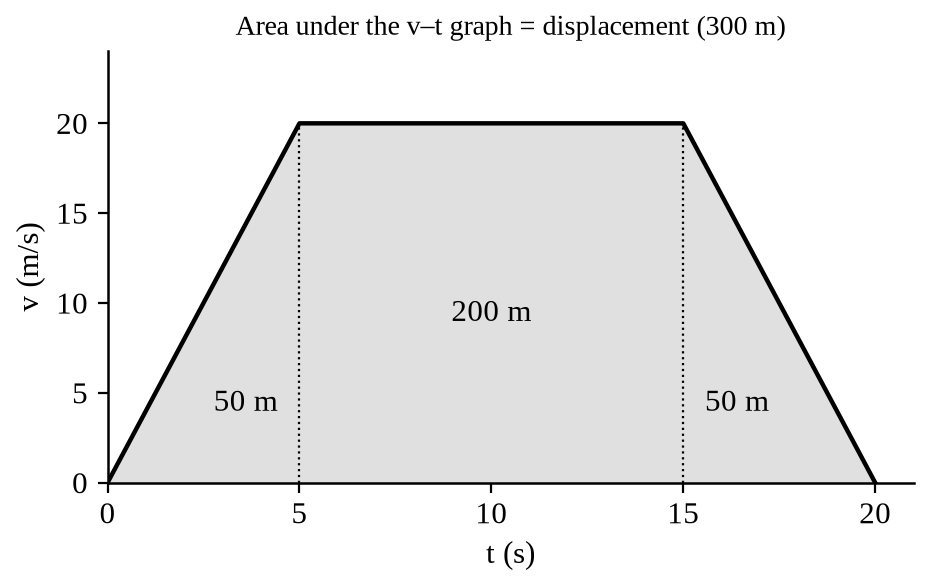
1.1.1.5 Common pitfalls and checks
- Average speed is distance over time, not the magnitude of average velocity; they differ whenever the motion reverses.
- Constant-acceleration formulas fail when a depends on t or x: integrate, or use a = v dv/dx.
- Check units and sign: a stone thrown up has a = −g for the whole flight, including the top.
Chapter Review
Key Terms
- displacement
- change of position; a vector depending only on end points
- distance
- total length of path travelled; a scalar
- instantaneous velocity
- limit of displacement over time as the interval goes to zero; dx/dt
- average speed
- total distance divided by total time
- acceleration
- rate of change of velocity, dv/dt
Key Equations
| Quantity | Equation |
|---|---|
| Instantaneous velocity | v = dx/dt |
| Acceleration | a = dv/dt = v dv/dx |
| Displacement | Δx = ∫ v dt |
| Constant a | v2 = v02 + 2 a Δx |
Summary
Velocity is the derivative of position and acceleration the derivative of velocity; reverse the process by integration. Areas under v-t graphs give displacement, slopes of x-t graphs give velocity. When a depends on x, use a = v dv/dx. Always fix an origin and a positive direction first.
Practice
Conceptual Questions
- C1. Can the average speed of a particle be larger than the magnitude of its average velocity? When are they equal? Answer
- C2. Can an object have zero velocity and non-zero acceleration? Give an example. Answer
- C3. What does the area under an acceleration-time graph represent? Answer
- C4. Two cars have the same displacement over the same time. Must they have had the same speed at every instant? Answer
Problems
- P1. x(t) = 3t2 − 2t3 (m). Find v at t = 1 s, the average velocity and the average speed for 0 to 2 s. Answer
- P2. A car accelerates uniformly 0 to 20 m/s in 5 s, cruises 10 s, brakes uniformly to rest in 5 s. Find the total distance and average velocity. Answer
- P3. A stone is thrown up at 20 m/s (g = 10). At what times is it 15 m above the start? Answer
- P4. A stone dropped from a tower covers 45 m in its last second (g = 10). Find the tower height. Answer
- P5. v = v0 e−kt with v0 = 10 m/s, k = 0.5 /s. Find the total distance travelled and v as a function of x. Answer
Challenge Problems
Chapter 1.1.2
Vector Algebra in Multiple Dimensions
Learning Objective (LO 1.1.2.A). Use components, dot products, cross products and triple products to describe and combine physical quantities in 2D and 3D.
Essential Knowledge (EK 1.1.2.A.1). Vector quantities add by components; the dot product measures projection (work), the cross product measures perpendicular area (torque), and the scalar triple product measures volume.
Skill 1.B. Utilize vector algebra (cross, dot and triple products) in 2D and 3D coordinate systems.
1.1.2.1 Components and unit vectors
A vector A = Ax i + Ay j + Az k. Its magnitude is |A| = √(Ax2 + Ay2 + Az2). Add and subtract by components. A unit vector is A/|A|.
Direction cosines: Ax/|A| = cos(α) with the x-axis, and so on; their squares sum to 1.
1.1.2.2 The dot product
A·B = AB cos(θ) = Ax Bx + Ay By + Az Bz
It is a scalar. A·B = 0 means perpendicular. The component of A along B is (A·B)/|B|, and the projection vector is ((A·B)/B2) B.
Physical uses: work W = F·d, power P = F·v, flux through a flat area = E·A.
1.1.2.3 The cross product
|A × B| = AB sin(θ)
The direction follows the right-hand rule and is perpendicular to both. In components:
A × B = (Ay Bz − Az By) i + (Az Bx − Ax Bz) j + (Ax By − Ay Bx) k
It is anticommutative, B × A = −(A × B). Physical uses: torque r × F, angular momentum r × p, magnetic force q v × B. The magnitude equals the area of the parallelogram on A and B.
1.1.2.4 Triple products and identities
Scalar triple product: A·(B × C) is the volume of the parallelepiped on the three vectors; it is zero if they are coplanar. It is unchanged by cyclic permutation.
Vector triple product: A × (B × C) = B(A·C) − C(A·B) (the BAC-CAB rule).
Lagrange identity: |A × B|2 + (A·B)2 = A2 B2.
Example
A = (2, 3, −1), B = (1, −2, 2). A·B = −6; |A| = √(14); |B| = 3; cos(θ) = −2/√(14), so θ = 122.3°. A × B = (4, −5, −7); check: it is perpendicular to both A and B (dot products are 0).
1.1.2.5 Common pitfalls and checks
- A·B = A·C does not imply B = C, and A × B = A × C does not imply B = C.
- The cross product is not commutative: B × A = −(A × B). Keep the order torque = r × F.
- Check results by dotting a cross product with its factors; it must be zero.
Chapter Review
Key Terms
- scalar product
- A·B = AB cos(θ), a scalar
- vector product
- A × B, a vector perpendicular to both, of magnitude AB sin(θ)
- scalar triple product
- A·(B × C), signed volume of the parallelepiped
- unit vector
- vector of magnitude 1 giving a direction
- projection
- component of one vector along another
Key Equations
| Quantity | Equation |
|---|---|
| Dot product | A·B = Ax Bx + Ay By + Az Bz |
| Cross product magnitude | |A × B| = AB sin(θ) |
| Triple product | A·(B × C) = B·(C × A) |
| BAC-CAB | A × (B × C) = B(A·C) − C(A·B) |
Summary
Vectors are handled by components. The dot product returns a scalar and picks out parallel parts; the cross product returns a perpendicular vector and picks out perpendicular parts. The triple product gives volume, and the BAC-CAB rule removes nested cross products.
Practice
Conceptual Questions
- C1. If A·B = A·C, must B = C? Answer
- C2. If A × B = A × C, must B = C? Answer
- C3. Why is the work done by a centripetal force zero? Answer
- C4. What does a zero scalar triple product say about three vectors? Answer
Problems
- P1. A = (2, 3, −1), B = (1, −2, 2). Find the angle between them. Answer
- P2. For the same A and B find a unit vector perpendicular to both. Answer
- P3. Find the component of A along B and the projection vector. Answer
- P4. F = (3, −1, 2) N acts over displacement d = (2, 2, 1) m. Find the work. Answer
- P5. r = (1, 2, 0) m, F = (0, 0, 5) N. Find the torque. Answer
Challenge Problems
Chapter 1.2.1
Projectile Motion over Inclined Planes
Learning Objective (LO 1.2.1.A). Analyze projectile motion on and over inclined planes by choosing axes along and perpendicular to the plane.
Essential Knowledge (EK 1.2.1.A.1). Using a tilted frame turns the problem into two uniformly accelerated motions with components g sin(θ) and g cos(θ); range, time of flight and maximum range follow from short formulas.
Skill 3.B. Translate a problem fluidly between laboratory, non-inertial and Center of Mass frames to minimize algebra.
1.2.1.1 Why tilt the axes
Choose x along the incline (up positive) and y perpendicular to it. Gravity splits into
ax = −g sin(θ), ay = −g cos(θ)
so both directions have constant acceleration and the plane is simply the line y = 0. This is a frame-choice (skill 3.B) rather than new physics: you pick the frame in which the landing condition is trivial.
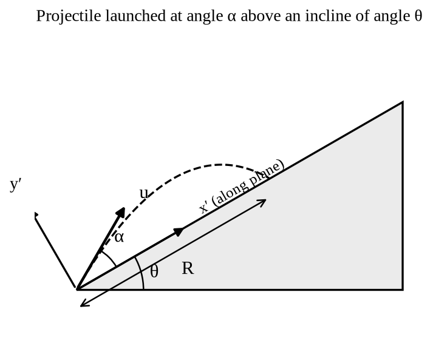
1.2.1.2 Range up the incline
Launch with speed u at angle α above the incline. Time of flight (back to y = 0):
T = 2 u sin(α) / (g cos(θ))
Range along the incline:
R = u cos(α) T − ½ g sin(θ) T2 = 2 u2 sin(α) cos(α + θ) / (g cos2(θ))
Maximum range occurs at α = 45° − θ/2:
Rmax(up) = u2 / (g (1 + sin(θ)))
For a downhill slope replace θ by −θ: Rmax(down) = u2 / (g (1 − sin(θ))), at α = 45° + θ/2 measured from the slope.
1.2.1.3 Worked examples
Example 1
u = 20 m/s, g = 10, θ = 30°. u2/g = 40 m. Rmax(up) = 40/1.5 = 26.7 m at α = 30° above the slope (60° above horizontal). Rmax(down) = 40/0.5 = 80 m.
Example 2: horizontal launch from a slope
Thrown horizontally at u = 10 m/s from a point on a plane sloping down at 45° (g = 10). Landing: tan(θ) = (g t2/2)/(u t), so t = 2 u tan(θ)/g = 2 s. Horizontal distance 20 m, drop 20 m; distance along the slope 28.3 m.
Example 3: launched perpendicular to the plane
u = 20 m/s perpendicular to a 30° incline: T = 2u/(g cos(θ)) = 4.62 s; the ball lands ½ g sin(θ) T2 = 53.3 m down the slope from the launch point.
1.2.1.4 Common pitfalls and checks
- Do not mix horizontal-vertical and incline axes in one equation; pick one frame and resolve g into it.
- Range formulas for the level ground (u2 sin(2 α)/g) are not valid on a slope.
- For down-slope shots replace θ by −θ; the answer must be larger than the up-slope range.
Chapter Review
Key Terms
- inclined-plane axes
- coordinate axes along and perpendicular to the plane
- time of flight
- time for the projectile to return to the plane
- range on an incline
- distance along the plane between launch and landing
- maximum range
- range for the best launch angle at fixed speed
Key Equations
| Quantity | Equation |
|---|---|
| Components of g | ax = −g sin(θ); ay = −g cos(θ) |
| Time of flight | T = 2 u sin(α)/(g cos(θ)) |
| Range up | R = 2u2 sin(α) cos(α+θ)/(g cos2(θ)) |
| Max range up | R = u2/(g(1+sin(θ))) |
Summary
Tilt the axes so the incline is the x-axis. Both motions then have constant acceleration. Maximum range up an incline is u2/(g(1+sin(θ))), at α = 45° − θ/2, and down it is u2/(g(1-sin(θ))).
Practice
Conceptual Questions
- C1. At fixed α, does the time of flight on an incline increase or decrease as θ grows? Explain using the perpendicular acceleration. Answer
- C2. Where does the range formula reduce to u2 sin(2 α)/g? Answer
- C3. Is the optimum launch angle above the horizontal larger up the slope or down it? Answer
Problems
- P1. u = 20 m/s, g = 10. Find the maximum range up a 30° incline and the launch angle above the slope. Answer
- P2. Same u. Find the maximum range down the slope. Answer
- P3. A ball is thrown horizontally at 10 m/s from a 45° downward slope (g = 10). Find the time and the distance along the slope. Answer
- P4. A ball is launched at 20 m/s perpendicular to a 30° incline (g = 10). Find the time of flight and where it lands. Answer
- P5. u = 20 m/s, α = 30° above a 30° incline (g = 10). Find the greatest height above the plane. Answer
Challenge Problems
Chapter 1.2.2
Relative Motion and Minimum Distance of Approach
Learning Objective (LO 1.2.2.A). Apply relative velocity to river-crossing, wind and approach problems, and compute the time and distance of closest approach.
Essential Knowledge (EK 1.2.2.A.1). Velocity of A relative to B is vA − vB; the minimum separation of two uniformly moving bodies is the perpendicular distance from the origin of relative position to the line of relative velocity.
Skill 1.B. Utilize vector algebra (cross, dot and triple products) in 2D and 3D coordinate systems.
1.2.2.1 Relative velocity
vAB = vA − vB (velocity of A as seen from B)
All velocities are measured in one common frame. For a boat: vboat/ground = vboat/water + vwater/ground. For rain on a walker: vrain/man = vrain − vman.
Draw the vector triangle first and label which side is known in magnitude and which in direction.
1.2.2.2 Closest approach
Two bodies move at constant velocity. In B's frame, A starts at r0 and moves with constant vrel. The separation is r(t) = r0 + vrel t. Minimizing |r|2:
tmin = − (r0 . vrel) / |vrel|2
dmin = |r0 x vrel| / |vrel| = d sin(φ)
where φ is the angle between vrel and the line r0 joining the bodies (reversed). Collision occurs when dmin = 0, that is r0 is antiparallel to vrel: the line of sight keeps a constant direction.
1.2.2.3 Worked examples
Example 1
Ship P at the origin moves (10, 0) m/s. Ship Q at (0, 100) m moves (0, −5) m/s. vQP = (−10, −5); r0 = (0, 100). dmin = |0(−5) − 100(−10)|/√(125) = 89.4 m, at t = 500/125 = 4 s.
Example 2: collision
Car A moves east at 20 m/s, 200 m west of a crossing. Car B moves north at 15 m/s, 150 m south of it. r0 (B from A) = (200, −150), vBA = (−20, 15) = −(1/10) r0. They reach the crossing together at t = 10 s: a collision.
Example 3: river
River 3 m/s, swimmer 5 m/s in still water, width 100 m. Shortest time: head straight across, t = 20 s, drift 60 m. Shortest path: head upstream with sin(φ) = ⅗, cross at 4 m/s, t = 25 s.
1.2.2.4 Common pitfalls and checks
- Relative velocity is vA − vB, not the sum; sketch the vector triangle before writing numbers.
- Closest approach is not at the instant the objects are level; use the perpendicular from the origin to the relative-velocity line.
- A collision needs the line of sight to keep a fixed direction, not merely equal speeds.
Chapter Review
Key Terms
- relative velocity
- velocity of one body as seen from another
- closest approach
- minimum separation of two moving bodies
- line of sight
- line joining two bodies
- drift
- downstream displacement while crossing a river
Key Equations
| Quantity | Equation |
|---|---|
| Relative velocity | vAB = vA − vB |
| Time of closest approach | t = −(r0.vrel)/|vrel|2 |
| Minimum distance | dmin = |r0 x vrel|/|vrel| |
| Rain/umbrella | tan(φ) = vman/vrain |
Summary
Work in the frame of one body. The other moves with constant relative velocity along a straight line; the minimum distance is the perpendicular distance from the origin to that line. A collision happens when the line of sight keeps a fixed direction.
Practice
Conceptual Questions
- C1. A man walks in rain falling vertically. Which way does he tilt his umbrella? Answer
- C2. Does a pilot flying due north from a point need to point her nose east or west of north if the wind blows west to east? Answer
- C3. How can you tell from the line of sight whether two ships will collide? Answer
Problems
- P1. Rain falls vertically at 3 km/h; a man walks at 4 km/h. Find the rain speed relative to him and the umbrella tilt from the vertical. Answer
- P2. River 3 m/s, swimmer 5 m/s, width 100 m. Find the minimum crossing time and the drift, and the time for the shortest path. Answer
- P3. A plane with airspeed 200 m/s wants to go due north; wind 50 m/s from west to east. Find the heading and the ground speed. Answer
- P4. Ship P (10, 0) m/s at the origin; ship Q (0, −5) m/s at (0, 100). Find the minimum distance and when it occurs. Answer
- P5. Two particles are thrown from one point at the same instant, one east at 3 m/s and one north at 4 m/s, both horizontal. After 2 s how far apart are they? (Ignore the ground.) Answer
Challenge Problems
Chapter 1.3.1
Kinematic Constraints in Multi-Body Systems
Learning Objective (LO 1.3.1.A). Write the kinematic constraint relations for strings, pulleys, rods and wedges and use them with Newton's laws.
Essential Knowledge (EK 1.3.1.A.1). A constraint is an equation between positions, velocities or accelerations of different bodies, and every inextensible string or rigid contact supplies one.
Skill 3.A. Identify geometric, kinematic and dynamic constraints in multi-body systems (pulley-string, wedge-block, rolling contact).
1.3.1.1 What a constraint says
An inextensible string keeps its total length fixed. Write the length as a sum of coordinates measured from a fixed reference, differentiate once for velocities and twice for accelerations.
A rigid contact keeps two surfaces touching: the velocities along the normal are equal.
Count unknowns: each constraint removes one independent coordinate.
1.3.1.2 Pulleys and strings
For a movable massless pulley supported by a string with two vertical segments, a pulled end moving at v moves the pulley at v/2. If a string passes over a fixed pulley and under a movable one whose other end is fixed to the ceiling, with y measured downward:
y2 + 2 yp = constant, so a2 = −2 ap
A massless pulley has net force zero: 2T equals the load it carries.
For a string pulled at speed u over a pulley at height h, a block at horizontal distance x on the floor moves at
v = u l / x = u / cos(θ), l = √(x2 + h2)
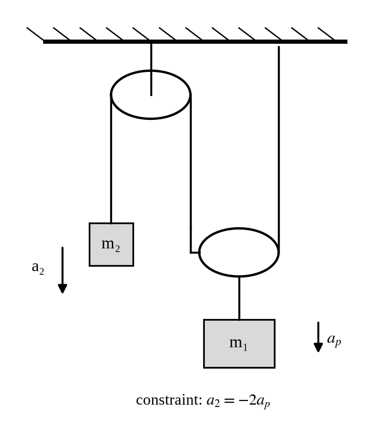
1.3.1.3 Wedge and rod constraints
A block sliding on a movable wedge: the block's velocity relative to the wedge is along the incline. A rod with ends on perpendicular walls: x2 + y2 = L2, so x vx + y vy = 0.
For a smooth wedge (mass M) on a smooth floor with a block m on the incline (angle θ):
A = m g sin(θ) cos(θ) / (M + m sin2(θ))
arel = (M + m) g sin(θ) / (M + m sin2(θ))
N = M m g cos(θ) / (M + m sin2(θ))
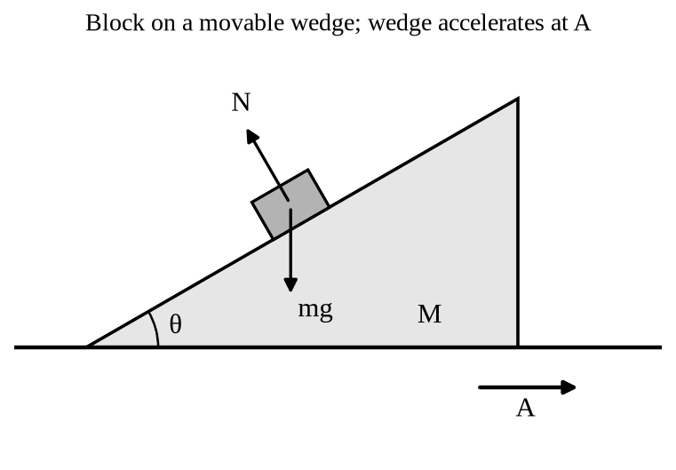
1.3.1.4 Worked examples
Example 1: movable pulley
Mass m2 hangs from a string over a fixed pulley; the string passes down and around a massless pulley carrying m1, and ends on the ceiling. Take y downward: a2 = −2 ap. Equations: m1 g − 2T = m1 ap and m2 g − T = m2 a2. Solving:
ap = (m1 − 2 m2) g / (m1 + 4 m2) (downward)
With m1 = 3 kg, m2 = 1 kg, g = 10: ap = 1.43 m/s2 down, a2 = 2.86 m/s2 up, T = 12.9 N. For m1 = 2 m2 the system balances.
Example 2: wedge
M = 2 kg, m = 1 kg, θ = 30°, g = 10: A = 10 × 0.433/2.25 = 1.92 m/s2; arel = 6.67 m/s2; N = 7.70 N.
1.3.1.5 Common pitfalls and checks
- Write the string constraint before the force equations, and take the same positive direction for every coordinate.
- A massless pulley has zero net force, so 2T balances its load only if the load is at rest or also massless.
- For wedge problems the block's acceleration relative to the wedge is along the incline, not the ground acceleration.
Chapter Review
Key Terms
- constraint
- an equation relating the coordinates or motions of different bodies
- inextensible string
- a string whose length cannot change
- massless pulley
- a pulley with zero net force on it, so tension is equal on both sides
- normal constraint
- touching surfaces share velocity along the normal
Key Equations
| Quantity | Equation |
|---|---|
| String and movable pulley | y2 + 2 yp = constant |
| Compound pulley | ap = (m1 − 2 m2) g/(m1 + 4 m2) |
| Wedge acceleration | A = m g sin(θ) cos(θ)/(M + m sin2(θ)) |
| Rod | x vx + y vy = 0 |
Summary
List the constraints before the force equations. Each inextensible string, rigid rod or contact reduces the unknowns. Differentiate twice to get acceleration constraints, then apply Newton's second law to each body.
Practice
Conceptual Questions
- C1. Why is the tension on both sides of an ideal pulley the same? Answer
- C2. Why is the wedge's acceleration non-zero even though only internal contact forces act horizontally? Answer
- C3. What does ap = 0 in the compound pulley tell you about the masses? Answer
Problems
- P1. Compound pulley with m1 = 3 kg on the movable pulley and m2 = 1 kg (g = 10). Find ap, a2 and T. Answer
- P2. M = 2, m = 1, θ = 30°, g = 10. Find the wedge acceleration, the relative acceleration and N. Answer
- P3. A ladder of length 5 m slides with its foot moving at 2 m/s. Find the speed of its top when the foot is 3 m from the wall. Answer
- P4. A string is pulled down at 2 m/s over a pulley 3 m above the floor. How fast does the block move when it is 4 m from the point below the pulley? Answer
- P5. 2 kg on a smooth table is joined over a pulley to 3 kg hanging (g = 10). Find a and T. Answer
Challenge Problems
Chapter 1.3.2
Non-Inertial Reference Frames and Pseudo Forces
Learning Objective (LO 1.3.2.A). Work in accelerating and rotating frames by adding pseudo forces, and use effective gravity to simplify the problem.
Essential Knowledge (EK 1.3.2.A.1). In a frame accelerating at a relative to an inertial frame every mass m feels an extra force −m a; in a frame rotating at ω a mass feels centrifugal m ω2 r outward (and a Coriolis force 2 m v x ω).
Skill 3.B. Translate a problem fluidly between laboratory, non-inertial and Center of Mass frames to minimize algebra.
1.3.2.1 Pseudo forces
Newton's second law holds only in inertial frames. In a frame with acceleration aframe, write Freal − m aframe = m arel. The term −m aframe is a pseudo force: it has no source, acts on all masses in proportion to m, and points opposite to the frame's acceleration.
Effective gravity: geff = g − aframe. Many problems reduce to ordinary ones with g replaced by geff:
geff = √(g2 + a2) for horizontal a, geff = g + a for an elevator accelerating upward.
1.3.2.2 Rotating frames
In a frame rotating at constant ω, a mass at distance r from the axis feels the centrifugal force m ω2 r (outward) and, when moving with velocity v relative to the frame, the Coriolis force −2 m (ω x v). The Coriolis force is perpendicular to v and does no work; its magnitude is 2 m ω v for motion perpendicular to the axis.
Use a rotating frame when bodies are at rest relative to the rotation (turntables, loops, cones); use the inertial frame if bodies are moving in complicated ways.
1.3.2.3 Worked examples
Example 1: pendulum in a car
a = 5 m/s2 (g = 10). The bob hangs at tan(θ) = a/g = 0.5, θ = 26.6°. geff = √(125) = 11.18 m/s2, so the small-oscillation period is T = 2 π √(L/geff).
Example 2: elevator
Lift accelerates upward at 2 m/s2 (g = 10). A 60 kg person has apparent weight 60(10 + 2) = 720 N; a pendulum's period becomes √(10/12) = 0.913 of its usual value.
Example 3: turntable
Coin at r = 0.5 m, μ = 0.4, g = 10. In the rotating frame: m ω2 r ≤ μ m g gives ωmax = √(0.4 × 10/0.5) = 2.83 rad/s.
Example 4: block at rest on a smooth wedge
The wedge is pushed horizontally with acceleration a. In its frame the block is in equilibrium: m a cos(θ) = m g sin(θ), so a = g tan(θ) = 5.77 m/s2 for θ = 30° and g = 10.
1.3.2.4 Common pitfalls and checks
- Pseudo forces exist only in the accelerating frame; never add them in an inertial-frame solution.
- The pseudo force is −m aframe: it points opposite to the frame's acceleration.
- Centrifugal force belongs to the rotating frame; in the inertial frame the force is centripetal.
Chapter Review
Key Terms
- pseudo force
- force −m a added in a non-inertial frame
- effective gravity
- vector sum of gravity and the pseudo force per unit mass
- centrifugal force
- outward pseudo force m ω2 r in a rotating frame
- Coriolis force
- pseudo force −2 m (ω x v) acting on bodies moving in a rotating frame
Key Equations
| Quantity | Equation |
|---|---|
| Pseudo force | F = −m aframe |
| Effective gravity | geff = g − aframe |
| Centrifugal | F = m ω2 r |
| Coriolis | F = −2 m (ω x v) |
Summary
Pseudo forces let you treat an accelerating frame as inertial. Add −m a to every mass, compute with geff, and remember the real forces are unchanged. In rotating frames add centrifugal and Coriolis terms.
Practice
Conceptual Questions
- C1. A free body in an accelerating car moves backward relative to the car. Is there a force on it? Answer
- C2. Why does the water surface in an accelerating tank tilt? Answer
- C3. Why does the Coriolis force do no work in the rotating frame? Answer
Problems
- P1. A pendulum hangs in a car accelerating at 5 m/s2 (g = 10). Find the angle of the string and geff. Answer
- P2. A 60 kg person in a lift accelerating upward at 2 m/s2 (g = 10). Find the apparent weight and the ratio of a pendulum's period to its usual one. Answer
- P3. A block rests on a smooth 30° wedge (g = 10). What horizontal acceleration of the wedge keeps the block at rest relative to it? Answer
- P4. A coin lies 0.5 m from the axis of a turntable (μ = 0.4, g = 10). Find the maximum angular speed. Answer
- P5. A 1 m long tank of water accelerates at 2 m/s2 (g = 10). What is the height difference of the water at the two ends? Answer
Challenge Problems
Chapter 1.4.1
Work-Energy Theorem with Variable Forces
Learning Objective (LO 1.4.1.A). Compute work for position-dependent forces by integration and use the work-energy theorem and power to find speeds and distances.
Essential Knowledge (EK 1.4.1.A.1). Work is the line integral of force along the path, W = ∫ F·dr; the net work equals the change in kinetic energy; power is F·v.
Skill 1.A. Apply differential and integral calculus to derive time-varying or spatially-varying physical quantities.
1.4.1.1 Work as an integral
For a constant force, W = F·d. For a variable force along a path:
W = ∫ F·dr = ∫ (Fx dx + Fy dy + Fz dz)
In one dimension W is the area under the F-x graph. Work done by a spring from x1 to x2 is
Wspring = ½ k (x12 − x22)
Work is a scalar and can be negative. A force perpendicular to the motion does no work (magnetic force, centripetal force, normal force on a fixed surface).
1.4.1.2 Work-energy theorem and power
Wnet = ∫ F·dr = ½ m v22 − ½ m v12
It holds for any force and any path, including non-conservative forces. It follows from F = m dv/dt = m v dv/dx.
Power: P = dW/dt = F·v. For constant engine power P a mass starting from rest has
v = √(2 P t / m), x = (⅔) √(2P/m) t3/2
1.4.1.3 Conservative forces and path independence
A force is conservative if the work done between two points is independent of the path, equivalently, the work around any closed loop is zero. Then F = -∇(U). Test: the curl vanishes, e.g. for F = (y, x) the potential is U = −xy; going from (0,0) to (1,1) by any route gives W = 1 J.
1.4.1.4 Worked examples
Example 1
F = 3x2 + 2 (N) acts on a 2 kg body from x = 0 to 2 m. W = x3 + 2x = 12 J. From rest, v = √(2 × 12/2) = 3.46 m/s.
Example 2: chain leaving a table
A uniform chain of length L, mass M, has length a hanging off a smooth table. As it slides off, energy conservation (potential measured relative to the table): -M g a2/(2L) = -M g L/2 + ½ M v2, so v = √(g (L2 − a2)/L). For L = 1 m, a = 0.2 m, g = 10: v = 3.10 m/s.
Example 3: car at constant power
P = 50 kW, m = 1000 kg. v(10 s) = √(2 × 50000 × 10/1000) = 31.6 m/s; distance = (⅔)(10)(101.5) = 211 m.
1.4.1.5 Common pitfalls and checks
- Work by a variable force is an integral; do not use F times d with an average value unless F is linear.
- Static friction and normal forces on fixed surfaces do no work, but kinetic friction does work in the lab frame.
- The work-energy theorem needs the net work of all forces, including non-conservative ones.
Chapter Review
Key Terms
- work
- energy transferred by a force: ∫ F·dr
- kinetic energy
- ½ m v2
- power
- rate of doing work, F·v
- conservative force
- force whose work is path independent
- work-energy theorem
- net work equals change in kinetic energy
Key Equations
| Quantity | Equation |
|---|---|
| Work | W = ∫ F·dr |
| Work-energy | Wnet = ΔK |
| Power | P = F·v |
| Spring work | W = ½ k (x12 − x22) |
Summary
Work is the integral of force along the path; the work-energy theorem equates net work and the change in kinetic energy for any forces. For a variable force draw F against x and find the area. Power is force times velocity.
Practice
Conceptual Questions
- C1. Does the normal force on a block sliding down a fixed incline do work? Answer
- C2. If the net work on a body is zero, must its speed be constant? Answer
- C3. How does the area under a F-x graph connect to kinetic energy? Answer
Problems
- P1. F = 3x2 + 2 (N) acts on a 2 kg body from x = 0 to 2 m from rest. Find W and the final speed. Answer
- P2. A spring (k = 200 N/m) is compressed 0.1 m and launches a 0.5 kg block on a smooth floor. Find the speed. Answer
- P3. A 1000 kg car, engine power 50 kW, starts from rest. Find its speed after 10 s and the distance travelled (ideal, no resistance). Answer
- P4. A uniform 2 kg chain 1 m long hangs fully over the edge of a table. How much work is done to pull it entirely back on (g = 10)? Answer
- P5. F = (y, x) N moves a body from (0, 0) to (1, 1) m by any path. Find W. Answer
Challenge Problems
Chapter 1.4.2
Potential Energy Curves and Stability Analyses
Learning Objective (LO 1.4.2.A). Interpret potential energy curves to find forces, equilibria, stability, turning points and oscillation frequencies, and extract constants from graphs.
Essential Knowledge (EK 1.4.2.A.1). The force is the negative slope of U(x); equilibria are points where dU/dx = 0, stable if d2U/dx2 > 0; near a stable minimum the motion is simple harmonic with ω = √(Uxx/m).
Skill 5.A. Extract physical constants and relationships from slopes, intercepts and areas under curves of non-linear plots using calculus.
1.4.2.1 Reading a U(x) graph
F(x) = −dU/dx
The force points downhill. Total energy E = K + U is a horizontal line; the particle can only be where E ≥ U. The points where U = E are turning points; where U < E the speed is v = √(2 (E − U)/m).
1.4.2.2 Equilibrium and stability
At equilibrium dU/dx = 0. Stable: Uxx > 0 (minimum); unstable: Uxx < 0 (maximum); neutral: Uxx = 0 over a range (flat).
Near a stable minimum x0 expand: U(x) ≈ U(x0) + ½ Uxx(x0) (x − x0)2, so the effective spring constant is k = Uxx(x0) and
ω = √(Uxx(x0)/m)
A particle with E above the barrier maximum escapes.
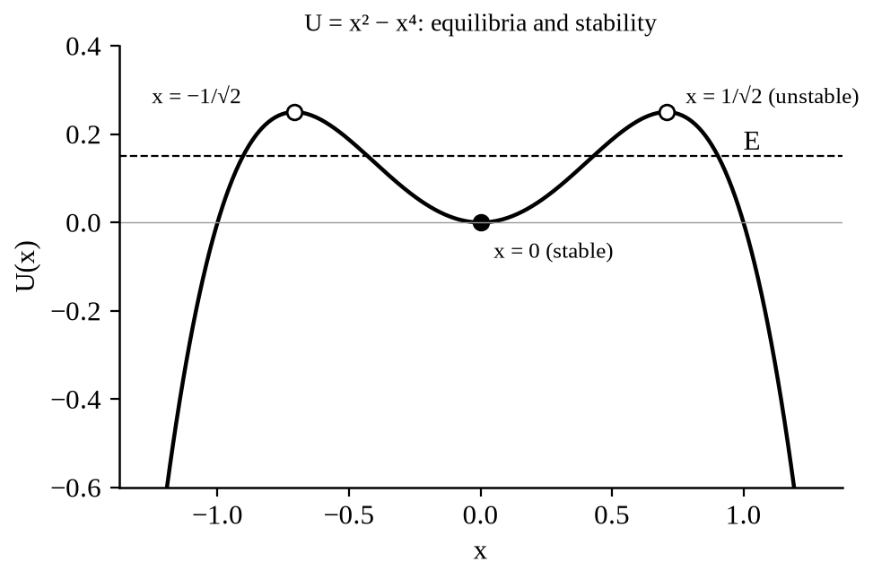
1.4.2.3 Worked examples
Example 1
U = x2 − x4 (J, x in m). F = −2x + 4x3. Equilibria: x = 0 and x = ±1/√(2). Uxx = 2 − 12 x2: at 0 it is +2 (stable), at ±0.707 it is −4 (unstable). U(±0.707) = 0.25 J. For m = 0.5 kg: ω = √(2/0.5) = 2 rad/s. If E > 0.25 J the particle escapes.
Example 2: Lennard-Jones
U = A/r12 − B/r6. Minimum at r0 = (2A/B)⅙ with Umin = -B2/(4A). With A = 1, B = 2: r0 = 1, Umin = −1, Uxx = 156 − 84 = 72.
Example 3: graph slope
U falls linearly from 10 J at x = 0 to 2 J at x = 4 m: F = +2 N, toward +x.
1.4.2.4 Common pitfalls and checks
- Equilibrium needs dU/dx = 0 and stability needs Uxx > 0; a zero slope alone does not tell you which.
- Turning points are where E = U, not where U is a minimum.
- In small-oscillation formulas use Uxx at the minimum, not the force constant of the original expression.
Chapter Review
Key Terms
- potential energy curve
- graph of U against position
- equilibrium
- a point where net force is zero, dU/dx = 0
- stable equilibrium
- a minimum of U; small displacements give restoring force
- turning point
- a point where E = U and the speed is zero
- effective spring constant
- the curvature Uxx at a minimum
Key Equations
| Quantity | Equation |
|---|---|
| Force from U | F = −dU/dx |
| Stability | Uxx > 0 stable |
| Small oscillations | ω = √(Uxx/m) |
| Speed | v = √(2 (E − U)/m) |
Summary
Force is minus the slope of U. Zero slope gives equilibrium; the sign of the curvature gives stability. A stable minimum behaves like a spring with k = Uxx and gives small oscillations at ω = √(Uxx/m). Turning points are where E meets U.
Practice
Conceptual Questions
- C1. On a U(x) graph where is the speed greatest? Answer
- C2. Can a particle with E below the top of a barrier cross it classically? Answer
- C3. How would you extract a spring constant from a measured U(x) near its minimum? Answer
Problems
- P1. U = x2 − x4 (SI). Find the equilibria, their stability, and the escape energy. Answer
- P2. For the same U and m = 0.5 kg find the angular frequency of small oscillations about x = 0. Answer
- P3. U = x3 − 3x. Find the equilibria and classify them. Answer
- P4. A particle (m = 2 kg) has U = 2 x2 and E = 6 J. Find the turning points and the speed at x = 1 m. Answer
- P5. A lone Lennard-Jones pair has U = A/r12 − B/r6 with A = 1 and B = 2 (SI). Find r0 and Umin. Answer
Challenge Problems
Chapter 1.5.1
Center of Mass of Continuous Distributions
Learning Objective (LO 1.5.1.A). Locate the center of mass of rods, plates, arcs, solids and composite bodies by integrating over mass elements, and use it to track system motion.
Essential Knowledge (EK 1.5.1.A.1). The center of mass is the mass-weighted average position, rcm = (1/M) ∫ r dm; for composites treat a hole as negative mass.
Skill 1.A. Apply differential and integral calculus to derive time-varying or spatially-varying physical quantities.
1.5.1.1 Definition and integration
rcm = (1/M) ∫ r dm
Set up dm from the geometry: dm = λ dx (rod), σ dA (plate), ρ dV (solid). Use symmetry first: the COM lies on any axis of symmetry.
For a rod with λ = λ0 x/L, M = λ0 L/2 and xcm = (λ0 L2/3)/(λ0 L/2) = 2L/3.
1.5.1.2 Standard results
| Body | COM from the center or base |
|---|---|
| Semicircular wire (radius R) | 2R/π from the center |
| Semicircular disc | 4R/(3 π) from the center |
| Solid hemisphere | 3R/8 from the center |
| Hollow hemisphere | R/2 from the center |
| Triangle plate | ⅓ of the height from the base |
| Solid cone | h/4 from the base |
| Hollow cone | h/3 from the base |
Composite and cutout bodies: treat the hole as a body of negative mass at its own center. A disc of radius R with a hole of radius R/2 centered at R/2: xcm = −(π R2/4)(R/2)/(π R2 − π R2/4) = -R/6.
1.5.1.3 Motion of the COM
M acm = Fext
Internal forces cannot move the COM. If the net external force is zero the COM velocity is constant.
Man on a boat: m = 60 kg walks the 6 m length of a 120 kg boat on still water. The COM stays fixed, so the boat moves m L/(M + m) = 2 m the other way.
1.5.1.4 Worked examples
Example 1
A rod has density ρ = ρ0 (1 + x/L). M = 1.5 ρ0 A L; ∫ x ρ A dx = (5/6) ρ0 A L2; xcm = 5L/9 = 0.556 L.
Example 2
A sphere of radius R has a spherical cavity of radius R/2 centered R/2 from the center. The cavity has ⅛ of the sphere's volume, so xcm = −(⅛)(R/2)/(7/8) = -R/14.
1.5.1.5 Common pitfalls and checks
- Always measure all positions from one origin; a mixed origin is the main error in composite problems.
- A hole is a negative mass at its own COM.
- The COM of an arc differs from that of the sector or disc with the same radius.
Chapter Review
Key Terms
- center of mass
- mass-weighted average position of a system
- mass element
- small piece dm used in an integral
- composite body
- a body built from simpler parts, possibly with holes
- λ, σ, ρ
- linear, surface and volume mass densities
Key Equations
| Quantity | Equation |
|---|---|
| COM | rcm = (1/M) ∫ r dm |
| System motion | M acm = Fext |
| Semicircular wire | ycm = 2R/π |
| Semicircular disc | ycm = 4R/(3 π) |
Summary
The center of mass is found by integrating r dm, or by treating composite pieces as point masses at their own centers (holes negative). The COM obeys Newton's second law for the whole system with external forces only.
Practice
Conceptual Questions
- C1. Can the center of mass lie outside the body? Answer
- C2. Why do internal forces not change the COM velocity? Answer
- C3. How does a hole change the COM of a uniform plate? Answer
Problems
- P1. λ = λ0 x/L on a rod of length 1.2 m. Find xcm. Answer
- P2. Find the COM of a semicircular wire and of a semicircular disc of R = 0.3 m. Answer
- P3. Find the COM of a solid and of a hollow hemisphere with R = 0.4 m. Answer
- P4. A disc of radius 0.6 m has a hole of radius 0.3 m touching its center, on the +x side. Find the COM. Answer
- P5. A 60 kg man walks 6 m along a 120 kg boat on still water. How far does the boat move? Answer
Challenge Problems
Chapter 1.5.2
Oblique and Inelastic Collisions
Learning Objective (LO 1.5.2.A). Solve elastic, inelastic and oblique collisions using momentum conservation, restitution and the center-of-mass frame.
Essential Knowledge (EK 1.5.2.A.1). Momentum is conserved in every collision; kinetic energy is conserved only in elastic ones; the coefficient of restitution e relates relative speeds along the line of impact.
Skill 2.B. Apply conservation laws (energy, momentum, angular momentum, charge) simultaneously to evaluate system transformations.
1.5.2.1 Conservation and restitution
For an isolated pair, p1 + p2 is conserved. Define
e = (relative speed of separation)/(relative speed of approach) along the line of impact
e = 1 elastic, e = 0 perfectly inelastic. Kinetic energy lost:
ΔK = ½ μ vrel2 (1 − e2), μ = m1 m2/(m1 + m2)
In one dimension with e = 1:
v1' = ((m1 − m2) v1 + 2 m2 v2)/(m1 + m2), v2' = ((m2 − m1) v2 + 2 m1 v1)/(m1 + m2)
1.5.2.2 Oblique collisions
Resolve velocities along the line of impact (normal) and perpendicular (tangent). For smooth bodies the impulse acts only along the normal: tangential components are unchanged, normal components follow momentum and restitution. For equal masses, elastic, target at rest: the final velocities are perpendicular.
Ball hitting a smooth wall: tangential speed unchanged, normal speed becomes e times its value reversed.
1.5.2.3 Worked examples
Example 1: inelastic
2 kg at 6 m/s sticks to 4 kg at rest: v = 2 m/s. K goes from 36 J to 12 J, a loss of 24 J = ½(1.33)(36).
Example 2: elastic
2 kg at 6 m/s strikes 4 kg at rest, e = 1: v1 = −2 m/s, v2 = 4 m/s.
Example 3: ballistic pendulum
Bullet 0.01 kg embeds in a 0.99 kg block that rises 0.2 m (g = 10): V = √(2 g h) = 2 m/s; v = (M + m) V/m = 200 m/s.
Example 4: oblique
A 5 m/s ball hits an identical ball at rest and deflects 30°: v1 = 5 cos(30) = 4.33 m/s, v2 = 5 sin(30) = 2.5 m/s at 60° on the other side.
1.5.2.4 Common pitfalls and checks
- Momentum is conserved in every collision; kinetic energy is not unless e = 1.
- In oblique collisions the tangential component is unchanged only for smooth bodies.
- The coefficient of restitution applies along the line of impact, not to speeds in the lab.
Chapter Review
Key Terms
- coefficient of restitution
- ratio of separation speed to approach speed along the line of impact
- perfectly inelastic collision
- bodies stick together, e = 0
- line of impact
- common normal at the contact point
- reduced mass
- μ = m1 m2/(m1 + m2)
- impulse
- integral of force over time, equal to change in momentum
Key Equations
| Quantity | Equation |
|---|---|
| Momentum | m1 v1 + m2 v2 = m1 v1' + m2 v2' |
| Restitution | e = (v2' − v1')/(v1 − v2) |
| Energy loss | ΔK = ½ μ vrel2 (1 − e2) |
| Bounce from height | hn = e2n h0 |
Summary
Momentum is always conserved. Use e along the line of impact, leave tangential components alone for smooth bodies, and use the reduced mass for the energy lost. The COM frame turns every collision into a reversal of the relative velocity, scaled by e.
Practice
Conceptual Questions
- C1. Can kinetic energy increase in a collision? Answer
- C2. In a perfectly inelastic collision is momentum conserved? Answer
- C3. Why must equal-mass elastic oblique collisions give a right angle? Answer
Problems
- P1. 2 kg at 6 m/s hits 4 kg at rest and sticks. Find v and the energy lost. Answer
- P2. Same masses but elastic. Find both final velocities. Answer
- P3. A ball dropped from 2 m rebounds to 1.28 m. Find e and the height after the second bounce. Answer
- P4. A 0.01 kg bullet embeds in a 0.99 kg block that rises 0.2 m (g = 10). Find the bullet speed. Answer
- P5. A 5 m/s ball hits an identical ball at rest and deflects 30° (elastic). Find both speeds. Answer
Challenge Problems
Chapter 1.6.1
Parallel and Perpendicular Axis Theorems
Learning Objective (LO 1.6.1.A). Compute moments of inertia of rods, plates and composite bodies with the parallel- and perpendicular-axis theorems.
Essential Knowledge (EK 1.6.1.A.1). I about any axis parallel to one through the center of mass is Icm + M d2; for a planar lamina the moment about a perpendicular axis equals the sum of the moments about two in-plane perpendicular axes.
Skill 1.A. Apply differential and integral calculus to derive time-varying or spatially-varying physical quantities.
1.6.1.1 Moment of inertia
I = ∫ r2 dm (r = perpendicular distance from the axis)
| Body | Axis | I |
|---|---|---|
| Thin rod, length L | through center, perpendicular | M L2/12 |
| Thin rod | through one end | M L2/3 |
| Ring, radius R | center, perpendicular | M R2 |
| Disc | center, perpendicular | M R2/2 |
| Solid sphere | diameter | 2 M R2/5 |
| Hollow sphere | diameter | 2 M R2/3 |
| Rectangular plate a × b | center, perpendicular | M(a2 + b2)/12 |
1.6.1.2 The two theorems
Parallel axis: I = Icm + M d2, where d is the distance between the two parallel axes.
Perpendicular axis (planar bodies only): Iz = Ix + Iy, where x and y are perpendicular axes in the plane that meet at the point where the z-axis passes.
Combining: a disc about a diameter is Id = M R2/4 by symmetry (Iz = M R2/2 = 2 Id). About a tangent in its plane: M R2/4 + M R2 = 5 M R2/4; about a tangent perpendicular to its plane: 3 M R2/2.
1.6.1.3 Worked examples
Example 1
Rod M = 3 kg, L = 2 m. Icm = 1 kg m2; Iend = 1 + 3(1)2 = 4 kg m2 = M L2/3.
Example 2
Square plate of side a: Iz (center) = M a2/6; by symmetry about an axis through the center parallel to a side is M a2/12, and about a diagonal also M a2/12. About an edge: M a2/12 + M a2/4 = M a2/3.
Example 3: composite
Rod (2 kg, 1 m) with two 1 kg masses at its ends. About the center: 2(1)/12 + 2(1)(0.5)2 = 0.667 kg m2. About one end: 0.667 + 4(0.5)2 = 1.667 kg m2.
1.6.1.4 Common pitfalls and checks
- The parallel axis theorem needs the axis through the COM as the starting point, never an arbitrary parallel axis.
- The perpendicular axis theorem is for planar bodies only.
- Add moments of inertia only about the same axis.
Chapter Review
Key Terms
- moment of inertia
- rotational analog of mass, the sum of m r2
- radius of gyration
- k = √(I/M)
- parallel axis theorem
- I = Icm + M d2
- perpendicular axis theorem
- for a lamina Iz = Ix + Iy
- lamina
- a thin flat body
Key Equations
| Quantity | Equation |
|---|---|
| Parallel axis | I = Icm + M d2 |
| Perpendicular axis | Iz = Ix + Iy |
| Rod end | I = M L2/3 |
| Disc diameter | I = M R2/4 |
Summary
I depends on the axis. Use the parallel axis theorem to move an axis away from the center of mass (I always increases) and the perpendicular axis theorem for flat bodies. Build composites by adding I of pieces about the same axis.
Practice
Conceptual Questions
- C1. Why is the parallel axis theorem valid only for the axis through the center of mass as the reference? Answer
- C2. Can the perpendicular axis theorem be applied to a solid sphere? Answer
- C3. Which has the larger I about its center: a ring or a disc of equal mass and radius? Answer
Problems
- P1. Rod M = 3 kg, L = 2 m. Find I about its end. Answer
- P2. Disc M = 2 kg, R = 0.5 m. Find I about a diameter, a tangent in its plane and a tangent perpendicular to its plane. Answer
- P3. Ring M = 1 kg, R = 1 m. Find I about a diameter and about a tangent in its plane. Answer
- P4. Square plate M = 6 kg, side 0.5 m. Find Iz at the center and about an edge. Answer
- P5. A 2 kg rod of length 1 m has 1 kg masses at each end. Find I about the center and about one end. Answer
Challenge Problems
- X1. A uniform disc of radius R is pivoted at distance d from its center. Show that ω2 = M g d/(Icm + M d2) is largest at d = k (radius of gyration), and find the shortest period for R = 0.2 m (g = 9.8). Answer
- X2. A uniform disc of mass 4m and radius R has a hole of radius R/2 centered at R/2 from the center (removed mass m, remaining mass 3m). Find I of the remainder about the axis through the center of the original disc, perpendicular to it. Answer
Chapter 1.6.2
Combined Translational and Rotational Kinematics / Rolling
Learning Objective (LO 1.6.2.A). Analyze rolling motion using the rolling constraint, energy, torque about the center and about the contact point, and friction conditions.
Essential Knowledge (EK 1.6.2.A.1). For pure rolling vcm = ω R; kinetic energy is ½ M v2 + ½ I ω2; acceleration down an incline is g sin(θ)/(1 + I/(M R2)); static friction does no work.
Skill 3.A. Identify geometric, kinematic and dynamic constraints in multi-body systems (pulley-string, wedge-block, rolling contact).
1.6.2.1 The rolling constraint
Pure rolling means the contact point is instantaneously at rest:
vcm = ω R, acm = α R
A point on the rim at angle φ from the contact point (measured at the center) has speed 2 v sin(φ/2); the top moves at 2v. Motion is a translation of the center plus a rotation about it, or equivalently a pure rotation about the contact point:
K = ½ M v2 + ½ I ω2 = ½ (I + M R2) ω2
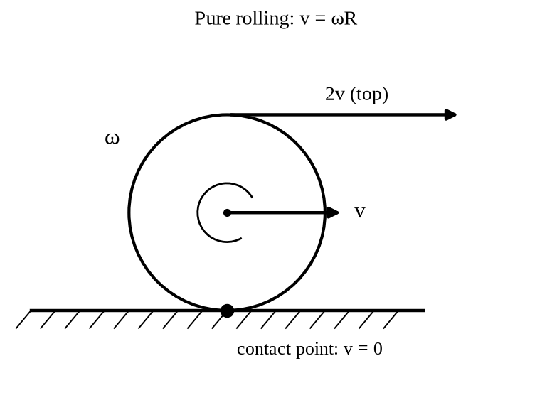
1.6.2.2 Rolling on an incline
Equations: M g sin(θ) − f = M a and f R = I α = I a/R. Hence
a = g sin(θ)/(1 + I/(M R2)), f = I a/R2
| Body | I/(M R2) | a | friction f | μ needed |
|---|---|---|---|---|
| Ring | 1 | g sin(θ)/2 | M g sin(θ)/2 | tan(θ)/2 |
| Disc or solid cylinder | ½ | 2 g sin(θ)/3 | M g sin(θ)/3 | tan(θ)/3 |
| Solid sphere | ⅖ | 5 g sin(θ)/7 | 2 M g sin(θ)/7 | 2 tan(θ)/7 |
Static friction here does no work (the contact point is at rest), so mechanical energy is conserved: K at the bottom = M g h, and v2 = 2 g h/(1 + I/(M R2)).
1.6.2.3 Rolling with slipping
If the body slips, kinetic friction f = μ N acts and both v and ω change until v = ω R. Use angular momentum about the contact point (friction has no torque about it): a sphere launched at v0 without spin ends rolling at (5/7) v0, losing 2/7 of its kinetic energy to friction.
1.6.2.4 Worked examples
Example 1: sphere on an incline
θ = 30°: a = (5/7)(10)(0.5) = 3.57 m/s2. From a height 1 m: v = √(10 g h/7) = 3.78 m/s.
Example 2: yo-yo
A disc of mass M falls on a string wound on its rim: M g − T = M a, T R = ½ M R2 (a/R). Then a = 2 g/3 and T = M g/3 (1 N for M = 0.3 kg).
Example 3: energy split
A disc of mass 2 kg rolls at 4 m/s: Ktrans = 16 J, Krot = 8 J, total 24 J (translation is ⅔ of the total).
1.6.2.5 Common pitfalls and checks
- Static friction in pure rolling does no work and is not μ N; find it from the equations.
- Use v = ω R only for pure rolling; with slipping it fails.
- Angular momentum about the contact point is conserved when kinetic friction acts at the contact point.
Chapter Review
Key Terms
- pure rolling
- motion without slipping, v = ω R
- instantaneous axis
- the contact point about which the body momentarily rotates
- static friction
- friction acting between surfaces at rest relative to each other
- rolling kinetic energy
- translational plus rotational kinetic energy
- slipping
- relative motion at the contact point
Key Equations
| Quantity | Equation |
|---|---|
| Rolling condition | v = ω R |
| Kinetic energy | K = ½ M v2 (1 + I/(M R2)) |
| Incline acceleration | a = g sin(θ)/(1 + I/(M R2)) |
| Yo-yo | a = 2g/3 |
Summary
In pure rolling the contact point is at rest, so v = ω R and K splits into translation and rotation. On an incline a is g sin(θ) divided by 1 + I/(MR2); the body with the smallest I/(MR2) wins. Friction is static, does no work and needs μ ≥ (I/(MR2)) tan(θ)/(1 + I/(MR2)).
Practice
Conceptual Questions
- C1. Why does a solid sphere beat a hollow one down an incline? Answer
- C2. Does static friction do work on a rolling wheel? Answer
- C3. If friction were zero on the incline, would the body still roll? Answer
Problems
- P1. A solid sphere rolls from rest down a 30° incline (g = 10). Find a and the speed after a drop of 1 m. Answer
- P2. Rank the ring, disc and solid sphere in a race down an incline. Give a/(g sin(θ)). Answer
- P3. A yo-yo (disc M = 0.3 kg) falls on a string. Find a and T (g = 10). Answer
- P4. Find the minimum μ for a solid sphere to roll without slipping on a 37° incline. Answer
- P5. A disc of mass 2 kg rolls at 4 m/s. Find the total kinetic energy and the translational part. Answer
Challenge Problems
Chapter 1.6.3
Conservation of Angular Momentum
Learning Objective (LO 1.6.3.A). Apply conservation of angular momentum, including to collisions with pivoted bodies and to central-force motion, together with energy and momentum.
Essential Knowledge (EK 1.6.3.A.1). The angular momentum of a system about a point is conserved when the net external torque about that point is zero; L = r × p for a particle and L = I ω for a rigid body.
Skill 2.B. Apply conservation laws (energy, momentum, angular momentum, charge) simultaneously to evaluate system transformations.
1.6.3.1 Angular momentum and torque
L = r × p, τ = r × F = dL/dt
For rotation about a fixed axis L = I ω and τ = I α. If τext = 0, L is constant. Torques and angular momentum must be taken about the same point; a force that is zero net can still give a torque (a couple), and gravity gives zero torque about the COM.
1.6.3.2 Conservation applications
Changing I: I1 ω1 = I2 ω2. A skater with I1 = 4 kg m2 at 2 rad/s who pulls her arms in to I2 = 1.6 kg m2 spins at 5 rad/s; her kinetic energy rises from 8 J to 20 J because the arms do work.
Sticking collisions with a rotor: drop 1 kg of clay on the rim (r = 0.5 m) of a 2 kg m2 disc at 3 rad/s: ω′ = 6/(2 + 0.25) = 2.67 rad/s; energy falls from 9 J to 8 J.
Bullet and rod: bullet 0.01 kg at 200 m/s strikes the free end of a 1 kg, 1 m rod pivoted at the other end: m v L = (M L2/3 + m L2) ω gives ω = 2/0.3433 = 5.83 rad/s. Linear momentum is not conserved because the pivot supplies an impulse; angular momentum about the pivot is.
Central forces: the force passes through the origin, so L is constant. Kepler's second law, r1 v1 = r2 v2: with r1 = 1×1011 m, v1 = 3×104 m/s and r2 = 1.5×1011 m: v2 = 2×104 m/s.
1.6.3.3 A projectile's angular momentum (a common trap)
For a projectile launched from the origin, about the launch point, Lz = m (x vy − y vx) = -½ m g vx t2. It is not conserved because gravity exerts a torque −m g x = −m g vx t about that point, and dL/dt = −m g vx t agrees. For m = 1 kg, vx = 10 m/s and t = 2 s: |L| = 200 kg m2/s, clockwise. Only about a point on the vertical line through which the force acts is the torque zero.
1.6.3.4 Pulled string on a table
A mass on a smooth table is attached to a string through a hole. Pulling the string shortens r: r1 v1 = r2 v2. With r going 0.5 m → 0.25 m and v1 = 2 m/s: v2 = 4 m/s; the work done by the pull is ½ m (16 − 4); for m = 0.5 kg that is 3 J.
1.6.3.5 Common pitfalls and checks
- Angular momentum and torque must be computed about the same point.
- Collisions with a pivoted body conserve angular momentum about the pivot, not linear momentum.
- Kinetic energy is not conserved when I changes; do not use it in place of L.
Chapter Review
Key Terms
- angular momentum
- r × p, or I ω for a rigid rotor
- torque
- r × F, rate of change of angular momentum
- couple
- a pair of equal and opposite forces giving pure torque
- central force
- a force always directed through a fixed point
- areal velocity
- ½ r × v, constant under a central force
Key Equations
| Quantity | Equation |
|---|---|
| Angular momentum | L = r × p = I ω |
| Torque | τ = dL/dt |
| Conservation | I1 ω1 = I2 ω2 |
| Central force | r1 v1 = r2 v2 |
Summary
If the net external torque about a point is zero, angular momentum about that point is conserved, even when kinetic energy is not. Use angular momentum about the pivot for impacts on hinged bodies, and watch that torques and L are about the same point.
Practice
Conceptual Questions
- C1. Why does a skater spin faster when she draws in her arms? Answer
- C2. Is momentum conserved when a bullet hits a pivoted rod? Answer
- C3. Where does the extra kinetic energy come from in the skater's case? Answer
Problems
- P1. A skater has I = 4 kg m2 at 2 rad/s and pulls in to I = 1.6 kg m2. Find the new rate and the change in kinetic energy. Answer
- P2. For a projectile (m = 1 kg, vx = 10 m/s) find L about the launch point at t = 2 s (g = 10). Answer
- P3. 1 kg of clay falls on the rim (0.5 m) of a 2 kg m2 disc rotating at 3 rad/s. Find the new ω and the energy lost. Answer
- P4. A 0.01 kg bullet at 200 m/s hits the free end of a 1 kg, 1 m rod pivoted at the other end and embeds. Find the angular speed. Answer
- P5. A planet has r = 1×1011 m with speed 3×104 m/s at perihelion. Find its speed at r = 1.5×1011 m. Answer
Challenge Problems
- X1. A 0.5 kg mass moves at 2 m/s in a circle of radius 0.5 m on a table; the string is pulled slowly to 0.25 m. Find the new speed and the work done. Answer
- X2. A platform (I = 100 kg m2) at rest has a 60 kg man at the rim (2 m radius) who starts walking at 1.5 m/s relative to the platform. Find the platform's angular speed. Answer
Chapter 1.7.1
Fluid Dynamics and Equation of Continuity
Learning Objective (LO 1.7.1.A). Apply the continuity equation and Bernoulli's equation to steady flow, jets, Venturi meters and draining tanks.
Essential Knowledge (EK 1.7.1.A.1). For steady incompressible flow A v is constant along a tube, and p + ½ ρ v2 + ρ g h is constant along a streamline.
Skill 2.A. Integrate principles from two or more distinct physics domains to solve single complex problems.
1.7.1.1 Continuity and flow rate
A1 v1 = A2 v2 = Q (volume flow rate)
An incompressible fluid speeds up where the cross-section narrows. For steady flow mass flow rate ρ A v is constant.
1.7.1.2 Bernoulli's equation
p + ½ ρ v2 + ρ g h = constant
It is the work-energy theorem per unit volume for steady, non-viscous, incompressible flow along a streamline. Consequences: pressure is lower where speed is higher (horizontal flow); a jet leaving a hole at depth h speeds out at v = √(2 g h) (Torricelli); a wing gets lift from pressure difference ½ ρ (vtop2 − vbottom2).
1.7.1.3 Applications
Venturi meter: p1 − p2 = ½ ρ v12 ((A1/A2)2 − 1).
Draining tank: area A, hole area a: v = √(2 g h) and tdrain = (A/a) √(2 h/g).
Range of a jet: hole at depth h in a tank of water depth H: range = 2 √(h (H − h)); holes at h and H − h give equal ranges.
1.7.1.4 Worked examples
Example 1
A pipe narrows from 20 cm2 to 5 cm2. With v1 = 1 m/s, v2 = 4 m/s and the pressure drop ½(1000)(16 − 1) = 7500 Pa.
Example 2
Hole 1.8 m below the surface, 1.25 m above the floor (g = 10): v = 6 m/s; fall time 0.5 s; landing 3 m from the tank.
Example 3: Venturi
A1 = 0.01 m2, A2 = 0.005 m2, p1 − p2 = 3000 Pa. ½(1000) v12 (4 − 1) = 3000 so v1 = 1.41 m/s and Q = 0.0141 m3/s.
Example 4: wing
Top speed 60 m/s, bottom 50 m/s, air 1.2 kg/m3: Δp = 660 Pa; wing area 20 m2 gives lift 13.2 kN.
1.7.1.5 Common pitfalls and checks
- Bernoulli applies along a streamline in steady, incompressible, non-viscous flow; it does not cross a pump.
- Use the same reference for h at both points.
- Continuity relates speeds at the cross-sections, not pressures.
Chapter Review
Key Terms
- continuity equation
- A v is constant for steady incompressible flow
- Bernoulli's equation
- energy conservation along a streamline
- Torricelli's law
- v = √(2 g h) for outflow at depth h
- streamline
- path followed by a fluid element in steady flow
- volume flow rate
- Q = A v
Key Equations
| Quantity | Equation |
|---|---|
| Continuity | A1 v1 = A2 v2 |
| Bernoulli | p + ½ ρ v2 + ρ g h = const |
| Torricelli | v = √(2 g h) |
| Drain time | t = (A/a) √(2 h/g) |
Summary
Continuity (A v = constant) and Bernoulli (p + ½ ρ v2 + ρ g h = constant) combine the conservation of mass and energy in fluids. Faster flow means lower pressure; outflow at depth h has speed √(2 g h).
Practice
Conceptual Questions
- C1. Why does the water stream from a tap get thinner as it falls? Answer
- C2. Why does a roof lift in a high wind? Answer
- C3. Can Bernoulli's equation be applied across a pump? Answer
Problems
- P1. A pipe narrows from 20 cm2 to 5 cm2 carrying water at 1 m/s in the wide part. Find v2 and the pressure drop. Answer
- P2. A hole is 1.8 m below the water surface and 1.25 m above the floor (g = 10). Find the exit speed and the horizontal range. Answer
- P3. A Venturi meter (A1 = 0.01 m2, A2 = 0.005 m2) records p1 − p2 = 3000 Pa. Find v1 and Q. Answer
- P4. A tank of area 1 m2 with a hole of 1 cm2 at the bottom is 1 m deep. How long to drain (g = 10)? Answer
- P5. A wing has air at 60 m/s above and 50 m/s below (1.2 kg/m3). Find the lift for 20 m2. Answer
Challenge Problems
Chapter 1.7.2
Viscosity and Surface Tension Forces
Learning Objective (LO 1.7.2.A). Apply Stokes' law, terminal velocity, Poiseuille flow and surface tension (pressure, capillary rise, energy) using small-quantity approximations.
Essential Knowledge (EK 1.7.2.A.1). Viscous drag on a small sphere is 6 π η r v; flow through a tube scales as r4; surface tension gives excess pressure 2T/R across a curved surface and a capillary rise h = 2 T cos(θ)/(ρ g r).
Skill 4.A. Apply binomial approximations, Taylor expansions and trigonometric limits for boundary conditions.
1.7.2.1 Viscosity
Viscous force between layers: F = η A (dv/dz). Stokes' law for a small sphere at low Reynolds number: F = 6 π η r v. Terminal velocity (weight = buoyancy + drag):
vt = 2 r2 (ρ − σ) g / (9 η)
Starting from rest, v(t) = vt (1 − exp(−t/τ)); neglecting buoyancy, τ = 2 r2 ρ/(9 η).
Poiseuille's law: Q = π Δp r4/(8 η L). The fourth power means doubling the radius multiplies the flow by 16. The flow is analogous to current: Δp is voltage and 8 η L/(π r4) is the resistance.
1.7.2.2 Surface tension
Surface tension T is energy per unit area (or force per unit length). Excess pressure inside: a liquid drop 2T/R; a bubble in liquid 2T/R; a soap bubble (two surfaces) 4T/R.
Capillary rise: h = 2 T cos(θ)/(ρ g r), with θ the contact angle. Energy: creating area ΔA costs T ΔA. If n drops of radius r merge into one, the energy released is 4 π T r2 (n − n⅔).
1.7.2.3 Worked examples
Example 1: terminal speed
Steel ball (r = 1 mm, ρ = 7800) in glycerin (σ = 1260, η = 0.9): vt = 2(1×10−6)(6540)(9.8)/(9 × 0.9) = 1.58 cm/s.
Example 2: Poiseuille
r = 1 mm, L = 0.1 m, Δp = 1000 Pa, water η = 1×10−3 Pa s: Q = 3.93×10−6 m3/s.
Example 3: capillary rise
Water (T = 0.072 N/m), r = 0.5 mm, θ = 0: h = 2.94 cm.
Example 4: bubbles
Soap bubble R = 1 cm, T = 0.03: excess pressure 12 Pa. Water drop r = 1 mm: 144 Pa.
Example 5: merging drops
Eight drops of radius 1 mm merge: energy released = 4 π (0.072)(1×10−6)(8 − 4) = 3.6×10−6 J.
1.7.2.4 Common pitfalls and checks
- Stokes drag is valid only at low Reynolds number (small, slow spheres).
- A soap bubble has two surfaces: excess pressure is 4T/R, not 2T/R.
- In Poiseuille flow the flow rate depends on r4: halving the radius reduces it sixteen-fold.
Chapter Review
Key Terms
- viscosity
- internal friction of a fluid, η
- terminal velocity
- constant speed when drag plus buoyancy equals weight
- Poiseuille flow
- laminar flow through a tube, Q proportional to r4
- surface tension
- energy per unit surface area
- capillary rise
- height of liquid in a narrow tube due to surface tension
Key Equations
| Quantity | Equation |
|---|---|
| Stokes drag | F = 6 π η r v |
| Terminal velocity | vt = 2 r2 (ρ − σ) g/(9 η) |
| Poiseuille | Q = π Δp r4/(8 η L) |
| Capillary rise | h = 2 T cos(θ)/(ρ g r) |
Summary
Small spheres in a viscous fluid reach a terminal velocity proportional to r2; flow in a narrow tube scales as r4; surface tension adds 2T/R of excess pressure and lifts liquid in capillaries. The same analysis works in limiting cases (very small r, very large η).
Practice
Conceptual Questions
- C1. Why does a raindrop reach a terminal speed? Answer
- C2. Why is the excess pressure in a soap bubble twice that in a drop of the same size? Answer
- C3. What does halving a blood vessel's radius do to the flow at a fixed pressure difference? Answer
Problems
- P1. Find the terminal speed of a 1 mm radius steel ball in glycerin (7800 kg/m3 ball, 1260 kg/m3 glycerin, η = 0.9 Pa s). Answer
- P2. Find the volume flow of water (η = 1×10−3) in a tube r = 1 mm, L = 0.1 m under Δp = 1000 Pa. Answer
- P3. Find the capillary rise of water in a 0.5 mm radius tube (T = 0.072, θ = 0). Answer
- P4. Find the excess pressure in a soap bubble of R = 1 cm (T = 0.03) and in a 1 mm water drop (T = 0.072). Answer
- P5. Find the work to blow a soap bubble from R = 1 cm to 2 cm (T = 0.03, two surfaces). Answer
Challenge Problems
Part 2 — Rhythm and Waves
Repeating motion and the disturbances that carry it through space.
Unit 2: Waves and Acoustics
OpenStax University Physics Vol 1, Ch 15-17
- Topic 2.1: Oscillations and Travelling Waves
- Topic 2.2: Sound and Wave Interference
Chapter 2.1.1
Torsional, Physical, and Damped Oscillations
Learning Objective (LO 2.1.1.A). Model torsional, physical-pendulum and damped oscillations, using small-angle and light-damping approximations.
Essential Knowledge (EK 2.1.1.A.1). A restoring torque proportional to angle gives simple harmonic motion with ω = √(κ/I); a physical pendulum has ω = √(M g d/I); linear damping gives x = A exp(−b t/2m) cos(ω′ t) with ω′ = √(ω02 − (b/2m)2).
Skill 4.A. Apply binomial approximations, Taylor expansions and trigonometric limits for boundary conditions.
2.1.1.1 Torsional and physical pendulums
Torsional: τ = −κ θ gives
T = 2 π √(I/κ)
Physical pendulum (rigid body pivoted at distance d from its COM): τ = -M g d sin(θ), which for small θ is -M g d θ:
T = 2 π √(I/(M g d)), I = Icm + M d2
The equivalent simple pendulum length is I/(M d). The small-angle approximation sin(θ) ≈ θ is accurate to 1% up to about 14°; the period correction at amplitude θ0 is T = T0 (1 + θ02/16).
Rod pivoted at its end: I = M L2/3, d = L/2, T = 2 π √(2L/(3g)); L = 1 m gives 1.64 s. Disc pivoted at its rim: T = 2 π √(3R/(2g)).
2.1.1.2 Damped oscillations
Linear drag F = −b v. The equation m d2x/dt2 + b dx/dt + k x = 0 has three regimes with ω0 = √(k/m), γ = b/(2m):
- underdamped (γ < ω0): x = A exp(−γ t) cos(ω′ t + φ), ω′ = √(ω02 − γ2)
- critically damped: γ = ω0, bc = 2 √(k m), fastest return without oscillating
- overdamped: γ > ω0, slow exponential return
The envelope falls as exp(−b t/2m); energy falls as exp(−b t/m). The quality factor is Q = ω0 m/b = ω0/(2 γ). For light damping (γ ≪ ω0) ω′ ≈ ω0 (1 − γ2/(2 ω02)).
2.1.1.3 Worked examples
Example 1: torsion
Disc I = 0.02 kg m2, κ = 0.5 N m/rad: T = 2 π √(0.04) = 1.26 s.
Example 2: damped spring
m = 0.5 kg, k = 50 N/m, b = 1 kg/s: ω0 = 10 rad/s, γ = 1/s, ω′ = √(99) = 9.95 rad/s, amplitude falls by 1/e in 1 s, Q = 5.
Example 3: critical damping
For the same m and k: bc = 2 √(50 × 0.5) = 10 kg/s.
2.1.1.4 Common pitfalls and checks
- The small-angle approximation needs radians.
- For a physical pendulum use the distance d from the pivot to the COM and I about the pivot.
- The damped frequency is slightly lower than the natural frequency; the envelope decays as exp(−b t/2m), the energy as exp(−b t/m).
Chapter Review
Key Terms
- torsional oscillator
- body whose restoring torque is proportional to angle
- physical pendulum
- extended rigid body swinging about a fixed pivot
- damping coefficient
- b in F = −b v
- critical damping
- borderline between oscillating and non-oscillating return
- quality factor
- Q = ω0 m/b; number of radians of phase per e-fold of energy
Key Equations
| Quantity | Equation |
|---|---|
| Torsional period | T = 2 π √(I/κ) |
| Physical pendulum | T = 2 π √(I/(M g d)) |
| Damped frequency | ω′ = √(ω02 − (b/2m)2) |
| Critical damping | bc = 2 √(k m) |
Summary
Linearize with the small-angle approximation and read off the angular frequency from the restoring term. Damping multiplies the motion by exp(−b t/2m) and slightly lowers the frequency; critical damping is the boundary.
Practice
Conceptual Questions
- C1. Why does the period of a physical pendulum depend on the pivot position? Answer
- C2. Does damping change the period of a lightly damped oscillator much? Answer
- C3. What does Q tell you about energy loss per cycle? Answer
Problems
- P1. A disc with I = 0.02 kg m2 hangs on a wire with κ = 0.5 N m/rad. Find the period. Answer
- P2. A uniform 1 m rod swings about one end (g = 9.8). Find T and the equivalent simple pendulum length. Answer
- P3. m = 0.5 kg, k = 50 N/m, b = 1 kg/s. Find ω′, the time for the amplitude to fall by 1/e and Q. Answer
- P4. A pendulum swings with amplitude 10°. By what fraction does the period exceed the small-angle value? Answer
- P5. A mass of 2 kg on a 200 N/m spring has amplitude 0.1 m. Find T, vmax and the energy. Answer
Challenge Problems
Chapter 2.1.2
Wave Speed on Stretched Strings
Learning Objective (LO 2.1.2.A). Derive and use the speed of transverse waves on a string, the wave equation, and the power carried by a travelling wave.
Essential Knowledge (EK 2.1.2.A.1). The wave speed on a string is v = √(T/μ); a travelling wave y = A sin(kx − wt) has v = ω/k and carries average power ½ μ ω2 A2 v.
Skill 1.A. Apply differential and integral calculus to derive time-varying or spatially-varying physical quantities.
2.1.2.1 The wave equation
Take a small element dx of a string with tension T. For small slopes the net transverse force is T (∂2y/∂x2) dx, which equals (μ dx)(∂2y/∂t2):
∂2y/∂x2 = (μ/T) ∂2y/∂t2 so v = √(T/μ)
Any function f(x − vt) is a solution. The speed depends only on the medium (T and μ), not on frequency or amplitude.
2.1.2.2 Travelling and reflected waves
y = A sin(k x − ω t), k = 2 π/λ, ω = 2 π f, v = ω/k = λ f. The transverse particle speed is yt = -A ω cos(k x − ω t), maximum A ω, which is different from the wave speed v.
At a junction of two strings with speeds v1 and v2 the frequency is unchanged. Amplitude coefficients (incident from string 1):
reflected r = (v2 − v1)/(v1 + v2), transmitted t = 2 v2/(v1 + v2)
A reflection from a fixed end is inverted (r = −1); from a free end it is not (r = +1). Wavelength in string 2 is λ2 = λ1 v2/v1.
2.1.2.3 Energy and power
Energy per unit length: ½ μ ω2 A2. Average power:
P = ½ μ ω2 A2 v = ½ √(μ T) ω2 A2
Power scales with the square of amplitude and of frequency.
Hanging rope: tension at distance x from the bottom is μ g x, so v = √(g x), and the time for a pulse to run the full length L is 2 √(L/g).
2.1.2.4 Worked examples
Example 1
μ = 0.01 kg/m, T = 100 N: v = 100 m/s.
Example 2
y = 0.02 sin(10 x − 200 t): v = 200/10 = 20 m/s, λ = 0.628 m, f = 31.8 Hz, maximum transverse speed 4 m/s. Check the wave equation: (200)2/(10)2 = 400 = v2.
Example 3
Rope of mass 2 kg and length 4 m, with an 18 kg weight at the bottom (g = 10): v at the bottom = √(18 × 10/0.5) = 19.0 m/s; at the top √(20 × 10/0.5) = 20 m/s.
2.1.2.5 Common pitfalls and checks
- Wave speed v = √(T/μ) is not the speed of a particle of the string.
- Frequency does not change at a boundary; wavelength and speed do.
- Reflection from a fixed end inverts the pulse; from a free end it does not.
Chapter Review
Key Terms
- wave speed
- distance travelled by a wave pattern per unit time
- linear density
- mass per unit length, μ
- wave number
- k = 2 π/λ
- transmission and reflection
- division of a wave at a boundary
- wave power
- energy transported per unit time
Key Equations
| Quantity | Equation |
|---|---|
| Wave speed on string | v = √(T/μ) |
| Travelling wave | y = A sin(k x − ω t); v = ω/k |
| Power | P = ½ μ ω2 A2 v |
| Reflection | r = (v2 − v1)/(v1 + v2) |
Summary
The speed of a transverse wave comes from the wave equation: v = √(T/μ). Frequency is fixed by the source, so wavelength changes with the medium. Power grows as A2 ω2. At a boundary the amplitudes of reflected and transmitted waves come from continuity of y and slope.
Practice
Conceptual Questions
- C1. Doubling the tension: how does the wave speed change? Answer
- C2. Is the wave speed equal to the particle speed? Answer
- C3. Why is a pulse reflected from a fixed end inverted? Answer
Problems
- P1. A string has μ = 0.01 kg/m and T = 100 N. Find v. Answer
- P2. For y = 0.02 sin(10 x − 200 t) (SI) find v, λ, f and the maximum transverse speed. Answer
- P3. μ = 0.05 kg/m, T = 20 N, ω = 200 rad/s, A = 1 cm. Find the average power. Answer
- P4. A hanging uniform rope of length 10 m: how long does a pulse take to travel its length (g = 10)? Answer
- P5. A wave goes from string 1 to a string with four times the linear density (same tension). Find λ2/λ1 and the transmitted and reflected amplitude ratios. Answer
Challenge Problems
Chapter 2.2.1
Resonance in Air Columns and Standing Waves
Learning Objective (LO 2.2.1.A). Determine resonances in open and closed air columns and strings using node-antinode boundary conditions.
Essential Knowledge (EK 2.2.1.A.1). A closed end is a displacement node and an open end an antinode; resonance needs a whole number of half-wavelengths between like ends or an odd number of quarter-wavelengths between unlike ends.
Skill 3.A. Identify geometric, kinematic and dynamic constraints in multi-body systems (pulley-string, wedge-block, rolling contact).
2.2.1.1 Boundary conditions
Displacement: node at a closed end or fixed string end, antinode at an open end (pressure is the opposite: node at an open end, antinode at a closed end). The open-end antinode sits slightly outside the pipe: effective length L + 0.6 r (end correction e = 0.6 r for each open end).
2.2.1.2 Resonant frequencies
| System | Frequencies |
|---|---|
| String fixed at both ends, pipe open at both ends | fn = n v/(2L), n = 1, 2, 3... |
| Pipe closed at one end | fn = (2n − 1) v/(4L): odd harmonics only |
Constraint view (3.A): the geometry fixes the pattern, so one equation per end gives the allowed k. Two consecutive resonances in a closed pipe differ by 2 f1; in an open pipe by f1.
A string plucked a fraction 1/m of its length from one end omits harmonics n that are multiples of m (the plucked point would have to be a node).
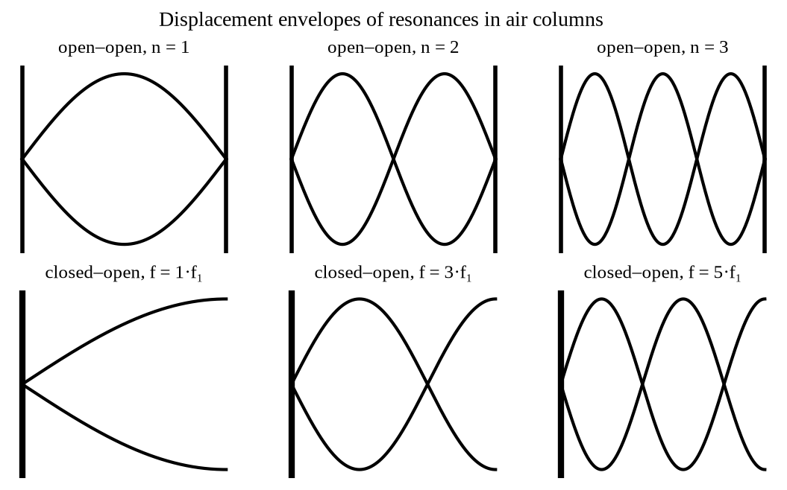
2.2.1.3 Worked examples
Example 1
L = 0.5 m, v = 340 m/s. Open: 340, 680, 1020 Hz. Closed: 170, 510, 850 Hz.
Example 2: resonance tube
Fork 500 Hz, resonances at 17 cm and 51.5 cm: v = 2 f (L2 − L1) = 345 m/s; e = (L2 − 3 L1)/2 = 0.25 cm.
Example 3
A closed pipe resonates at 300 Hz and 500 Hz with no resonance between: 2 f1 = 200 so f1 = 100 Hz, L = v/(4 f1) = 0.85 m.
Example 4: temperature
v = 331 √(1 + T/273): at 27 °C v = 347 m/s, so a 0.5 m open pipe's fundamental rises from 331 Hz to 347 Hz.
2.2.1.4 Common pitfalls and checks
- Count nodes and antinodes from the boundary conditions, not from memory.
- A closed pipe has odd harmonics only.
- Include the end correction when comparing with lab data; eliminate it using L2 − L1.
Chapter Review
Key Terms
- standing wave
- pattern formed by two equal waves moving in opposite directions
- node
- point of zero amplitude
- antinode
- point of maximum amplitude
- end correction
- effective lengthening of an open pipe, about 0.6 r
- harmonic
- integer multiple of the fundamental
Key Equations
| Quantity | Equation |
|---|---|
| Open pipe or string | fn = n v/(2L) |
| Closed pipe | fn = (2n − 1) v/(4L) |
| End correction | e = 0.6 r |
| Speed of sound | v = 331 √(1 + T/273) |
Summary
Standing waves require the boundary conditions at both ends. Open-open and fixed-fixed give all integer harmonics; closed-open gives only odd ones. Resonance spacing gives the wave speed independent of end corrections.
Practice
Conceptual Questions
- C1. Why does a closed pipe sound an octave lower than an open one of the same length? Answer
- C2. How can the end correction be eliminated in a resonance experiment? Answer
- C3. Why is the displacement antinode at an open end a pressure node? Answer
Problems
- P1. A 0.5 m open pipe and a 0.5 m closed pipe (v = 340). List the first three resonances of each. Answer
- P2. Resonances with a 500 Hz fork occur at 17 cm and 51.5 cm. Find v and the end correction. Answer
- P3. A 0.6 m string is fixed at both ends with f1 = 250 Hz and μ = 0.004 kg/m. Find v and T. Answer
- P4. A closed pipe resonates at 300 Hz and 500 Hz with none between. Find f1 and the length (v = 340). Answer
- P5. An open pipe of 0.5 m: find the fundamental at 0 °C (331 m/s) and at 27 °C. Answer
Challenge Problems
Chapter 2.2.2
Relativistic and Classical Doppler Effects for Sound
Learning Objective (LO 2.2.2.A). Apply Doppler shifts for moving sources, observers, reflectors and wind in the medium frame, and contrast them with the relativistic Doppler shift for light.
Essential Knowledge (EK 2.2.2.A.1). For sound f' = f (v + vo)/(v − vs) with speeds measured relative to the medium, toward each other positive; for light f' = f √((1 + β)/(1 − β)) for approach.
Skill 3.B. Translate a problem fluidly between laboratory, non-inertial and Center of Mass frames to minimize algebra.
2.2.2.1 Sound in a medium
Work in the frame of the air. For the observer moving at vo toward the source and the source moving at vs toward the observer:
f' = f (v + vo)/(v − vs)
Use + for the observer moving toward and − for the source moving toward; reverse for moving away. Because the medium defines the frame, source motion and observer motion give different formulae. A steady wind of speed ω blowing from source to observer changes the sound speed to v + ω for the motion of the wavefronts, but if source and observer are both at rest the frequency is unchanged.
2.2.2.2 Reflection and beats
A moving wall first acts as a moving observer and then as a moving source. A wall approaching at u gives fecho = f (v + u)/(v − u). The beat frequency between direct and reflected sound is the difference fecho − f.
For small speeds u ≪ v both motions give about f (1 + u/v); they differ at second order in u/v. Taylor: v/(v − u) = 1 + u/v + (u/v)2 + ...
2.2.2.3 The relativistic case
Light needs no medium, so only the relative velocity matters:
f' = f √((1 + β)/(1 − β)) (approach), β = u/c
For receding sources β is negative. At small β, f' ≈ f (1 + β), the same as classical sound to first order. A source receding at β = 0.6 gives f' = f √(0.4/1.6) = f/2. This chapter's 3.B skill is to pick the frame (medium or source) where the algebra is simplest.
2.2.2.4 Worked examples
Example 1
Siren 700 Hz at 30 m/s (v = 340): approaching 767.7 Hz, receding 643.2 Hz.
Example 2
Observer approaches a stationary 500 Hz source at 20 m/s: f' = 500 × 360/340 = 529.4 Hz.
Example 3
Wall approaching at 10 m/s, source 1000 Hz at rest: echo = 1000 × 350/330 = 1060.6 Hz; beat 60.6 Hz.
2.2.2.5 Common pitfalls and checks
- Speeds in the sound Doppler formula are relative to the medium, not to each other.
- Toward means a higher frequency; check your sign choices with this at the end.
- For light only the relative velocity matters; do not use the sound formula.
Chapter Review
Key Terms
- Doppler effect
- change in observed frequency due to relative motion
- medium frame
- the frame in which the sound-carrying medium is at rest
- beat frequency
- difference of two close frequencies
- echo
- sound reflected from a surface
- relativistic Doppler shift
- shift for light, depends on relative velocity only
Key Equations
| Quantity | Equation |
|---|---|
| Sound Doppler | f' = f (v + vo)/(v − vs) |
| Echo from a wall | f' = f (v + u)/(v − u) |
| Light Doppler | f' = f √((1 + β)/(1 − β)) |
| Small speed | f'/f ≈ 1 + u/v |
Summary
The classical Doppler shift depends on speeds relative to the medium, so source and observer motion give different formulae; light depends only on relative velocity. Reflections count twice. For small u/v all agree to first order.
Practice
Conceptual Questions
- C1. Why do the formulas for a moving source and a moving observer differ for sound? Answer
- C2. Does wind change the frequency heard by a stationary observer? Answer
- C3. What is the beat frequency from a stationary source and a wall moving toward it? Answer
Problems
- P1. A 700 Hz siren moves at 30 m/s (v = 340). Find the frequency heard ahead and behind it. Answer
- P2. An observer walks at 20 m/s toward a stationary 500 Hz source (v = 340). Find f'. Answer
- P3. A wall moves toward a stationary 1000 Hz source at 10 m/s. Find the echo frequency and the beat frequency. Answer
- P4. Source and observer at rest with wind of 20 m/s blowing between them. Does the frequency change? Answer
- P5. A light source recedes at 0.6 c. Find f'/f. Answer
Challenge Problems
Part 3 — Heat and Statistics
How huge numbers of particles produce temperature, pressure and engines.
Unit 3: Thermodynamics
OpenStax University Physics Vol 2, Ch 1-4
- Topic 3.1: Temperature, Kinetic Theory and Gas Laws
- Topic 3.2: First and Second Laws of Thermodynamics
Chapter 3.1.1
Maxwell-Boltzmann Distribution and Degree of Freedom
Learning Objective (LO 3.1.1.A). Use the Maxwell-Boltzmann speed distribution and equipartition to relate molecular speeds, internal energy, heat capacities and mean free path.
Essential Knowledge (EK 3.1.1.A.1). Each quadratic degree of freedom carries ½ k T per molecule; molecular speeds follow f(v) proportional to v2 exp(−m v2/2kT), with vmp : vavg : vrms = 1 : 1.128 : 1.225.
Skill 2.A. Integrate principles from two or more distinct physics domains to solve single complex problems.
3.1.1.1 Kinetic theory results
For an ideal gas p = (⅓) n m vrms2 and ½ m vrms2 = (3/2) k T. So
vrms = √(3 k T/m) = √(3 R T/M)
At fixed T lighter molecules are faster: vrms is proportional to 1/√(M).
3.1.1.2 Maxwell-Boltzmann distribution
f(v) = 4 π (m/2 π k T)3/2 v2 exp(−m v2/(2 k T))
The area under f(v) is 1. Setting df/dv = 0 gives the most probable speed:
vmp = √(2 k T/m), vavg = √(8 k T/(π m)), vrms = √(3 k T/m)
Raising T moves the peak right and lowers and broadens it; the area stays 1. For N2 at 300 K: vmp = 422 m/s, vrms = 517 m/s.
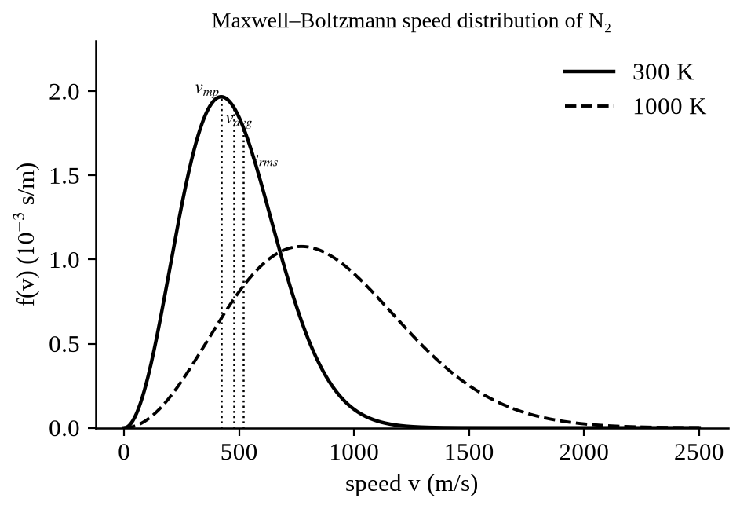
3.1.1.3 Degrees of freedom and heat capacity
Equipartition: U = (f/2) n R T, so
Cv = (f/2) R, Cp = Cv + R, γ = 1 + 2/f
| Gas | f | Cv | γ |
|---|---|---|---|
| monatomic | 3 | 3R/2 | 1.67 |
| diatomic (room T) | 5 | 5R/2 | 1.40 |
| diatomic (with vibration) | 7 | 7R/2 | 1.29 |
| polyatomic nonlinear | 6 | 3R | 1.33 |
For a mixture of n1 and n2 moles: Cv = (n1 Cv1 + n2 Cv2)/(n1 + n2). A monatomic-diatomic equal mole mixture has Cv = 2R and γ = 1.5.
Mean free path: λ = k T/(√(2) π d2 p). For d = 3.7×10−10 m, 300 K and 1 atm: λ = 67 nm.
3.1.1.4 Worked examples
Example 1
N2 (M = 0.028 kg/mol) at 300 K: vrms = √(3 × 8.31 × 300/0.028) = 517 m/s.
Example 2
H2 and O2 at the same T: vrms ratio = √(32/2) = 4.
Example 3
2 mol of a diatomic gas (f = 5) at 300 K: U = (5/2)(2)(8.31)(300) = 12.5 kJ.
Example 4: escape
vrms of H2 equals 11.2 km/s at T = M v2/(3 R) = 0.002 × 1.25×108/24.9 = 1.0×104 K, which is why light gases still escape slowly from the top of the atmosphere (only the fast tail matters).
3.1.1.5 Common pitfalls and checks
- vrms, vavg and vmp are different; know which one each problem needs.
- Use equipartition only for the temperature range where the modes are active.
- Use the kelvin scale and molar mass in kg in vrms.
Chapter Review
Key Terms
- equipartition theorem
- each quadratic degree of freedom has ½ k T
- degrees of freedom
- independent ways a molecule can store energy
- root-mean-square speed
- sqrt of mean square speed
- most probable speed
- the peak of the Maxwell-Boltzmann distribution
- mean free path
- average distance between collisions
Key Equations
| Quantity | Equation |
|---|---|
| RMS speed | vrms = √(3 k T/m) |
| Most probable | vmp = √(2 k T/m) |
| Internal energy | U = (f/2) n R T |
| Mean free path | λ = k T/(√(2) π d2 p) |
Summary
Temperature measures mean translational kinetic energy, (3/2) k T. The Maxwell-Boltzmann distribution gives vmp < vavg < vrms. Equipartition assigns ½ k T per degree of freedom and fixes Cv and γ. Combine kinetic theory with mechanics to explain escape and collisions.
Practice
Conceptual Questions
- C1. Why does the Maxwell-Boltzmann curve broaden as T rises while keeping the same area? Answer
- C2. Why is the diatomic Cv at low temperature 3R/2? Answer
- C3. Which is larger: vrms or vmp? Answer
Problems
- P1. Find vrms of N2 at 300 K. Answer
- P2. By what factor is vrms of H2 larger than that of O2 at the same T? Answer
- P3. Find the internal energy of 2 mol of a diatomic gas (f = 5) at 300 K and its γ. Answer
- P4. An equal-mole mixture of monatomic and diatomic gases: find Cv and γ. Answer
- P5. Find the mean free path of nitrogen at 300 K and 1 atm (d = 3.7×10−10 m). Answer
Challenge Problems
Chapter 3.2.1
Cyclic Thermodynamic Processes and Efficiency
Learning Objective (LO 3.2.1.A). Use P-V diagrams to find work, heat and efficiency of cyclic processes, including Carnot, Otto and refrigerator cycles.
Essential Knowledge (EK 3.2.1.A.1). Net work per cycle equals the area enclosed on the P-V diagram; efficiency is W/Qin; no engine between Th and Tc exceeds the Carnot value 1 − Tc/Th.
Skill 5.A. Extract physical constants and relationships from slopes, intercepts and areas under curves of non-linear plots using calculus.
3.2.1.1 Cycles and the first law
Over a complete cycle ΔU = 0, so Qnet = Wnet = Qh − Qc. The work is the area inside the loop (positive when traversed clockwise). Efficiency of an engine:
η = W/Qh = 1 − Qc/Qh
For a refrigerator: COP = Qc/W = Tc/(Th − Tc) (Carnot).
3.2.1.2 Carnot and Otto
Carnot cycle: two isotherms and two adiabats; Qc/Qh = Tc/Th, so
η = 1 − Tc/Th
Otto cycle (petrol engine): two adiabats and two isochores, compression ratio r:
η = 1 − 1/rγ − 1
For r = 8, γ = 1.4: 56.5%; r = 10: 60.2%. Adiabatic processes obey P Vγ = const and T Vγ − 1 = const.
Second law: no cycle converts heat entirely into work (Kelvin-Planck) and heat does not flow from cold to hot unaided (Clausius).
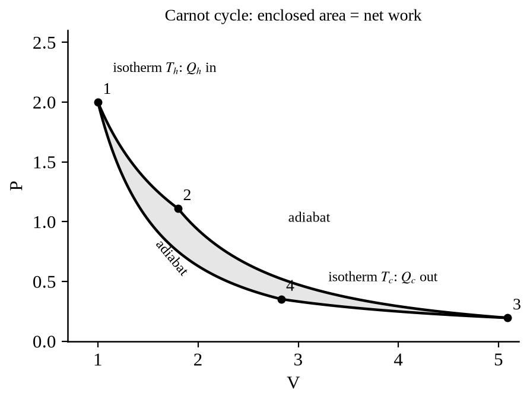
3.2.1.3 Reading cycles from graphs
For ideal-gas processes: W = P ΔV (isobaric), 0 (isochoric), n R T ln(V2/V1) (isothermal), (P1 V1 − P2 V2)/(γ − 1) (adiabatic). A rectangle between P1, P2 and V1, V2 has W = (P2 − P1)(V2 − V1); an ellipse has W = (π/4) ΔP ΔV.
Example 1
Rectangle 1×105 to 3×105 Pa and 1×10−3 to 3×10−3 m3: W = (2×105)(2×10−3) = 400 J.
Example 2
Carnot between 600 K and 300 K takes 1000 J: η = 0.5; W = 500 J; Qc = 500 J.
Example 3
Carnot refrigerator between 270 K and 300 K: COP = 9; 100 J of work removes 900 J from the cold space.
Example 4
Elliptical cycle with ΔP = 2×105 Pa, ΔV = 2×10−3 m3: W = (π/4)(400) = 314 J.
3.2.1.4 Common pitfalls and checks
- Work is the enclosed area, with sign set by the direction of traversal.
- Carnot efficiency uses kelvin temperatures.
- Do not assign heat to adiabatic steps.
Chapter Review
Key Terms
- cyclic process
- process returning the system to its initial state
- thermal efficiency
- work output divided by heat input
- Carnot cycle
- reversible cycle of two isotherms and two adiabats
- coefficient of performance
- Qc/W for a refrigerator
- compression ratio
- Vmax/Vmin in an engine cylinder
Key Equations
| Quantity | Equation |
|---|---|
| Efficiency | η = W/Qh = 1 − Qc/Qh |
| Carnot | η = 1 − Tc/Th |
| Otto | η = 1 − r1 − γ |
| Refrigerator COP | COP = Tc/(Th − Tc) |
Summary
The area of a cycle on a P-V diagram is the net work. Efficiency is limited by the Carnot value, which depends only on the reservoir temperatures. Read graphs by splitting a cycle into simple processes.
Practice
Conceptual Questions
- C1. Why can a cycle's efficiency never reach 100%? Answer
- C2. Does increasing the compression ratio of an Otto engine increase efficiency? Answer
- C3. Why must temperatures be absolute in the Carnot formula? Answer
Problems
- P1. A rectangular cycle spans P from 1×105 to 3×105 Pa and V from 1×10−3 to 3×10−3 m3. Find the work per cycle. Answer
- P2. A Carnot engine works between 600 K and 300 K and takes in 1000 J. Find η, W and Qc. Answer
- P3. Find the efficiency of an Otto cycle with r = 8 and γ = 1.4. Answer
- P4. A Carnot refrigerator runs between 270 K and 300 K. Find COP and heat removed for 100 J of work. Answer
- P5. An elliptical cycle has pressure range 2×105 Pa and volume range 2×10−3 m3. Find the work per cycle. Answer
Challenge Problems
Part 4 — Fields, Charge and Current
Invisible fields that act at a distance and drive circuits.
Unit 4: Electricity and Magnetism
OpenStax University Physics Vol 2, Ch 5-14
- Topic 4.1: Electric Charges, Fields and Gauss's Law
- Topic 4.2: Electric Potential and Capacitance
- Topic 4.3: Current Electricity and DC Circuits
- Topic 4.4: Magnetic Fields and Forces
- Topic 4.5: Electromagnetic Induction and AC Circuits
Chapter 4.1.1
Electric Fields of Continuous Charge Distributions
Learning Objective (LO 4.1.1.A). Compute electric fields of lines, arcs, rings, discs and shells by integrating over charge elements and using symmetry.
Essential Knowledge (EK 4.1.1.A.1). The field of a continuous distribution is E = ∫ k dq rhat/r2; symmetry removes components, and limiting cases (far away, infinitely large) check the result.
Skill 1.A. Apply differential and integral calculus to derive time-varying or spatially-varying physical quantities.
4.1.1.1 Method
E = ∫ k dq/r2 along rhat
1. Pick dq = λ dl, σ dA or ρ dV.
2. Draw dE at the field point and resolve into components; symmetry kills some.
3. Integrate the surviving component using one variable (usually an angle or a distance).
4. Check: far away the result must look like kQ/r2; for an infinite object it must lose its length scale.
4.1.1.2 Standard results
| Distribution | Field point | E |
|---|---|---|
| Ring (Q, R) | on axis, distance x | k Q x/(x2 + R2)3/2 |
| Disc (σ, R) | on axis, distance x | (σ/2 ε0)(1 − x/√(x2 + R2)) |
| Infinite line λ | distance r | λ/(2 π ε0 r) = 2 k λ/r |
| Infinite plane σ | any distance | σ/(2 ε0) |
| Finite rod (length 2a, charge Q) | perpendicular bisector, distance d | k Q/(d √(d2 + a2)) |
| Semicircular wire (Q, R) | center | 2 k Q/(π R2) |
| Hemispherical shell (σ) | center | σ/(4 ε0) |
The ring field is zero at the center and at ∞; its maximum is at x = R/√(2), where Emax = 0.385 k Q/R2. A negative charge displaced slightly along the axis of a positive ring feels F = −k Q q x/R3, and oscillates with ω2 = k Q q/(m R3).
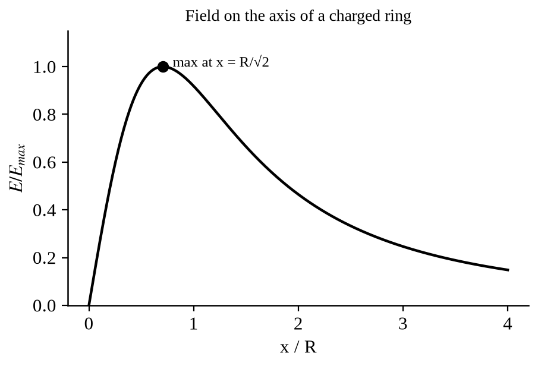
4.1.1.3 Worked examples
Example 1: ring
Q = 10 nC, R = 0.4 m, x = 0.3 m: E = (8.99×109)(1×10−8)(0.3)/(0.25)1.5 = 216 N/C. This is almost the maximum 0.385 k Q/R2 = 216 N/C.
Example 2: semicircle
Q = 3 µC on a semicircle of R = 0.1 m: Ecenter = 2 k Q/(π R2) = 1.72×106 N/C. The derivation: dEy = k λ R d(θ) sin(θ)/R2 integrated from 0 to π gives 2 k λ/R, and λ = Q/(π R).
Example 3: disc
σ = 1 µC/m2, R = x = 0.2 m: E = 5.65×104 (1 − 0.707) = 1.66×104 N/C. For x ≪ R this → σ/(2 ε0), for x ≫ R to k Q/x2.
4.1.1.4 Common pitfalls and checks
- Resolve dE into components before integrating and use symmetry to remove some.
- The field point and charge element must use the same distance in each term.
- Check far-field and infinite-size limits.
Chapter Review
Key Terms
- charge density
- charge per unit length, area or volume: λ, σ, ρ
- superposition
- total field is the vector sum of individual fields
- symmetry argument
- using geometry to cancel components
- field of a ring
- E = k Q x/(x2 + R2)3/2 on axis
- infinite plane
- field σ/(2 ε0), independent of distance
Key Equations
| Quantity | Equation |
|---|---|
| Continuous charge | E = ∫ k dq/r2 |
| Ring axis | E = k Q x/(x2 + R2)3/2 |
| Infinite line | E = λ/(2 π ε0 r) |
| Disc axis | E = (σ/2 ε0)(1 − x/√(x2 + R2)) |
Summary
Integrate k dq/r2 over the distribution with symmetry. Each result has limiting forms: point charge far away, infinite line or plane when the point is close to a large object. Use these limits to validate answers.
Practice
Conceptual Questions
- C1. Why is the field of a ring zero at its center? Answer
- C2. What does the disc formula reduce to when x is much larger than R? Answer
- C3. Why does the field of an infinite plane not depend on distance? Answer
Problems
- P1. A ring (Q = 10 nC, R = 0.4 m). Find E on the axis at x = 0.3 m. Answer
- P2. An infinite line has λ = 2 nC/m. Find E at 0.5 m. Answer
- P3. A semicircular wire (Q = 3 µC, R = 0.1 m). Find E at the center. Answer
- P4. A disc (σ = 1 µC/m2, R = 0.2 m). Find E on the axis at x = 0.2 m. Answer
- P5. A rod of length 0.6 m and charge 4 nC. Find E on its perpendicular bisector at 0.4 m. Answer
Challenge Problems
Chapter 4.1.2
Gauss's Law for Highly Symmetric Distributions
Learning Objective (LO 4.1.2.A). Apply Gauss's law to spherical, cylindrical and planar charge distributions, including non-uniform densities, conductors and cavities.
Essential Knowledge (EK 4.1.2.A.1). The flux of E through any closed surface equals the enclosed charge divided by ε0; for symmetric distributions E can be pulled out of the integral.
Skill 1.B. Utilize vector algebra (cross, dot and triple products) in 2D and 3D coordinate systems.
4.1.2.1 Gauss's law
∮ E·dA = Qenc/ε0
It is always true; it is only useful for finding E when symmetry makes E constant (and perpendicular) over the Gaussian surface or parallel to it. Choose a surface through the field point that matches the symmetry: sphere, coaxial cylinder or pillbox.
4.1.2.2 Standard results
| Case | E |
|---|---|
| Solid sphere, uniform ρ, inside (r < R) | k Q r/R3 |
| Any sphere, outside | k Q/r2 |
| Hollow charged shell | 0 inside |
| Infinite line λ | λ/(2 π ε0 r) |
| Infinite sheet σ | σ/(2 ε0) |
| Conductor surface | σ/ε0 (perpendicular) |
| Parallel plates ±σ | σ/ε0 between, 0 outside |
For a sphere with ρ = ρ0 r/R: Qenc(r) = π ρ0 r4/R, so E = ρ0 r2/(4 ε0 R).
Cavity theorem: a uniformly charged sphere (ρ) with a spherical cavity whose center is displaced by vector a has a uniform field inside the cavity, E = ρ a/(3 ε0), by superposition of +ρ and −ρ spheres.
Conductor in electrostatics: E = 0 inside, excess charge sits on the surface. A point charge +q at the center of a neutral conducting shell (a, b) induces −q on the inner surface and +q on the outer; outside E = k q/r2.
4.1.2.3 Worked examples
Example 1
Q = 8 nC uniformly in a sphere of R = 0.1 m: E(0.05) = k Q r/R3 = 3.6×103 N/C; E(0.2) = k Q/r2 = 1.8×103 N/C.
Example 2: coax
Inner line λ = 5 nC/m inside a conducting shell carrying −λ per length: E(2 cm) = 2 k λ/r = 4.5×103 N/C; E = 0 outside.
Example 3: cavity
ρ = 1 µC/m3, a = 0.05 m: E = ρ a/(3 ε0) = 1.88×103 N/C, uniform and directed along a.
4.1.2.4 Common pitfalls and checks
- Gauss's law holds always but gives E easily only with symmetry.
- Use the enclosed charge, not the total charge.
- E from a conductor's surface charge is σ/ε0, while an isolated sheet gives σ/(2 ε0).
Chapter Review
Key Terms
- Gaussian surface
- imaginary closed surface chosen to exploit symmetry
- electric flux
- surface ∫ E·dA
- enclosed charge
- net charge inside a surface
- electrostatic shielding
- E = 0 inside a conducting cavity without charge
- superposition of cavity
- treating a cavity as an equal negative density
Key Equations
| Quantity | Equation |
|---|---|
| Gauss's law | ∮ E·dA = Qenc/ε0 |
| Uniform sphere (inside) | E = k Q r/R3 |
| Infinite sheet | E = σ/(2 ε0) |
| Cavity | E = ρ a/(3 ε0) |
Summary
Gauss's law relates flux to enclosed charge. Use it with spheres, cylinders and pillboxes. For a non-uniform density integrate to find Qenc(r). Conductors and cavities follow from E = 0 inside the metal and superposition.
Practice
Conceptual Questions
- C1. Does Gauss's law hold when the field is not symmetric? Answer
- C2. Why does E = 0 inside a hollow charged conducting shell? Answer
- C3. If a charge is moved inside a closed surface, does the flux change? Answer
Problems
- P1. Q = 8 nC is uniform in a sphere of R = 0.1 m. Find E at 0.05 m and 0.2 m. Answer
- P2. An infinite sheet has σ = 2 µC/m2. Find E, and between two such oppositely charged sheets. Answer
- P3. A line charge 5 nC/m runs inside a conducting cylinder with −5 nC/m. Find E at 2 cm and at a point outside the cylinder. Answer
- P4. ρ = ρ0 r/R in a sphere with ρ0 = 1 µC/m3, R = 0.1 m. Find E at r = R. Answer
- P5. ρ = 1 µC/m3 in a sphere with a cavity displaced by 0.05 m. Find E in the cavity. Answer
Challenge Problems
Chapter 4.2.1
Electrostatic Potential Energy of Discontinuous Systems
Learning Objective (LO 4.2.1.A). Compute the potential energy of systems of discrete charges and continuous distributions, and use dipole energy and torque.
Essential Knowledge (EK 4.2.1.A.1). The potential energy of a charge system is the work needed to assemble it: U = sum over pairs of k qi qj/rij; a dipole has U = −p·E and torque p × E.
Skill 1.B. Utilize vector algebra (cross, dot and triple products) in 2D and 3D coordinate systems.
4.2.1.1 Potential and potential energy
V = k q/r for a point charge, and V is a scalar (add by simple sums). The potential energy of two charges is U = k q1 q2/r. For a collection:
U = ½ sum of qi Vi = sum over distinct pairs of k qi qj/rij
Each pair is counted once. Conservation of energy: ½ m v2 + q V is constant.
4.2.1.2 Assembling systems
- Three equal charges at the corners of a triangle: U = 3 k q2/a.
- Four equal charges at the corners of a square: U = (k q2/a)(4 + √(2)).
- Alternating +q, −q on a square: U = (k q2/a)(−4 + √(2)).
- Uniformly charged shell: U = k Q2/(2R). Uniformly charged solid sphere: U = 3 k Q2/(5 R). The field energy density is ½ ε0 E2.
Dipole in a field: U = −p·E, torque τ = p × E, force zero in a uniform field.
4.2.1.3 Worked examples
Example 1
Three 1 µC charges on a triangle of side 0.1 m: U = 3(8.99×109)(1×10−12)/0.1 = 0.270 J.
Example 2
Four 1 µC charges on a square of side 0.1 m: U = 0.0899 (4 + 1.414) = 0.487 J.
Example 3: release
Two free 0.01 kg particles with charges 2 and 1 µC released from 0.1 m: U = 0.180 J, shared equally by momentum conservation: each speed 4.24 m/s.
Example 4: dipole
p = (1, 2, 0)e-9 C m in E = (3, 0, 4)e3 V/m: U = −3×10−6 J and τ = p × E = (8, −4, −6)e-6 N m.
Example 5: closest approach
A 5 MeV α (q = 2e) directed at a gold nucleus (79 e): K = k (2e)(79e)/r gives r = 1.44 × 158/5 = 45.5 fm.
4.2.1.4 Common pitfalls and checks
- Count each pair once in the energy sum.
- Potential is a scalar: add numbers, not vectors.
- Do not confuse the energy of assembling a charge system with the energy required to separate it to ∞ (they differ by sign).
Chapter Review
Key Terms
- electrostatic potential energy
- work to assemble a charge system
- electric potential
- potential energy per unit charge
- equipotential
- surface of constant potential
- electric dipole
- pair of equal and opposite charges, moment p = q d
- self-energy
- energy needed to assemble a distribution
Key Equations
| Quantity | Equation |
|---|---|
| Pair energy | U = k q1 q2/r |
| System | U = sum over pairs of k qi qj/rij |
| Charged shell | U = k Q2/(2R) |
| Dipole | U = −p·E; τ = p × E |
Summary
Potential energy of a charge system is the sum over pairs. Use conservation of energy for motion; use vector algebra for dipoles. Shells and spheres have self-energies of order k Q2/R.
Practice
Conceptual Questions
- C1. Why is the factor ½ needed in the sum of q V over all charges? Answer
- C2. Is the force on a dipole in a uniform field zero? Is the torque? Answer
- C3. Can the potential energy of a system be negative? Answer
Problems
- P1. Find the energy of three 1 µC charges at the corners of a 0.1 m triangle. Answer
- P2. Find the energy of four 1 µC charges on a 0.1 m square. Answer
- P3. Find the energy to assemble a uniformly charged solid sphere (1 µC, R = 0.1 m) and a shell of the same Q and R. Answer
- P4. Charges of 2 and 1 µC (0.01 kg each) are released from 0.1 m. Find their final speeds. Answer
- P5. p = (1, 2, 0)e-9 C m in E = (3, 0, 4)e3 V/m. Find U and τ. Answer
Challenge Problems
Chapter 4.2.2
Dielectric Insertion and Bound Charge Configurations
Learning Objective (LO 4.2.2.A). Analyze capacitors with dielectrics under constant voltage and constant charge, including bound charge, energy and force.
Essential Knowledge (EK 4.2.2.A.1). Inserting a dielectric of constant κ multiplies C by κ; at fixed V the charge and energy rise, at fixed Q the voltage and energy fall; the field in the dielectric is E0/κ.
Skill 2.B. Apply conservation laws (energy, momentum, angular momentum, charge) simultaneously to evaluate system transformations.
4.2.2.1 Dielectrics and bound charge
A dielectric polarizes in a field and produces bound surface charge σb = σ (1 − 1/κ), reducing the field:
E = σ/(κ ε0), C = κ ε0 A/d
A slab of thickness t in a gap d: C = ε0 A/(d − t + t/κ), independent of the slab's position.
4.2.2.2 Two cases
Battery connected (V constant): Q rises by κ; U = ½ C V2 rises by κ; the battery does Q V of work, half stored and half done on the slab.
Disconnected (Q constant): V falls by κ; U = Q2/(2C) falls by κ; the field does positive work on the slab, pulling it in.
Force on a partly inserted slab: F = ½ V2 dC/dx = ½ V2 ε0 b (κ − 1)/d at constant V.
4.2.2.3 Worked examples
Example 1
A = 0.02 m2, d = 1 mm: C0 = 177 pF; with κ = 4: 708 pF.
Example 2: V = 100 V
Q from 17.7 nC to 70.8 nC; U from 0.885 µJ to 3.54 µJ. Battery work ΔQ V = 5.31 µJ = ΔU (2.655) + work on the slab (2.655).
Example 3: Q constant
Q = 17.7 nC, κ = 4: V = 25 V; U falls from 0.885 µJ → 0.221 µJ.
Example 4: bound charge
σ = 8.85×10−7 C/m2, κ = 4: σb = 6.64×10−7 C/m2; E inside = 2.5×104 V/m.
Example 5: sharing charge
2 µF at 100 V is joined to an uncharged 3 µF: V = 40 V. Energy falls from 10 mJ to 4 mJ; 6 mJ is dissipated.
4.2.2.4 Common pitfalls and checks
- Decide first whether V or Q is held constant.
- The battery's work is not equal to the energy change when a dielectric moves in.
- The field in the dielectric is E0/κ, but the bound charge is not zero.
Chapter Review
Key Terms
- dielectric constant
- κ, the factor by which a dielectric raises C
- bound charge
- charge induced on the surfaces of a polarized dielectric
- polarization
- alignment of dipoles in an applied field
- capacitance
- C = Q/V
- stored energy
- U = ½ C V2
Key Equations
| Quantity | Equation |
|---|---|
| Capacitance with dielectric | C = κ ε0 A/d |
| Energy | U = ½ C V2 = Q2/(2C) |
| Bound charge | σb = σ (1 − 1/κ) |
| Partial slab | C = ε0 A/(d − t + t/κ) |
Summary
A dielectric weakens the field by κ. Decide first whether V or Q is held fixed: with a battery Q and U grow; when isolated V and U fall. Charge and energy conservation together fix all other quantities.
Practice
Conceptual Questions
- C1. Why does the voltage fall when a dielectric is inserted in an isolated capacitor? Answer
- C2. Is the force on the slab inward at constant Q? Answer
- C3. Where does the energy lost at constant Q go? Answer
Problems
- P1. A = 0.02 m2, d = 1 mm. Find C0 and C with κ = 4. Answer
- P2. The capacitor is held at 100 V and κ = 4 is inserted. Find the changes in Q and U and the battery work. Answer
- P3. After charging to 100 V the capacitor is disconnected and κ = 4 inserted. Find V and the change in U. Answer
- P4. Free charge density 8.85×10−7 C/m2, κ = 4. Find σb and the field in the dielectric. Answer
- P5. A slab (κ = 4) is part-inserted between plates of width 0.1 m and gap 1 mm at 100 V. Find the force. Answer
Challenge Problems
Chapter 4.3.1
Microscopic Models of Conduction / Drift Velocity
Learning Objective (LO 4.3.1.A). Relate drift velocity, current density, conductivity and resistivity from a microscopic model and assess extreme cases.
Essential Knowledge (EK 4.3.1.A.1). In the Drude model the drift velocity is vd = e E τ/m, current is I = n A e vd, and conductivity is σ = n e2 τ/m, so Ohm's law follows.
Skill 4.B. Analyze extreme asymptotic behaviors to validate physical models and eliminate unphysical solutions.
4.3.1.1 Drift and current
I = n A e vd, J = n e vd = σ E
Electrons collide every τ seconds on average and gain vd = (e E/m) τ between collisions. The mobility is μ = e τ/m, so vd = μ E.
σ = n e2 τ/m, ρ = 1/σ, R = ρ L/A
For copper n = 8.5×1028 per m3. 1 A in a 1 mm2 wire: vd = 1/(8.5×1028 x 1×10−6 x 1.6×10−19) = 7.4×10−5 m/s (0.074 mm/s), yet the lamp lights instantly: the field propagates at nearly c.
4.3.1.2 Limiting-case checks (skill 4.B)
- τ → 0 (strong scattering): σ → 0 and the material is an insulator.
- No collisions: vd increases linearly in time, which is a superconductor-like acceleration, not Ohmic.
- Doubling the wire's length at constant volume: area halves, R x4.
- Temperature: R = R0 (1 + α ΔT); for copper α = 0.0039 per K, so 100 °C against 20 °C gives 1.31.
- Different cross-sections carrying equal current: vd and E scale as 1/A.
4.3.1.3 Worked examples
Example 1
Copper σ = 5.96×107 S/m: τ = σ m/(n e2) = 2.5×10−14 s; μ = 4.4×10−3 m2/(V s).
Example 2
A 10 m wire of area 1 mm2 and ρ = 1.68×10−8 Ω m: R = 0.168 Ω; stretched to 20 m (same volume): 0.672 Ω.
Example 3
Hall voltage across a strip of thickness t in field B: VH = I B/(n t e). For copper (t = 0.1 mm, I = 10 A, B = 1 T): 7.4 µV, tiny because n is huge.
4.3.1.4 Common pitfalls and checks
- Drift speed is tiny; the signal speed is not.
- J = σ E is a local law; I = J A applies to the whole wire.
- Resistance depends on shape; resistivity does not.
Chapter Review
Key Terms
- drift velocity
- average velocity of charge carriers due to a field
- current density
- current per unit area, J
- conductivity
- σ = n e2 τ/m
- relaxation time
- mean time between collisions, τ
- mobility
- drift velocity per unit field
Key Equations
| Quantity | Equation |
|---|---|
| Current | I = n A e vd |
| Drift velocity | vd = e E τ/m |
| Conductivity | σ = n e2 τ/m |
| Resistance | R = ρ L/A |
Summary
Current is carrier density times charge times drift velocity times area. A microscopic collision model gives Ohm's law, with conductivity set by n and τ. Drift speeds are tiny; the field travels at near the speed of light.
Practice
Conceptual Questions
- C1. Why does a lamp light immediately although drift speeds are tiny? Answer
- C2. What happens to the drift velocity if the wire's area is halved at fixed current? Answer
- C3. Why does the resistance of a metal rise with temperature? Answer
Problems
- P1. 1 A flows in a copper wire of 1 mm2 (n = 8.5×1028). Find vd and the time for an electron to travel 1 m. Answer
- P2. Copper has σ = 5.96×107 S/m. Find τ. Answer
- P3. Find R of a 10 m copper wire with area 1 mm2 (ρ = 1.68×10−8). What if it is stretched to 20 m at constant volume? Answer
- P4. Copper has α = 0.0039 per K. By what factor does R change from 20 °C to 100 °C? Answer
- P5. Two wires of one metal with areas 1 and 2 mm2 carry the same current. Compare vd and E. Answer
Challenge Problems
Chapter 4.3.2
Multi-Loop Networks and RC Circuit Transients
Learning Objective (LO 4.3.2.A). Solve multi-loop DC networks with Kirchhoff's rules and analyze RC charging and discharging by solving the first-order differential equation.
Essential Knowledge (EK 4.3.2.A.1). Kirchhoff's junction rule conserves charge and the loop rule conserves energy; an RC circuit obeys R dq/dt + q/C = E with time constant τ = R C.
Skill 1.C. Set up and solve first-order and second-order differential equations for physical systems (RC/LR circuits, damped oscillations).
4.3.2.1 Kirchhoff's rules
Junction rule: the sum of currents into a node is zero. Loop rule: the sum of potential changes around a closed loop is zero (battery against its direction: -E; resistor along current: -I R).
Strategy: assign a current to each branch, label signs, write N-1 junction equations and enough loop equations, solve; a negative current means the opposite direction. Alternatively use one node voltage V: Ik = (Ek − V)/Rk and sum to zero.
4.3.2.2 RC transients
Charging through R from E:
R dq/dt + q/C = E so q = C E (1 − exp(−t/τ)), I = (E/R) exp(−t/τ), τ = R C
Discharging: q = q0 exp(−t/τ). With initial charge q0: q = C E − (C E − q0) exp(−t/τ). Half-life t = τ ln 2; 90% in τ ln 10 = 2.3 τ.
Energy: the battery supplies C E2; ½ C E2 is stored and the other half is dissipated, whatever R is. For a capacitor that sees a network use the Thevenin equivalent: Eth (open circuit) and Rth, then τ = Rth C.
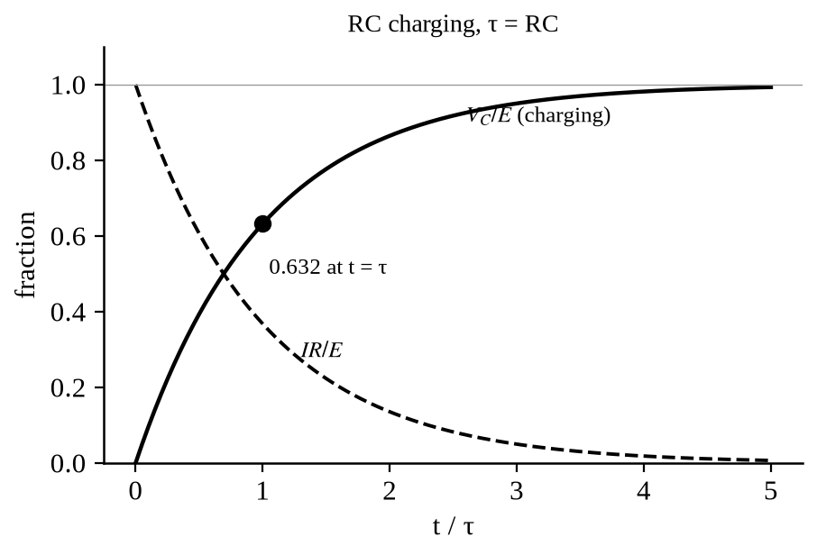
4.3.2.3 Worked examples
Example 1: two batteries
Branches share two nodes: (12 V, 2 Ω), (6 V, 1 Ω) with both batteries driving upward, and a 4 Ω load. With node voltage V: (12 − V)/2 + (6 − V)/1 = V/4 gives V = 6.86 V. Currents 2.57 A, −0.86 A (battery 2 is being charged) and 1.71 A.
Example 2: RC
R = 10 kΩ, C = 100 µF, E = 12 V: τ = 1 s. At t = 1 s, VC = 7.58 V and I = 0.44 mA; 90% at 2.3 s.
Example 3: Thevenin
E = 10 V with R1 = R2 = 1 kΩ, C = 1 µF across R2: final VC = 5 V; Rth = 500 Ω; τ = 0.5 ms.
Example 4: log plot
ln I against t has slope −1/τ. A current falling from 2 mA to 0.74 mA in 1 s gives τ = 1.0 s.
4.3.2.4 Common pitfalls and checks
- Assign current directions first; a negative answer only flips the direction.
- The capacitor is a short at t = 0 and an open circuit at t = ∞.
- The time constant uses the Thevenin resistance seen by the capacitor.
Chapter Review
Key Terms
- Kirchhoff's junction rule
- charge is conserved at a node
- Kirchhoff's loop rule
- energy is conserved around a loop
- time constant
- τ = R C
- Thevenin equivalent
- a source Eth with series resistance Rth
- transient
- time-dependent approach to a steady state
Key Equations
| Quantity | Equation |
|---|---|
| Charging | q = C E (1 − exp(−t/RC)) |
| Discharging | q = q0 exp(−t/RC) |
| Time constant | τ = R C |
| Energy | U = ½ C V2 |
Summary
Kirchhoff's two rules reduce any network to linear equations. A capacitor in a resistive circuit gives a first-order differential equation with solution of exponential form; the time constant is Rth C and half the battery energy is always lost in the resistor.
Practice
Conceptual Questions
- C1. Why does the capacitor current start at E/R? Answer
- C2. Does the resistance change the total energy dissipated while charging? Answer
- C3. What does a straight line on a ln I against t plot tell you? Answer
Problems
- P1. Two batteries (12 V, 2 Ω) and (6 V, 1 Ω) drive a 4 Ω load. Find the three currents. Answer
- P2. R = 10 kΩ, C = 100 µF, E = 12 V. Find VC and I at t = 1 s, and the time to reach 90% charge. Answer
- P3. A 100 µF capacitor at 12 V discharges through 10 kΩ. When is its charge halved and what energy is left then? Answer
- P4. A 10 V source feeds R1 = 1 kΩ, then R2 = 1 kΩ in parallel with C = 1 µF. Find VC(inf) and τ. Answer
- P5. A current falls from 2 mA to 0.74 mA in 1 s in an RC discharge. Find τ. Answer
Challenge Problems
Chapter 4.4.1
Lorentz Force Trajectories in Non-Uniform Fields
Learning Objective (LO 4.4.1.A). Describe the motion of charges under the Lorentz force in uniform, crossed and slowly varying magnetic fields.
Essential Knowledge (EK 4.4.1.A.1). The magnetic force q v × B does no work and gives circular motion of radius m v/(q B); a velocity component along B gives a helix; E and B crossed give a drift E/B.
Skill 2.A. Integrate principles from two or more distinct physics domains to solve single complex problems.
4.4.1.1 Circles and helices
F = q (E + v × B)
In a uniform B only: r = m vperp/(q B), T = 2 π m/(q B), f = q B/(2 π m). The period does not depend on speed. The parallel component vpar is unaffected, so the path is a helix with pitch p = vpar T. The speed (and kinetic energy) is constant.
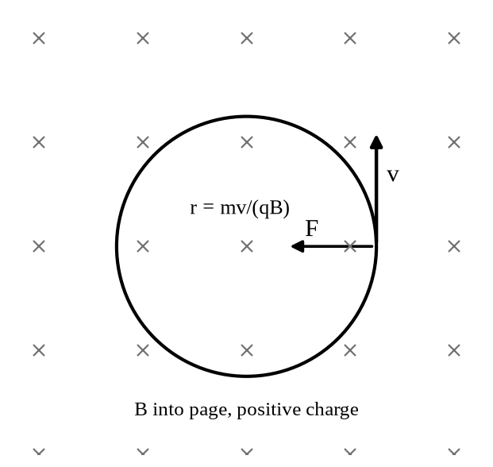
4.4.1.2 Crossed fields and devices
Velocity selector: q E = q v B so v = E/B. Drift: with E perpendicular to B a particle drifts at vd = E/B (E × B direction) independent of charge and mass; starting from rest it follows a cycloid whose height is 2 m E/(q B2). Cyclotron: resonance at f = q B/(2 π m); the maximum energy is K = q2 B2 R2/(2 m). Mass spectrometer: r = m v/(q B) after selection.
4.4.1.3 Slowly varying fields
In a field that varies slowly in space the quantity vperp2/B (magnetic moment) is constant. Moving toward a stronger field, vperp grows and vpar shrinks: a particle with pitch angle α at B1 is reflected where B = B1/sin2(α). Grad-B drift: v = (m vperp2/(2 q B)) (∇B)/B perpendicular to both B and ∇B.
Example 1
Proton at 2×106 m/s in 0.5 T: r = 4.18 cm, T = 131 ns.
Example 2: helix
Electron at 3×106 m/s, 30° to B = 2 mT: vperp = 1.5×106, r = 4.27 mm, T = 17.9 ns, pitch = 4.65 cm.
Example 3: cyclotron
B = 1.5 T, R = 0.5 m: f = 22.9 MHz, Kmax = 26.9 MeV.
Example 4: mirror
B1 = 0.1 T, α = 60°: reflected at B = 0.1/0.75 = 0.133 T.
4.4.1.4 Common pitfalls and checks
- Magnetic force does no work: speed is constant, kinetic energy is constant.
- Find the radius from m v/(q B) using the perpendicular component only.
- Sign of charge decides the direction of rotation and of drift in a Hall measurement.
Chapter Review
Key Terms
- Lorentz force
- q (E + v × B)
- cyclotron frequency
- f = q B/(2 π m)
- helical motion
- circular motion plus uniform drift along B
- E cross B drift
- drift velocity E/B in crossed fields
- magnetic mirror
- reflection of charges in a converging field
Key Equations
| Quantity | Equation |
|---|---|
| Radius | r = m v/(q B) |
| Period | T = 2 π m/(q B) |
| Velocity selector | v = E/B |
| Pitch | p = vpar T |
Summary
A magnetic force changes direction only. Motion is circular about field lines with a speed-independent period. Crossed E and B give drifts; slowly converging fields reflect particles. Combine with energy and momentum to analyze devices.
Practice
Conceptual Questions
- C1. Why does a magnetic force do no work? Answer
- C2. Why is the cyclotron frequency independent of the speed? Answer
- C3. Does the E cross B drift direction depend on the sign of the charge? Answer
Problems
- P1. A proton moves at 2×106 m/s in 0.5 T perpendicular to the field. Find r and T. Answer
- P2. An electron at 3×106 m/s makes 30° with B = 2 mT. Find r, T and the pitch. Answer
- P3. A velocity selector has E = 1×104 V/m and B = 0.01 T. Find the speed it passes. Answer
- P4. Protons in a cyclotron (B = 1.5 T, R = 0.5 m). Find f and Kmax. Answer
- P5. A particle with α = 60° at B1 = 0.1 T moves toward higher B. Where is it reflected? Answer
Challenge Problems
Chapter 4.4.2
Biot-Savart Law for Complex Wire Frameworks
Learning Objective (LO 4.4.2.A). Apply the Biot-Savart law with vector cross products to find the magnetic field of wires, arcs, loops and solenoids, using superposition for complex frameworks.
Essential Knowledge (EK 4.4.2.A.1). dB = (μ0/4 π) I dl × rhat/r2; superposition of straight segments and arcs gives the field of any planar wire framework.
Skill 1.B. Utilize vector algebra (cross, dot and triple products) in 2D and 3D coordinate systems.
4.4.2.1 Biot-Savart law
dB = (μ0/4π) I dl × rhat/r2, μ0/4π = 1×10−7 T m/A
dl × r gives the direction (right-hand rule). Wire elements along the line of sight contribute zero (so radial segments give no field at a center).
4.4.2.2 Building blocks
| Source | Point | B |
|---|---|---|
| Straight segment, subtending angles θ1, θ2 | distance d | (μ0 I/4 π d)(sin θ1 + sin θ2) |
| Infinite wire | distance d | μ0 I/(2 π d) |
| Circular loop | center | μ0 I/(2R) |
| Arc of angle φ | center | μ0 I φ/(4 π R) |
| Loop on axis | distance x | μ0 I R2/(2 (R2 + x2)3/2) |
| Long solenoid (n turns/m) | inside | μ0 n I |
| Solenoid end | on axis | μ0 n I/2 |
Square loop of side a at its center: B = 2 √(2) μ0 I/(π a). Helmholtz pair (separation R): B = (⅘)3/2 μ0 N I/R at the midpoint. Parallel wires: force per length μ0 I1 I2/(2 π d), attractive for currents in the same direction.
4.4.2.3 Worked examples
Example 1
Loop R = 0.1 m, I = 5 A: B = 3.14×10−5 T. Semicircular arc with radial leads: μ0 I/(4R) = 1.57×10−5 T.
Example 2: square
a = 0.2 m, I = 4 A: B = 2.26×10−5 T at the center.
Example 3: vector form
A wire from (0, 0, 0) to (0.4, 0, 0) carries 2 A along +x. At P (0.2, 0.1, 0): d = 0.1 m, sin(θ) = 0.2/√(0.05) = 0.894 each side, so B = 1×10−7 (2/0.1)(1.789) = 3.58×10−6 T along +z (x cross y = z).
Example 4: parallel wires
10 A and 10 A, 0.1 m apart: B = 2×10−5 T, F/L = 2×10−4 N/m.
4.4.2.4 Common pitfalls and checks
- Take dl × rhat carefully; wire elements along the line of sight give zero.
- Add fields as vectors, not magnitudes.
- Segments need the correct angles θ1 and θ2 for the finite wire formula.
Chapter Review
Key Terms
- Biot-Savart law
- law giving the field of a current element
- current element
- I dl
- permeability of free space
- μ0 = 4 π e-7 T m/A
- solenoid
- coil giving nearly uniform field inside
- Helmholtz coil
- pair of coaxial coils giving uniform field
Key Equations
| Quantity | Equation |
|---|---|
| Biot-Savart | dB = (μ0/4π) I dl × rhat/r2 |
| Infinite wire | B = μ0 I/(2 π d) |
| Loop center | B = μ0 I/(2 R) |
| Solenoid | B = μ0 n I |
Summary
Cut a complex wire into straight segments and arcs, apply the Biot-Savart law (or its integrated forms), and add the fields as vectors. Segments pointing at the field point contribute nothing; check each direction with a cross product.
Practice
Conceptual Questions
- C1. Why do radial wires give no field at the center of an arc? Answer
- C2. Why is the field at the end of a long solenoid half that inside? Answer
- C3. Do two parallel wires with currents in the same direction attract or repel? Answer
Problems
- P1. A loop (R = 0.1 m, I = 5 A). Find B at its center. Answer
- P2. A semicircular arc (R = 0.1 m, I = 5 A) with radial leads. Find B at the center. Answer
- P3. A square loop (a = 0.2 m, I = 4 A). Find B at its center. Answer
- P4. Two coaxial coils of radius R = 0.1 m with I = 2 A and one turn each, separated by R. Find B at the midpoint. Answer
- P5. Two parallel wires carry 10 A each, 0.1 m apart. Find B from one at the other and the force per metre. Answer
Challenge Problems
Chapter 4.5.1
Motional EMF with Mechanical Dynamics
Learning Objective (LO 4.5.1.A). Combine Faraday's law with Newton's laws to describe rods, loops and discs moving in magnetic fields, including terminal velocity and energy balance.
Essential Knowledge (EK 4.5.1.A.1). A conductor of length L moving at v perpendicular to B has emf = B L v; the induced current feels a retarding force B2 L2 v/R, and the dissipated power equals the mechanical power supplied.
Skill 2.A. Integrate principles from two or more distinct physics domains to solve single complex problems.
4.5.1.1 Motional emf
emf = B L v (rod, v and L perpendicular to B)
In general emf = −d(flux)/dt. The current I = B L v/R gives the force F = I L B = B2 L2 v/R opposing the motion (Lenz's law). A rotating rod: emf = ½ B ω L2; a rotating disc (Faraday): ½ B ω R2.
4.5.1.2 Dynamics
Rod on rails, no driving force: m dv/dt = −(B2 L2/R) v gives v = v0 exp(−t/τ), τ = m R/(B2 L2). The stopping distance is m v0 R/(B2 L2). All of ½ m v02 appears as heat in R.
Falling rod on vertical rails: m g − B2 L2 v/R = m dv/dt gives
v = vt (1 − exp(−t/τ)), vt = m g R/(B2 L2)
At vt the power m g vt equals I2 R.
Rod joined to a capacitor (no resistor): a constant force F gives constant acceleration a = F/(m + B2 L2 C).
4.5.1.3 Worked examples
Example 1
L = 0.5 m, B = 0.4 T, v = 3 m/s, R = 2 Ω: emf = 0.6 V, I = 0.3 A, F = 0.06 N, P = 0.18 W.
Example 2
m = 0.1 kg with v0 = 3 m/s: τ = 5 s; distance = 15 m; heat = 0.45 J.
Example 3
m = 0.05 kg, L = 0.2 m, B = 0.5 T, R = 0.1 Ω, g = 10: vt = 5 m/s, τ = 0.5 s.
Example 4: incline
m = 0.2 kg, L = 0.5 m, B = 1 T, R = 1 Ω, θ = 30°, g = 10: vt = m g R sin(θ)/(B2 L2) = 4 m/s; I = 2 A; P = 4 W = m g sin(θ) vt.
Example 5: loop leaving a field
Side 0.1 m, R = 0.5 Ω, pulled at 2 m/s out of B = 0.5 T: emf 0.1 V, I = 0.2 A, F = 0.01 N, P = 0.02 W.
4.5.1.4 Common pitfalls and checks
- The emf is B L v only if v, L and B are mutually perpendicular.
- Lenz's law fixes the sign: the induced force opposes the motion.
- Check energy: mechanical power equals I2 R.
Chapter Review
Key Terms
- motional emf
- emf induced by motion through a magnetic field
- Lenz's law
- induced current opposes the change in flux
- eddy current
- induced current in a bulk conductor
- terminal velocity
- constant speed where the magnetic drag balances the driving force
- back force
- magnetic force on the induced current opposing motion
Key Equations
| Quantity | Equation |
|---|---|
| Motional emf | emf = B L v |
| Magnetic drag | F = B2 L2 v/R |
| Terminal speed | vt = m g R/(B2 L2) |
| Rotating rod | emf = ½ B ω L2 |
Summary
The motional emf drives a current whose force opposes the motion. Combine with Newton's second law to get exponential approach to terminal speed or exponential decay. Always check energy: mechanical power equals electrical power.
Practice
Conceptual Questions
- C1. Why does a bar magnet fall slowly through a copper tube? Answer
- C2. Where does the kinetic energy of the sliding rod go? Answer
- C3. What happens to the rod's acceleration at terminal speed? Answer
Problems
- P1. A 0.5 m rod moves at 3 m/s in 0.4 T on rails with R = 2 Ω. Find emf, I, force and power. Answer
- P2. A 0.1 kg rod with v0 = 3 m/s on the same rails (no applied force). Find τ, the distance and the heat produced. Answer
- P3. A 0.05 kg, 0.2 m rod falls on vertical rails (B = 0.5 T, R = 0.1 Ω, g = 10). Find vt and τ. Answer
- P4. A 1 m rod rotates at 20 rad/s about one end in B = 0.1 T. Find the emf. Answer
- P5. A 0.1 m square loop (0.5 Ω) is pulled at 2 m/s out of B = 0.5 T. Find I, F and P. Answer
Challenge Problems
Chapter 4.5.2
Self/Mutual Inductance and LC/LR Circuits
Learning Objective (LO 4.5.2.A). Solve LR and LC(R) circuits using the inductor law v = L di/dt, energy conservation and first- and second-order differential equations, including mutual inductance.
Essential Knowledge (EK 4.5.2.A.1). An inductor stores ½ L I2; LR circuits have τ = L/R; an LC circuit oscillates at ω = 1/√(L C); mutual inductance gives emf2 = -M dI1/dt.
Skill 1.C. Set up and solve first-order and second-order differential equations for physical systems (RC/LR circuits, damped oscillations).
4.5.2.1 Inductors
emf = -L dI/dt, U = ½ L I2, L = μ0 n2 A l (solenoid)
Mutual inductance: emf2 = -M dI1/dt, with M = k √(L1 L2) and 0 ≤ k ≤ 1. Coils in series: L = L1 + L2 ± 2 M.
4.5.2.2 LR circuits
Growth: E − I R − L dI/dt = 0 gives
I = (E/R)(1 − exp(−t/τ)), τ = L/R
Initially dI/dt = E/L and the inductor acts as an open circuit; finally it acts as a short. Decay: I = I0 exp(−t/τ); all of ½ L I02 ends as heat in R.
4.5.2.3 LC and LCR circuits
LC: L d2q/dt2 + q/C = 0 gives q = Q0 cos(ω t), ω = 1/√(L C), with energy swapping between ½ q2/C and ½ L I2; Imax = Q0 ω.
With resistance: L d2q/dt2 + R dq/dt + q/C = 0, ω′ = √(1/(L C) − (R/2L)2), critical Rc = 2 √(L/C), Q = ω0 L/R.
Example 1
n = 2000 per m, A = 1×10−3 m2, l = 0.5 m: L = 2.51 mH; at 2 A, U = 5.03 mJ.
Example 2
L = 0.2 H, R = 10 Ω, E = 20 V: τ = 20 ms, Ifinal = 2 A, I(τ) = 1.26 A, initial dI/dt = 100 A/s, half value at 13.9 ms.
Example 3
L = 10 mH, C = 100 µF: ω = 1000 rad/s, f = 159 Hz; Q0 = 1 mC gives Imax = 1 A and energy 5 mJ.
Example 4
Equal energy in L and C occurs when q = Q0/√(2): ω t = π/4, t = 0.785 ms; I = 0.707 A.
4.5.2.4 Common pitfalls and checks
- An inductor opposes changes in current, not the current itself.
- At t = 0 the inductor is an open circuit; at t = ∞ it is a short.
- LC angular frequency uses 1/√(L C), not 1/(L C).
Chapter Review
Key Terms
- self-inductance
- ratio of flux linkage to current, L
- mutual inductance
- flux linkage in one coil due to current in another, M
- LR time constant
- τ = L/R
- LC oscillation
- exchange of energy between capacitor and inductor
- quality factor
- Q = ω0 L/R
Key Equations
| Quantity | Equation |
|---|---|
| Inductor emf | emf = -L dI/dt |
| LR growth | I = (E/R)(1 − exp(−R t/L)) |
| LC frequency | ω = 1/√(L C) |
| Inductor energy | U = ½ L I2 |
Summary
Inductors oppose changes in current. LR circuits relax with τ = L/R; LC circuits oscillate at 1/√(LC) like a spring-mass system; resistance adds damping with critical value 2 √(L/C). Treat each as the electrical twin of a mechanical system.
Practice
Conceptual Questions
- C1. Why can the current through an inductor not change instantly? Answer
- C2. How does an LC circuit resemble a spring and mass? Answer
- C3. What does the inductor do right after the switch closes in an LR circuit? Answer
Problems
- P1. Find L of a solenoid with n = 2000 per m, A = 1×10−3 m2, l = 0.5 m and its energy at 2 A. Answer
- P2. L = 0.2 H, R = 10 Ω, E = 20 V. Find τ, I(τ), initial dI/dt and the half-value time. Answer
- P3. A current of 2 A is switched out of the 0.2 H coil through the 10 Ω resistor. How much heat is produced? Answer
- P4. L = 10 mH and C = 100 µF with initial charge 1 mC. Find ω, f, Imax and the energy. Answer
- P5. Coils with L1 = 0.2 H, L2 = 0.3 H, M = 0.1 H are in series. Find the two possible total inductances. Answer
Challenge Problems
Part 5 — Light and the Quantum
Rays, waves and photons; the scale where energy comes in packets.
Unit 5: Optics and Modern Physics
OpenStax University Physics Vol 3, Ch 1-10
- Topic 5.1: Ray Optics and Optical Instruments
- Topic 5.2: Wave Optics
- Topic 5.3: Modern Physics and Quantum Mechanics
Chapter 5.1.1
Refraction at Spherical Surfaces and Thin Lenses
Learning Objective (LO 5.1.1.A). Apply a consistent sign convention to refraction at spherical surfaces, thin lenses, lens combinations and lenses in other media.
Essential Knowledge (EK 5.1.1.A.1). Refraction at a spherical surface obeys n2/v − n1/u = (n2 − n1)/R; a thin lens obeys 1/v − 1/u = 1/f with 1/f = (nlens/nmedium − 1)(1/R1 − 1/R2); combined powers add.
Skill 3.A. Identify geometric, kinematic and dynamic constraints in multi-body systems (pulley-string, wedge-block, rolling contact).
5.1.1.1 Sign convention
Cartesian convention: light travels left to right, distances measured from the vertex (or lens center), positive to the right of it. Object distance u is negative for a real object on the left; R is positive if the center of curvature lies to the right. A positive v means a real image on the right. Magnification m = (v/u) for a lens, m = (n1 v)/(n2 u) for a surface; negative m means inverted.
Writing the convention down is the constraint-analysis step: every error here is a sign error.
5.1.1.2 Spherical surface and thin lens
n2/v − n1/u = (n2 − n1)/R
Thin lens by applying this at each surface and adding:
1/v − 1/u = 1/f, 1/f = (n − 1)(1/R1 − 1/R2) (lens of index n in air)
In a medium of index nm replace n by n/nm. Power P = 1/f (dioptre, with f in metres).
Combinations: thin lenses in contact: 1/f = 1/f1 + 1/f2. Separated by d: 1/f = 1/f1 + 1/f2 − d/(f1 f2). A plano-convex lens silvered on its flat face acts as a mirror with f = flens/2.
Displacement method: for object-screen distance D and two lens positions separated by d: f = (D2 − d2)/(4 D).
Apparent depth: for a flat surface (R infinite) apparent depth = real depth/n.
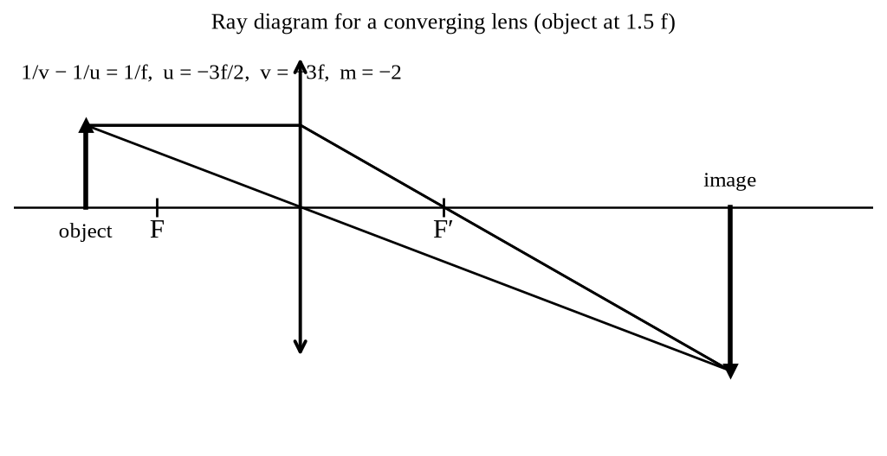
5.1.1.3 Worked examples
Example 1: surface
Air to glass (n = 1.5), R = +10 cm, object at u = −30 cm: 1.5/v + 1/30 = 0.5/10, so v = +90 cm.
Example 2: lens
Biconvex n = 1.5, R1 = +20 cm, R2 = −20 cm: f = 20 cm. Object at 30 cm: 1/v = 1/20 − 1/30, v = 60 cm, m = −2.
Example 3: in water
The same lens in water (1.33): 1/f = (1.5/1.33 − 1)(0.1) = 0.0128 per cm, f = 78 cm.
Example 4: pair
f1 = +20 cm, f2 = −30 cm. In contact: f = 60 cm. Separated by 10 cm: 1/f = 1/20 − 1/30 + 10/600, f = 30 cm.
5.1.1.4 Common pitfalls and checks
- Write the sign convention before every problem.
- The image from the first surface is the object for the second.
- Focal length depends on the surrounding medium.
Chapter Review
Key Terms
- sign convention
- rules for the signs of distances, radii and focal lengths
- focal length
- distance at which parallel rays converge, f
- lens maker's formula
- 1/f = (n − 1)(1/R1 − 1/R2)
- power
- P = 1/f in dioptres
- apparent depth
- depth/n for a flat refracting surface
Key Equations
| Quantity | Equation |
|---|---|
| Spherical surface | n2/v − n1/u = (n2 − n1)/R |
| Thin lens | 1/v − 1/u = 1/f |
| Lens maker | 1/f = (n − 1)(1/R1 − 1/R2) |
| Two lenses | 1/f = 1/f1 + 1/f2 − d/(f1 f2) |
Summary
Fix a sign convention, then apply the surface equation successively (the image from one surface is the object for the next). A thin lens is two surfaces; its focal length changes with the surrounding medium; combinations add powers.
Practice
Conceptual Questions
- C1. Can a converging lens in water become diverging? Answer
- C2. Why does the image from the first surface serve as the object for the second? Answer
- C3. What does a negative magnification mean? Answer
Problems
- P1. Light from an object 30 cm in front of a convex glass surface (n = 1.5, R = 10 cm). Find v. Answer
- P2. A biconvex lens (n = 1.5, R = 20 cm on each side) with an object 30 cm away. Find f, v and m. Answer
- P3. The same lens is immersed in water (n = 1.33). Find f. Answer
- P4. A +20 cm lens and a −30 cm lens: find f in contact and with a 10 cm gap. Answer
- P5. A plano-convex lens (n = 1.5, R = 15 cm) is silvered on its flat face. Find the focal length of the mirror. Answer
Challenge Problems
Chapter 5.1.2
Prisms, Dispersion, and Critical Angle Phenomena
Learning Objective (LO 5.1.2.A). Analyze prisms, dispersion and total internal reflection, and test models by their limiting cases.
Essential Knowledge (EK 5.1.2.A.1). A prism deviates light by δ = i + e − A; at minimum deviation n = sin((A + δm)/2)/sin(A/2); total internal reflection occurs beyond the critical angle sin C = n2/n1.
Skill 4.B. Analyze extreme asymptotic behaviors to validate physical models and eliminate unphysical solutions.
5.1.2.1 Prism geometry
δ = i + e − A, r1 + r2 = A
At minimum deviation i = e and the ray passes symmetrically:
n = sin((A + δm)/2)/sin(A/2)
Thin prism (small A): δ = (n − 1) A. Equilateral prism with n = 1.5: sin((60 + δ)/2) = 0.75, so δm = 37.2°.
5.1.2.2 Dispersion
n depends on wavelength (Cauchy: n = A + B/λ2), so blue bends more than red. Dispersive power ω = (nv − nr)/(ny − 1). A thin-prism achromatic pair has no net dispersion when δ1 ω1 = δ2 ω2 (angular dispersions opposite). With a crown prism (A = 10°, n = 1.5, ω = 0.02) a flint prism with ω = 0.04 must give deviation 2.5°: A2 = 4.17° for n = 1.6; net deviation 2.5°.
5.1.2.3 Total internal reflection and limiting cases
Critical angle sin C = n2/n1 (n1 > n2): glass 41.8°, water 48.8°, diamond 24.4°.
Right-angled prism: TIR at 45° needs n > √(2) = 1.414, so glass works and water does not.
Optical fibre: numerical aperture NA = √(n12 − n22); the acceptance angle in air is arcsin(NA). Core 1.5 and cladding 1.4 give NA = 0.539, 32.6°.
Floating disc: a point source at depth h is hidden by a surface disc of radius R = h/√(n2 − 1): for h = 1 m in water R = 1.14 m.
Limits (skill 4.B): as A → zero the prism is thin; as the angle of incidence → 90° the refraction angle → C; if n2 > n1 no critical angle exists. Use them to reject unphysical solutions.
5.1.2.4 Worked examples
Example 1: dispersion
Cauchy with A = 1.5, B = 5000 nm2: n(400 nm) = 1.531, n(700 nm) = 1.510. A thin prism of 10° spreads the colours by 0.21°.
5.1.2.5 Common pitfalls and checks
- TIR needs n1 > n2 and an angle larger than the critical angle.
- Minimum deviation formulas assume symmetric passage.
- Thin-prism formulas need small apex angles.
Chapter Review
Key Terms
- deviation
- angle between incident and emergent rays
- minimum deviation
- symmetrical passage through a prism
- dispersive power
- (nv − nr)/(ny − 1)
- critical angle
- angle of incidence beyond which TIR occurs
- numerical aperture
- √(n12 − n22) of a fibre
Key Equations
| Quantity | Equation |
|---|---|
| Prism formula | n = sin((A + δm)/2)/sin(A/2) |
| Thin prism | δ = (n − 1) A |
| Critical angle | sin C = n2/n1 |
| Fibre NA | NA = √(n12 − n22) |
Summary
Prism deviation is fixed by the refractive index and apex angle; the index varies with colour, so a prism disperses light. Total internal reflection needs n1 > n2 and an angle beyond sin(C) = n2/n1. Check models at the limits.
Practice
Conceptual Questions
- C1. Why does violet light deviate more than red in a prism? Answer
- C2. When does a ray fail to emerge from a prism? Answer
- C3. Why can TIR occur only going from a denser to a rarer medium? Answer
Problems
- P1. Find the minimum deviation for an equilateral prism with n = 1.5. Answer
- P2. A crown prism (A = 10°, n = 1.5, ω = 0.02) is paired with a flint prism (n = 1.6, ω = 0.04) to make an achromat. Find A2 and the net deviation. Answer
- P3. Find the critical angles for glass (1.5), water (1.33) and diamond (2.42) against air. Answer
- P4. A fibre has core 1.5 and cladding 1.4. Find the NA and the acceptance angle in air. Answer
- P5. Will a right-angled isosceles prism turn light by TIR at 45° if n = 1.33? Answer
Challenge Problems
Chapter 5.2.1
Young's Double-Slit Interference with Thin Film Overlays
Learning Objective (LO 5.2.1.A). Find fringe positions and shifts in Young's double-slit experiment with and without thin transparent sheets, and apply thin-film interference conditions.
Essential Knowledge (EK 5.2.1.A.1). Bright fringes occur when the path difference is a whole number of wavelengths; the fringe width is λ D/d; inserting a sheet of thickness t and index n adds (n − 1) t to one path and shifts the pattern by (n − 1) t D/d.
Skill 1.A. Apply differential and integral calculus to derive time-varying or spatially-varying physical quantities.
5.2.1.1 Double-slit interference
Path difference at height y on the screen: δ = d y/D (small angles). Bright when δ = m λ, dark when δ = (m + ½) λ.
β = λ D/d
I = Imax cos2(π d y/(λ D)) = 4 I0 cos2(φ/2), φ = 2 π δ/λ
For d = 0.5 mm, D = 1 m, λ = 600 nm: β = 1.2 mm. Immersing everything in a medium of index n shrinks β to β/n. With two wavelengths 500 and 600 nm the first coincident bright fringe is at 6 λ1 = 5 λ2, y = 6 mm for this geometry.
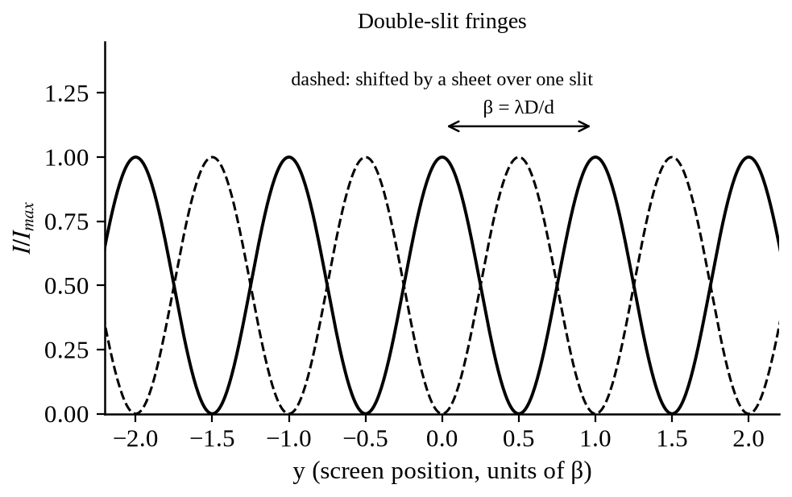
5.2.1.2 A thin sheet over one slit
A sheet of thickness t and index n in front of one slit adds an optical path (n − 1) t. The whole pattern moves toward the covered slit by
Δy = (n − 1) t D/d, number of fringes shifted N = (n − 1) t/λ
For t = 6 µm and n = 1.5 at 600 nm: N = 5 and Δy = 6 mm. The central maximum is wherever the optical paths are equal.
5.2.1.3 Thin film interference
For a film of thickness t and index n at near-normal incidence, with a phase change of π at reflection from a denser medium: reflection from the top surface (air to film) gains π; from the bottom surface gains π only if the next medium is denser still.
- Air-film-air (soap film): bright in reflection when 2 n t = (m + ½) λ.
- Film on glass with nair < nfilm < nglass (anti-reflection coating): both reflections gain π, so the dark condition is 2 n t = (m + ½) λ; the minimum coating thickness is t = λ/(4 n). MgF2 (1.38) at 550 nm: 99.6 nm.
Air wedge: fringe spacing β = λ/(2 α); with α = 2×10−4 rad and 600 nm light it is 1.5 mm, and the line of contact is dark.
Example
Soap film n = 1.33, t = 300 nm: 2 n t = 798 nm so reflected maxima at 798/(m + ½): 1596 nm, 532 nm (green), 319 nm.
5.2.1.4 Common pitfalls and checks
- Count phase changes of π at each reflection.
- Optical path is n times the geometric path.
- Fringe-width formulas assume small angles.
Chapter Review
Key Terms
- fringe width
- distance between adjacent bright fringes, λ D/d
- path difference
- difference in optical path lengths of two rays
- coherent sources
- sources with a constant phase relationship
- optical path
- n times the geometric distance
- anti-reflection coating
- film of thickness λ/(4 n) that cancels reflection
Key Equations
| Quantity | Equation |
|---|---|
| Fringe width | β = λ D/d |
| Intensity | I = Imax cos2(π d y/(λ D)) |
| Sheet shift | Δy = (n − 1) t D/d |
| Film (reflected maxima) | 2 n t = (m + ½) λ |
Summary
Interference depends on the path difference measured in wavelengths. A sheet over one slit changes the optical path by (n − 1) t and shifts the whole pattern. Thin films require counting phase changes at both surfaces.
Practice
Conceptual Questions
- C1. What happens to the fringe width if the experiment is done under water? Answer
- C2. Why does a thin sheet over one slit shift the central maximum toward it? Answer
- C3. Why is the line of contact dark in an air wedge? Answer
Problems
- P1. d = 0.5 mm, D = 1 m, λ = 600 nm. Find the fringe width. Answer
- P2. A 6 µm sheet (n = 1.5) covers one slit. Find the shift and the number of fringes passed (λ = 600 nm, same geometry). Answer
- P3. Find the intensity (as a fraction of the maximum) at a point where the path difference is λ/3. Answer
- P4. Find the minimum thickness of a MgF2 coating (n = 1.38) on glass for 550 nm. Answer
- P5. A soap film (n = 1.33, t = 300 nm) is viewed in reflected light. Which visible wavelength is reinforced? Answer
Challenge Problems
Chapter 5.3.1
Photoelectric Effect with Stopping Potential Analyses
Learning Objective (LO 5.3.1.A). Use Einstein's photoelectric equation to relate stopping potential, frequency, work function and intensity, and extract h and the work function from graphs.
Essential Knowledge (EK 5.3.1.A.1). Kmax = h f − φ = e Vs; the Vs against f graph is a straight line with slope h/e and intercept −φ/e; intensity changes the current, not Kmax.
Skill 5.A. Extract physical constants and relationships from slopes, intercepts and areas under curves of non-linear plots using calculus.
5.3.1.1 The photoelectric equation
Kmax = h f − φ = e Vs
Threshold: f0 = φ/h (λ0 = hc/φ, with hc = 1240 eV nm). Below f0 no electrons are emitted whatever the intensity. Intensity sets the number of photons and so the saturation current; Vs depends only on f and the metal.
Sodium (φ = 2.3 eV) with 400 nm light: photon energy 3.10 eV, Kmax = 0.80 eV, Vs = 0.80 V, λ0 = 539 nm.
5.3.1.2 Reading the graph (skill 5.A)
Plot Vs against f. Slope = h/e = 4.14×10−15 V s; the f-intercept is f0; the V-intercept is −φ/e. All metals give parallel lines. A line through (5.0×1014 Hz, 0 V) and (8.0×1014 Hz, 1.24 V) has slope 4.13×10−15 V s, giving h = 6.6×10−34 J s and φ = h f0 = 2.07 eV.
Two measurements are enough: h/e = (V1 − V2)/(f1 − f2). For φ = 2.0 eV: 300 nm gives V1 = 2.13 V; 400 nm gives V2 = 1.10 V; (1.03)/(2.5×1014) = 4.13×10−15 V s.
Current-voltage curves: the current saturates at high positive V (proportional to intensity), and falls to zero at V = -Vs.
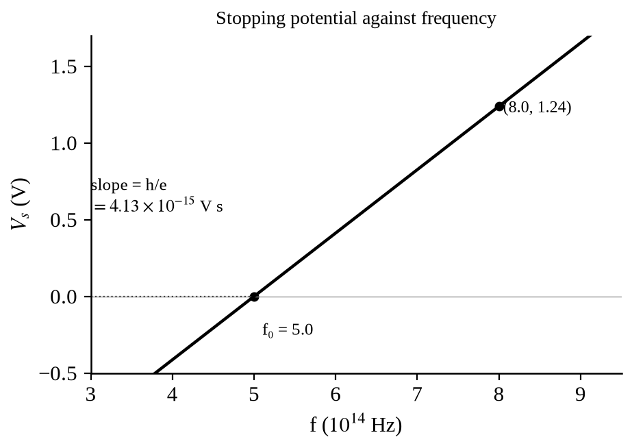
5.3.1.3 Photons: counting and momentum
Photon energy E = h f = 1240/λ(nm) eV; momentum p = h/λ. A 10 mW green (532 nm) beam delivers 2.7×1016 photons/s; at 1% quantum efficiency the current is 43 µA. A perfectly absorbing target feels F = P/c (3 W gives 1×10−8 N); a reflecting one 2P/c.
Doubling the frequency does not double Kmax: with φ = 2 eV, 500 nm gives 0.48 eV but 250 nm gives 2.96 eV.
5.3.1.4 Common pitfalls and checks
- Intensity does not change the stopping potential.
- Use eV for energies and 1240 eV nm for photons.
- The threshold is a property of the metal; the light must exceed it, not match it.
Chapter Review
Key Terms
- photoelectric effect
- emission of electrons from a surface by light
- work function
- minimum energy needed to free an electron, φ
- threshold frequency
- minimum frequency for emission, φ/h
- stopping potential
- retarding voltage that stops the fastest photoelectrons
- photon
- quantum of light with energy h f
Key Equations
| Quantity | Equation |
|---|---|
| Einstein's equation | Kmax = h f − φ = e Vs |
| Threshold | f0 = φ/h |
| Photon energy | E = 1240/λ (eV, nm) |
| Graph slope | dVs/df = h/e |
Summary
Electrons are emitted only if each photon carries more energy than φ. Vs depends on frequency (not intensity); the Vs-f graph is linear with slope h/e. Count photons with E = hc/λ to connect intensity to current.
Practice
Conceptual Questions
- C1. Why does brighter light not increase Vs? Answer
- C2. What does the intercept of the Vs-f graph on the f axis represent? Answer
- C3. Why is there a time delay problem in the wave model? Answer
Problems
- P1. Sodium (φ = 2.3 eV) is illuminated by 400 nm light. Find Kmax, Vs and the threshold wavelength. Answer
- P2. A Vs-f line passes through (5.0×1014 Hz, 0 V) and (8.0×1014 Hz, 1.24 V). Find h and φ. Answer
- P3. Light of intensity doubled falls on a metal. What changes? Answer
- P4. Find the photon rate of 10 mW of 532 nm light and the current at 1% efficiency. Answer
- P5. Electrons leave with 3 eV and meet a retarding potential of 2 V and then 3.5 V. What happens? Answer
Challenge Problems
Chapter 5.3.2
Bohr Model of Hydrogen-like Atoms
Learning Objective (LO 5.3.2.A). Use Bohr's model to find energies, radii, speeds and spectral lines of hydrogen-like atoms, with reduced-mass and large-n limits.
Essential Knowledge (EK 5.3.2.A.1). Bohr's quantization L = n ħ gives En = −13.6 Z2/n2 eV, rn = 0.529 n2/Z Å and vn = 2.19×106 Z/n m/s; spectral lines follow from En1 − En2 = h f.
Skill 4.B. Analyze extreme asymptotic behaviors to validate physical models and eliminate unphysical solutions.
5.3.2.1 The model
Postulates: circular orbits with L = m v r = n ħ, no radiation while in an orbit, photon emitted or absorbed in a jump with h f = Ei − Ef. Balancing k Z e2/r2 = m v2/r gives
En = −13.6 Z2/n2 eV, rn = 0.529 n2/Z Å, vn = 2.19×106 (Z/n) m/s
1/λ = R Z2 (1/n12 − 1/n22), R = 1.097×107 per m
Series: Lyman (n1 = 1, UV), Balmer (n1 = 2, visible), Paschen (n1 = 3, IR). From level n, N = n(n − 1)/2 distinct lines are possible.
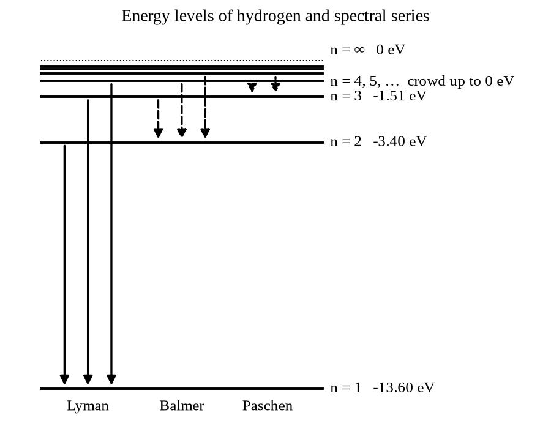
5.3.2.2 Applications
H: Balmer α (3 to 2): 13.6(¼ − 1/9) = 1.89 eV, λ = 656 nm; the Lyman limit is 13.6 eV, 91.2 nm.
He+ (Z = 2): E1 = −54.4 eV; r1 = 0.265 Å; n = 2 to 1 photon 40.8 eV, 30.4 nm.
Li2+ (Z = 3): the 6 to 3 transition has the same wavelength as hydrogen's 2 to 1 line (9 × (1/9 − 1/36) = ¾).
5.3.2.3 Limiting cases (skill 4.B)
Reduced mass: the nucleus also moves, so replace m by μ = m M/(m + M). For hydrogen μ/m = 0.99946, a 0.054% shift in all energies. For muonic hydrogen μ = 207 × 1836/(2043) me = 186 me: E1 = −2.53 keV and r1 = 284 fm. Positronium has μ = me/2: En = −6.8/n2 eV, r1 = 1.06 Å, 2 to 1 photon 5.1 eV (243 nm).
Correspondence principle: for large n the jump from n to n − 1 has frequency 2 × 13.6/(n3 h) = 6.58×1015/n3 Hz, equal to the classical orbital frequency v/(2 π r) = 6.58×1015/n3 Hz.
Rejecting unphysical solutions: Z2 scaling puts He+ energies at four times hydrogen's, but the model fails for atoms with more than one electron, for fine structure, and for the angular momentum of the ground state (Bohr's L = ħ, while quantum mechanics gives L = 0).
5.3.2.4 Common pitfalls and checks
- Bohr's model works for one-electron species only.
- Use Z2 scaling and the reduced mass for accuracy.
- The ground state in Bohr's model has L = ħ; quantum mechanics says otherwise.
Chapter Review
Key Terms
- Bohr radius
- a0 = 0.529 Å, the radius of the first hydrogen orbit
- quantized angular momentum
- L = n ħ
- spectral series
- set of lines ending on the same lower level
- ionization energy
- energy to remove an electron from the ground state
- reduced mass
- μ = m M/(m + M)
Key Equations
| Quantity | Equation |
|---|---|
| Energy levels | En = −13.6 Z2/n2 eV |
| Radius | rn = 0.529 n2/Z Å |
| Spectral lines | 1/λ = R Z2 (1/n12 − 1/n22) |
| Speed | vn = 2.19×106 Z/n m/s |
Summary
Quantization of angular momentum fixes the allowed orbits; energies scale as Z2/n2 and radii as n2/Z. Transitions give series of lines. Reduced-mass and large-n limits are consistency tests.
Practice
Conceptual Questions
- C1. Why is the energy of a bound electron negative? Answer
- C2. Why do lines crowd together near the series limit? Answer
- C3. How does He+ compare to hydrogen in its energy levels? Answer
Problems
- P1. Find E1, r1 and the n = 2 to 1 photon for He+. Answer
- P2. Find the wavelength of the Balmer α line and of the Lyman limit. Answer
- P3. How many different lines can hydrogen emit from n = 4? Answer
- P4. Which Li2+ transition has the same wavelength as the hydrogen 2 to 1 line? Answer
- P5. Find μ, E1 and r1 for muonic hydrogen. Answer
Challenge Problems
Answer Key
Chapter 1.1.1 — Position, Displacement, and Average/Instantaneous Velocity
Conceptual
- C1. Yes, when the path doubles back. They are equal when motion is in one direction without reversal. ?
- C2. Yes: a ball at the top of its flight has v = 0 and a = g. ?
- C3. The change in velocity. ?
- C4. No; only their average velocities are equal. ?
Problems
- P1. v = 6t − 6t2, so v(1) = 0 (turning point, x = 1 m). x(2) = −4 m so vavg = −4/2 = −2 m/s. Path: 0 to 1 m (1 m) then 1 m to −4 m (5 m), total 6 m, so average speed = 3 m/s. ?
- P2. 300 m and 15 m/s. ?
- P3. 15 = 20t − 5t2 gives t2 − 4t + 3 = 0, so t = 1 s (rising) and t = 3 s (falling). ?
- P4. t = 5 s, H = 125 m. ?
- P5. x = (v0/k)(1 − e−kt) so the total distance is v0/k = 20 m. Since e−kt = 1 − kx/v0, v = v0 − kx. ?
Challenge
Chapter 1.1.2 — Vector Algebra in Multiple Dimensions
Conceptual
- C1. No; they only need equal components along A. ?
- C2. No; they may differ by a vector parallel to A. ?
- C3. The force is perpendicular to the velocity, so F·v = 0. ?
- C4. They are coplanar. ?
Problems
- P1. 122.3° (cos = −2/√(14) = −0.535). ?
- P2. (4, −5, −7)/√(90) = (0.42, −0.53, −0.74). ?
- P3. (A·B)/|B| = −2; vector (−⅔, 4/3, −4/3). ?
- P4. W = 6 − 2 + 2 = 6 J. ?
- P5. r × F = (10, −5, 0) N m. ?
Challenge
Chapter 1.2.1 — Projectile Motion over Inclined Planes
Conceptual
- C1. It increases: T = 2u sin(α)/(g cos(θ)) and the perpendicular acceleration g cos(θ) falls as θ grows, so the projectile stays up longer. ?
- C2. At θ = 0. ?
- C3. Up the slope it is 45° + θ/2; down the slope it is 45° − θ/2. ?
Problems
- P1. 26.7 m at 30° above the slope. ?
- P2. 80 m. ?
- P3. 2 s; 28.3 m. ?
- P4. 4.62 s; 53.3 m down the slope from the launch point. ?
- P5. (u sin(α))2/(2 g cos(θ)) = 100/17.32 = 5.77 m. ?
Challenge
Chapter 1.2.2 — Relative Motion and Minimum Distance of Approach
Conceptual
- C1. Forward, into his direction of motion. ?
- C2. West of north, to cancel the eastward wind. ?
- C3. If the bearing of one from the other stays constant while the distance decreases. ?
Problems
- P1. 5 km/h, tilted 53° forward. ?
- P2. 20 s, 60 m; 25 s. ?
- P3. 14.5° west of north; 193.6 m/s. ?
- P4. 89.4 m at t = 4 s. ?
- P5. The relative acceleration is zero; relative speed 5 m/s; separation 10 m. ?
Challenge
Chapter 1.3.1 — Kinematic Constraints in Multi-Body Systems
Conceptual
- C1. The pulley is massless and frictionless, so any difference would give it infinite acceleration. ?
- C2. The wedge is pushed by the horizontal component of N; the floor force is vertical, so nothing balances it. ?
- C3. m1 = 2 m2. ?
Problems
- P1. ap = 1.43 m/s2 down; a2 = 2.86 m/s2 up; T = 12.9 N. ?
- P2. 1.92 m/s2; 6.67 m/s2; 7.70 N. ?
- P3. y = 4 m; vy = −x vx/y = −1.5 m/s (down at 1.5 m/s). ?
- P4. v = u l/x = 2 × 5/4 = 2.5 m/s. ?
- P5. a = 30/5 = 6 m/s2; T = 12 N. ?
Challenge
- X1. Wedge: N sin(θ) = M A. In the wedge frame the block feels a pseudo force m A opposite to the wedge motion, so perpendicular to the incline N = m g cos(θ) − m A sin(θ), and along it m arel = m g sin(θ) + m A cos(θ). Substituting N into the wedge equation gives (m g cos(θ) − m A sin(θ)) sin(θ) = M A, hence the result; then arel = g sin(θ) + A cos(θ) gives the second formula. ?
- X2. y d2y/dt2 + (dy/dt)2 = −vx2 gives a = −1.56 m/s2 (downward 1.56 m/s2). ?
Chapter 1.3.2 — Non-Inertial Reference Frames and Pseudo Forces
Conceptual
- C1. In the inertial frame there is none; the backward motion is only the car moving forward under it. In the car's frame it is a pseudo force. ?
- C2. The surface is perpendicular to geff. ?
- C3. It is always perpendicular to the velocity relative to the frame. ?
Problems
- P1. 26.6° from the vertical; 11.18 m/s2. ?
- P2. 720 N; 0.913. ?
- P3. g tan(30) = 5.77 m/s2. ?
- P4. 2.83 rad/s. ?
- P5. L a/g = 0.2 m. ?
Challenge
Chapter 1.4.1 — Work-Energy Theorem with Variable Forces
Conceptual
- C1. No; it is perpendicular to the displacement. ?
- C2. Its speed is the same at the end as at the start, but not necessarily constant in between. ?
- C3. The area equals the change in kinetic energy. ?
Problems
- P1. 12 J; 3.46 m/s. ?
- P2. 2 m/s. ?
- P3. 31.6 m/s; 211 m. ?
- P4. M g L/2 = 10 J. ?
- P5. 1 J, path independent (U = −xy). ?
Challenge
Chapter 1.4.2 — Potential Energy Curves and Stability Analyses
Conceptual
Problems
- P1. x = 0 stable; x = ±0.707 m unstable; escape energy 0.25 J. ?
- P2. 2 rad/s. ?
- P3. x = 1 stable (U = −2), x = −1 unstable (U = 2). ?
- P4. ±1.73 m; 2 m/s. ?
- P5. r0 = 1, Umin = −1. ?
Challenge
Chapter 1.5.1 — Center of Mass of Continuous Distributions
Conceptual
- C1. Yes, for a ring or a boomerang. ?
- C2. They come in equal and opposite pairs which cancel in the sum. ?
- C3. It shifts away from the hole. ?
Problems
- P1. 2L/3 = 0.8 m. ?
- P2. 0.191 m and 0.127 m from the center. ?
- P3. 0.15 m and 0.20 m from the center. ?
- P4. -R/6 = −0.1 m (shifted away from the hole). ?
- P5. 2 m, in the opposite direction. ?
Challenge
Chapter 1.5.2 — Oblique and Inelastic Collisions
Conceptual
- C1. Yes, if stored energy is released (explosion). ?
- C2. Yes, always. ?
- C3. Momentum conservation and energy conservation together require the vectors p1' and p2' to be perpendicular. ?
Problems
- P1. 2 m/s; 24 J. ?
- P2. -2 m/s and 4 m/s. ?
- P3. e = 0.8; 0.819 m. ?
- P4. 200 m/s. ?
- P5. 4.33 m/s and 2.5 m/s. ?
Challenge
Chapter 1.6.1 — Parallel and Perpendicular Axis Theorems
Conceptual
- C1. The cross term vanishes only about the COM. ?
- C2. No; it requires a planar body. ?
- C3. The ring: I = MR2 against MR2/2. ?
Problems
- P1. 4 kg m2. ?
- P2. 0.125; 0.625; 0.75 kg m2. ?
- P3. 0.5; 1.5 kg m2. ?
- P4. 0.25; 0.5 kg m2. ?
- P5. 0.667; 1.667 kg m2. ?
Challenge
Chapter 1.6.2 — Combined Translational and Rotational Kinematics / Rolling
Conceptual
- C1. It has smaller I/(MR2), so less energy goes into rotation. ?
- C2. No; the contact point is at rest. ?
- C3. No; it would slide with no rotation, at a = g sin(θ). ?
Problems
- P1. 3.57 m/s2; 3.78 m/s. ?
- P2. Sphere 5/7 = 0.714, disc ⅔ = 0.667, ring ½ = 0.5. ?
- P3. 6.67 m/s2; 1 N. ?
- P4. (2/7) tan(37) = 0.214. ?
- P5. 24 J; 16 J. ?
Challenge
Chapter 1.6.3 — Conservation of Angular Momentum
Conceptual
- C1. I decreases and L = I ω is constant. ?
- C2. No; the pivot exerts an impulsive force. L about the pivot is conserved. ?
- C3. From the work done by her muscles pulling the arms inward. ?
Problems
- P1. 5 rad/s; 8 J to 20 J, an increase of 12 J. ?
- P2. -½ m g vx t2 = −200 kg m2/s (magnitude 200). ?
- P3. 2.67 rad/s; 1 J. ?
- P4. 5.83 rad/s. ?
- P5. 2×104 m/s. ?
Challenge
Chapter 1.7.1 — Fluid Dynamics and Equation of Continuity
Conceptual
- C1. It speeds up, so continuity requires a smaller cross-section. ?
- C2. The faster air above lowers the pressure, so the higher pressure inside pushes up. ?
- C3. No; a pump adds energy, so the constant changes. ?
Problems
Challenge
Chapter 1.7.2 — Viscosity and Surface Tension Forces
Conceptual
- C1. Drag grows with speed until it balances weight. ?
- C2. A soap film has two surfaces. ?
- C3. The flow falls by a factor of 16. ?
Problems
- P1. 1.58 cm/s. ?
- P2. 3.93×10−6 m3/s. ?
- P3. 2.94 cm. ?
- P4. 12 Pa; 144 Pa. ?
- P5. 8 π (4×10−4 − 1×10−4) (0.03) = 2.26×10−4 J. ?
Challenge
Chapter 2.1.1 — Torsional, Physical, and Damped Oscillations
Conceptual
- C1. Both I and d depend on the pivot. ?
- C2. Only at second order in γ/ω0. ?
- C3. Energy lost per cycle ≈ 2 π/Q of the stored energy. ?
Problems
- P1. 1.26 s. ?
- P2. 1.64 s; 2L/3 = 0.667 m. ?
- P3. 9.95 rad/s; 1 s; Q = 5. ?
- P4. θ02/16 = 0.0019, i.e. 0.19%. ?
- P5. 0.628 s; 1 m/s; 1 J. ?
Challenge
Chapter 2.1.2 — Wave Speed on Stretched Strings
Conceptual
- C1. It increases by √(2). ?
- C2. No; the maximum particle speed is A ω and is unrelated to v. ?
- C3. The wall exerts a downward force on the string as the pulse arrives, producing an opposite displacement. ?
Problems
- P1. 100 m/s. ?
- P2. 20 m/s; 0.628 m; 31.8 Hz; 4 m/s. ?
- P3. 2 W. ?
- P4. 2 s. ?
- P5. ½; t = 0.667; r = −0.333. ?
Challenge
Chapter 2.2.1 — Resonance in Air Columns and Standing Waves
Conceptual
- C1. Its fundamental wavelength is 4L instead of 2L. ?
- C2. Use the difference of two successive resonance lengths, L2 − L1 = λ/2. ?
- C3. At an open end the air is at atmospheric pressure and can move freely. ?
Problems
- P1. Open: 340, 680, 1020 Hz. Closed: 170, 510, 850 Hz. ?
- P2. 345 m/s; 0.25 cm. ?
- P3. 300 m/s; 360 N. ?
- P4. 100 Hz; 0.85 m. ?
- P5. 331 Hz; 347 Hz. ?
Challenge
Chapter 2.2.2 — Relativistic and Classical Doppler Effects for Sound
Conceptual
- C1. The medium defines a preferred frame. ?
- C2. No; if both are at rest relative to the ground, the wavefronts are carried but the number per second is unchanged. ?
- C3. f ((v + u)/(v − u) − 1) = 2 u f/(v − u). ?
Problems
Challenge
Chapter 3.1.1 — Maxwell-Boltzmann Distribution and Degree of Freedom
Conceptual
- C1. The total probability is 1 so the peak must fall as the spread rises. ?
- C2. Rotation is frozen out (quantized) at very low T. ?
- C3. vrms, by a factor √(3/2). ?
Problems
Challenge
Chapter 3.2.1 — Cyclic Thermodynamic Processes and Efficiency
Conceptual
- C1. The second law requires some heat to be rejected. ?
- C2. Yes: efficiency = 1 − r1 − γ. ?
- C3. The ratio Tc/Th is the ratio of heats; only the absolute scale makes it meaningful. ?
Problems
Challenge
Chapter 4.1.1 — Electric Fields of Continuous Charge Distributions
Conceptual
- C1. Contributions from opposite elements cancel. ?
- C2. k Q/x2 with Q = σ π R2. ?
- C3. The inverse-square fall-off is exactly balanced by the growing number of charge elements that contribute. ?
Problems
- P1. 216 N/C. ?
- P2. 71.9 N/C. ?
- P3. 1.72×106 N/C. ?
- P4. 1.66×104 N/C. ?
- P5. k Q/(d √(d2 + a2)) = 180 N/C. ?
Challenge
Chapter 4.1.2 — Gauss's Law for Highly Symmetric Distributions
Conceptual
- C1. Yes, but you cannot use it to find E easily. ?
- C2. Gauss's law gives Qenc = 0 inside the metal, and the surface charge arranges itself so that E = 0. ?
- C3. No; only the enclosed charge matters, not where it is inside. ?
Problems
- P1. 3.6×103 N/C; 1.8×103 N/C. ?
- P2. 1.13×105 N/C; 2.26×105 N/C. ?
- P3. 4.5×103 N/C; 0. ?
- P4. ρ0 R/(4 ε0) = 2.8×103 N/C. ?
- P5. 1.88×103 N/C. ?
Challenge
Chapter 4.2.1 — Electrostatic Potential Energy of Discontinuous Systems
Conceptual
- C1. Each pair would otherwise be counted twice. ?
- C2. The force is zero; the torque is p × E, generally non-zero. ?
- C3. Yes, for attractive configurations. ?
Problems
- P1. 0.270 J. ?
- P2. 0.487 J. ?
- P3. 0.0539 J; 0.0450 J. ?
- P4. 4.24 m/s each. ?
- P5. -3×10−6 J; (8, −4, −6)e-6 N m. ?
Challenge
Chapter 4.2.2 — Dielectric Insertion and Bound Charge Configurations
Conceptual
- C1. Q is fixed while C grows by κ. ?
- C2. Yes, the stored energy decreases as it enters. ?
- C3. Into the work the field does on the slab. ?
Problems
- P1. 177 pF; 708 pF. ?
- P2. Q 17.7 to 70.8 nC; U 0.885 to 3.54 µJ; battery 5.31 µJ. ?
- P3. 25 V; −0.664 µJ. ?
- P4. 6.64×10−7 C/m2; 2.5×104 V/m. ?
- P5. 13.3 microN. ?
Challenge
Chapter 4.3.1 — Microscopic Models of Conduction / Drift Velocity
Conceptual
- C1. The electric field propagates along the wire at nearly c and moves all carriers together. ?
- C2. It doubles. ?
- C3. Greater lattice vibration shortens τ. ?
Problems
- P1. 7.4×10−5 m/s; about 1.4×104 s. ?
- P2. 2.5×10−14 s. ?
- P3. 0.168 Ω; 0.672 Ω. ?
- P4. 1.31. ?
- P5. vd and E in the thin wire are twice those in the thick wire. ?
Challenge
Chapter 4.3.2 — Multi-Loop Networks and RC Circuit Transients
Conceptual
- C1. The capacitor is initially uncharged, so all the emf appears across R. ?
- C2. No; it only changes how fast. ?
- C3. An exponential decay whose slope is −1/τ. ?
Problems
- P1. 2.57 A; −0.857 A; 1.71 A. ?
- P2. 7.58 V; 0.44 mA; 2.30 s. ?
- P3. 0.693 s; 1.8 mJ (a quarter of 7.2 mJ). ?
- P4. 5 V; 0.5 ms. ?
- P5. 1.0 s. ?
Challenge
Chapter 4.4.1 — Lorentz Force Trajectories in Non-Uniform Fields
Conceptual
- C1. The force is perpendicular to the velocity. ?
- C2. The period depends only on q, m and B. ?
- C3. No. ?
Problems
- P1. 4.18 cm; 131 ns. ?
- P2. 4.27 mm; 17.9 ns; 4.65 cm. ?
- P3. 1×106 m/s. ?
- P4. 22.9 MHz; 26.9 MeV. ?
- P5. B = 0.133 T. ?
Challenge
Chapter 4.4.2 — Biot-Savart Law for Complex Wire Frameworks
Conceptual
- C1. dl is parallel to rhat, so dl × rhat = 0. ?
- C2. The end sees only one half of the winding. ?
- C3. They attract. ?
Problems
Challenge
Chapter 4.5.1 — Motional EMF with Mechanical Dynamics
Conceptual
Problems
- P1. 0.6 V; 0.3 A; 0.06 N; 0.18 W. ?
- P2. 5 s; 15 m; 0.45 J. ?
- P3. 5 m/s; 0.5 s. ?
- P4. 1 V. ?
- P5. 0.2 A; 0.01 N; 0.02 W. ?
Challenge
Chapter 4.5.2 — Self/Mutual Inductance and LC/LR Circuits
Conceptual
- C1. That would need an infinite emf. ?
- C2. L plays the role of m and 1/C of k. ?
- C3. It acts as an open circuit. ?
Problems
- P1. 2.51 mH; 5.03 mJ. ?
- P2. 20 ms; 1.26 A; 100 A/s; 13.9 ms. ?
- P3. 0.4 J. ?
- P4. 1000 rad/s; 159 Hz; 1 A; 5 mJ. ?
- P5. 0.7 H and 0.3 H. ?
Challenge
Chapter 5.1.1 — Refraction at Spherical Surfaces and Thin Lenses
Conceptual
- C1. Yes, if the lens material has a lower index than the water around it. ?
- C2. Light that has crossed the first surface continues to the second as though emitted from that image. ?
- C3. The image is inverted. ?
Problems
Challenge
Chapter 5.1.2 — Prisms, Dispersion, and Critical Angle Phenomena
Conceptual
- C1. n is larger for shorter wavelengths. ?
- C2. When the angle at the second face exceeds the critical angle. ?
- C3. Otherwise sin(r) = n1 sin(i)/n2 < 1 always has a solution. ?
Problems
- P1. 37.2°. ?
- P2. 4.17°; 2.5°. ?
- P3. 41.8; 48.8; 24.4°. ?
- P4. 0.539; 32.6°. ?
- P5. No: it needs n > 1.414. ?
Challenge
Chapter 5.2.1 — Young's Double-Slit Interference with Thin Film Overlays
Conceptual
- C1. It decreases by a factor n. ?
- C2. The extra optical path must be compensated by a shorter geometric path on that side. ?
- C3. Reflection from the lower glass adds a phase π; the upper reflection does not. ?
Problems
Challenge
Chapter 5.3.1 — Photoelectric Effect with Stopping Potential Analyses
Conceptual
- C1. Each electron absorbs a single photon, so only the photon energy matters. ?
- C2. The threshold frequency f0. ?
- C3. Waves would build up energy gradually; observed emission is instantaneous. ?
Problems
- P1. 0.80 eV; 0.80 V; 539 nm. ?
- P2. 6.6×10−34 J s; 2.07 eV. ?
- P3. The saturation current doubles; Vs and Kmax are unchanged. ?
- P4. 2.7×1016 per s; 43 µA. ?
- P5. They reach the anode with 1 eV at 2 V; they never arrive at 3.5 V. ?
Challenge
Chapter 5.3.2 — Bohr Model of Hydrogen-like Atoms
Conceptual
- C1. Zero is the free electron at rest; bound states lie below it. ?
- C2. Level spacing decreases as 1/n3. ?
- C3. Four times larger in magnitude for the same n. ?
Problems
- P1. -54.4 eV; 0.265 Å; 40.8 eV (30.4 nm). ?
- P2. 656 nm; 91.2 nm. ?
- P3. 6. ?
- P4. 6 to 3. ?
- P5. 186 me; −2.53 keV; 284 fm. ?
Challenge
Appendix A: Constants and Units
Physical constants (rounded)
| Constant | Symbol | Value |
|---|---|---|
| Gravitational acceleration | g | 9.8 m/s2 |
| Gravitational constant | G | 6.67×10−11 N m2/kg2 |
| Speed of light | c | 3.00×108 m/s |
| Elementary charge | e | 1.60×10−19 C |
| Coulomb constant | k = 1/(4 π ε0) | 8.99×109 N m2/C2 |
| Permittivity of free space | ε0 | 8.85×10−12 C2/(N m2) |
| Permeability of free space | μ0 | 4 π × 1×10−7 T m/A |
| Planck constant | h | 6.63×10−34 J s = 4.14×10−15 eV s |
| hc | hc | 1240 eV nm |
| Boltzmann constant | kB | 1.38×10−23 J/K |
| Gas constant | R | 8.31 J/(mol K) |
| Avogadro number | NA | 6.02×1023 /mol |
| Electron mass | me | 9.11×10−31 kg |
| Proton mass | mp | 1.67×10−27 kg |
| Rydberg energy | 13.6 eV | 13.6 eV |
| Bohr radius | a0 | 0.529×10−10 m |
| Atmospheric pressure | 1 atm | 1.013×105 Pa |
| Density of water | ρ | 1000 kg/m3 |
| Speed of sound in air (20 °C) | v | 343 m/s |
SI base units
metre (m), kilogram (kg), second (s), ampere (A), kelvin (K), mole (mol), candela (cd).
Dimensional checks
Force: kg m s-2 (N). Energy: kg m2 s-2 (J). Power: J/s (W). Pressure: N/m2 (Pa). Charge: A s (C). Magnetic field: kg s−2 A−1 (T).
Appendix B: Math Toolkit
Calculus
| Function | Derivative |
|---|---|
| xn | n xn−1 |
| sin x | cos x |
| cos x | -sin x |
| eax | a eax |
| ln x | 1/x |
Integral of xn dx = xn+1/(n+1) for n not equal to −1. Integral of dx/x = ln x.
Small-quantity approximations (x much less than 1)
- (1 + x)n ≈ 1 + n x
- sin x ≈ x, tan x ≈ x, cos x ≈ 1 − x2/2 (x in radians)
- ex ≈ 1 + x, ln(1 + x) ≈ x
Vectors
- Dot product: A·B = AB cos(θ) = AxBx + AyBy + AzBz
- Cross product magnitude: |A × B| = AB sin(θ); direction by right-hand rule
- Triple product: A·(B × C) = volume of the parallelepiped
- Components: i × j = k, j × k = i, k × i = j
Trigonometry
sin(a+b) = sin a cos b + cos a sin b; cos(a+b) = cos a cos b − sin a sin b; sin 2a = 2 sin a cos a; cos 2a = cos2 a − sin2 a.
Differential equations you will meet
- dy/dt = −y/τ gives y = y0 e−t/τ (RC, RL, radioactive decay)
- d2x/dt2 = −ω2 x gives x = A cos(ω t + φ) (SHM, LC)
- Damped: d2x/dt2 + (b/m) dx/dt + ω02 x = 0
Appendix C: Skills Framework
Every chapter trains one of five Science Practices. Each page of the Index by Skill lists chapters by skill.
Skill 1: Advanced Mathematical Modeling (AMM)
- 1.A Calculus for time- or space-varying quantities
- 1.B Vector algebra: dot, cross, triple products
- 1.C First- and second-order differential equations (RC, LR, damped oscillation)
Skill 2: Multi-Concept Synthesis (MCS)
- 2.A Combine principles from two or more domains
- 2.B Apply several conservation laws simultaneously
Skill 3: Constraint and Frame Analysis (CFA)
- 3.A Geometric, kinematic and dynamic constraints
- 3.B Switch between lab, non-inertial and COM frames
Skill 4: Approximations and Limiting Cases (ALC)
- 4.A Binomial and Taylor expansions, small-angle limits
- 4.B Asymptotic behavior to test and prune solutions
Skill 5: Graphical and Statistical Interpretation (GSI)
- 5.A Slopes, intercepts and areas of plots using calculus
- 5.B Error bounds, scaling laws and functional dependences
Appendix D: Study Plan
A 24-week route through the notebook, about 6 hours per week. Adjust the pace to your own calendar.
| Weeks | Chapters | Focus |
|---|---|---|
| 1-2 | 1.1.1 to 1.2.2 | Kinematics and vectors |
| 3-4 | 1.3.1 to 1.4.2 | Newton's laws, constraints, energy |
| 5-7 | 1.5.1 to 1.6.3 | Momentum, COM, rotation |
| 8 | 1.7.1 to 1.7.2 | Fluids |
| 9-10 | 2.1.1 to 2.2.2 | Oscillations and waves |
| 11-12 | 3.1.1 to 3.2.1 | Thermodynamics |
| 13-16 | 4.1.1 to 4.3.2 | Electrostatics and circuits |
| 17-19 | 4.4.1 to 4.5.2 | Magnetism and induction |
| 20-22 | 5.1.1 to 5.2.1 | Optics |
| 23-24 | 5.3.1 to 5.3.2 and revision | Modern physics, mixed problems |
Revision tip: use the Formula Sheet and the Glossary for quick review, and the Index by Skill to practise the same skill across units.
Formula Sheet
Unit 1 — Mechanics
1.1.1 Position, Displacement, and Average/Instantaneous Velocity
| Instantaneous velocity | v = dx/dt |
| Acceleration | a = dv/dt = v dv/dx |
| Displacement | Δx = ∫ v dt |
| Constant a | v2 = v02 + 2 a Δx |
1.1.2 Vector Algebra in Multiple Dimensions
| Dot product | A·B = Ax Bx + Ay By + Az Bz |
| Cross product magnitude | |A × B| = AB sin(θ) |
| Triple product | A·(B × C) = B·(C × A) |
| BAC-CAB | A × (B × C) = B(A·C) − C(A·B) |
1.2.1 Projectile Motion over Inclined Planes
| Components of g | ax = −g sin(θ); ay = −g cos(θ) |
| Time of flight | T = 2 u sin(α)/(g cos(θ)) |
| Range up | R = 2u2 sin(α) cos(α+θ)/(g cos2(θ)) |
| Max range up | R = u2/(g(1+sin(θ))) |
1.2.2 Relative Motion and Minimum Distance of Approach
| Relative velocity | vAB = vA − vB |
| Time of closest approach | t = −(r0.vrel)/|vrel|2 |
| Minimum distance | dmin = |r0 x vrel|/|vrel| |
| Rain/umbrella | tan(φ) = vman/vrain |
1.3.1 Kinematic Constraints in Multi-Body Systems
| String and movable pulley | y2 + 2 yp = constant |
| Compound pulley | ap = (m1 − 2 m2) g/(m1 + 4 m2) |
| Wedge acceleration | A = m g sin(θ) cos(θ)/(M + m sin2(θ)) |
| Rod | x vx + y vy = 0 |
1.3.2 Non-Inertial Reference Frames and Pseudo Forces
| Pseudo force | F = −m aframe |
| Effective gravity | geff = g − aframe |
| Centrifugal | F = m ω2 r |
| Coriolis | F = −2 m (ω x v) |
1.4.1 Work-Energy Theorem with Variable Forces
| Work | W = ∫ F·dr |
| Work-energy | Wnet = ΔK |
| Power | P = F·v |
| Spring work | W = ½ k (x12 − x22) |
1.4.2 Potential Energy Curves and Stability Analyses
| Force from U | F = −dU/dx |
| Stability | Uxx > 0 stable |
| Small oscillations | ω = √(Uxx/m) |
| Speed | v = √(2 (E − U)/m) |
1.5.1 Center of Mass of Continuous Distributions
| COM | rcm = (1/M) ∫ r dm |
| System motion | M acm = Fext |
| Semicircular wire | ycm = 2R/π |
| Semicircular disc | ycm = 4R/(3 π) |
1.5.2 Oblique and Inelastic Collisions
| Momentum | m1 v1 + m2 v2 = m1 v1' + m2 v2' |
| Restitution | e = (v2' − v1')/(v1 − v2) |
| Energy loss | ΔK = ½ μ vrel2 (1 − e2) |
| Bounce from height | hn = e2n h0 |
1.6.1 Parallel and Perpendicular Axis Theorems
| Parallel axis | I = Icm + M d2 |
| Perpendicular axis | Iz = Ix + Iy |
| Rod end | I = M L2/3 |
| Disc diameter | I = M R2/4 |
1.6.2 Combined Translational and Rotational Kinematics / Rolling
| Rolling condition | v = ω R |
| Kinetic energy | K = ½ M v2 (1 + I/(M R2)) |
| Incline acceleration | a = g sin(θ)/(1 + I/(M R2)) |
| Yo-yo | a = 2g/3 |
1.6.3 Conservation of Angular Momentum
| Angular momentum | L = r × p = I ω |
| Torque | τ = dL/dt |
| Conservation | I1 ω1 = I2 ω2 |
| Central force | r1 v1 = r2 v2 |
1.7.1 Fluid Dynamics and Equation of Continuity
| Continuity | A1 v1 = A2 v2 |
| Bernoulli | p + ½ ρ v2 + ρ g h = const |
| Torricelli | v = √(2 g h) |
| Drain time | t = (A/a) √(2 h/g) |
1.7.2 Viscosity and Surface Tension Forces
| Stokes drag | F = 6 π η r v |
| Terminal velocity | vt = 2 r2 (ρ − σ) g/(9 η) |
| Poiseuille | Q = π Δp r4/(8 η L) |
| Capillary rise | h = 2 T cos(θ)/(ρ g r) |
Unit 2 — Waves and Acoustics
2.1.1 Torsional, Physical, and Damped Oscillations
| Torsional period | T = 2 π √(I/κ) |
| Physical pendulum | T = 2 π √(I/(M g d)) |
| Damped frequency | ω′ = √(ω02 − (b/2m)2) |
| Critical damping | bc = 2 √(k m) |
2.1.2 Wave Speed on Stretched Strings
| Wave speed on string | v = √(T/μ) |
| Travelling wave | y = A sin(k x − ω t); v = ω/k |
| Power | P = ½ μ ω2 A2 v |
| Reflection | r = (v2 − v1)/(v1 + v2) |
2.2.1 Resonance in Air Columns and Standing Waves
| Open pipe or string | fn = n v/(2L) |
| Closed pipe | fn = (2n − 1) v/(4L) |
| End correction | e = 0.6 r |
| Speed of sound | v = 331 √(1 + T/273) |
2.2.2 Relativistic and Classical Doppler Effects for Sound
| Sound Doppler | f' = f (v + vo)/(v − vs) |
| Echo from a wall | f' = f (v + u)/(v − u) |
| Light Doppler | f' = f √((1 + β)/(1 − β)) |
| Small speed | f'/f ≈ 1 + u/v |
Unit 3 — Thermodynamics
3.1.1 Maxwell-Boltzmann Distribution and Degree of Freedom
| RMS speed | vrms = √(3 k T/m) |
| Most probable | vmp = √(2 k T/m) |
| Internal energy | U = (f/2) n R T |
| Mean free path | λ = k T/(√(2) π d2 p) |
3.2.1 Cyclic Thermodynamic Processes and Efficiency
| Efficiency | η = W/Qh = 1 − Qc/Qh |
| Carnot | η = 1 − Tc/Th |
| Otto | η = 1 − r1 − γ |
| Refrigerator COP | COP = Tc/(Th − Tc) |
Unit 4 — Electricity and Magnetism
4.1.1 Electric Fields of Continuous Charge Distributions
| Continuous charge | E = ∫ k dq/r2 |
| Ring axis | E = k Q x/(x2 + R2)3/2 |
| Infinite line | E = λ/(2 π ε0 r) |
| Disc axis | E = (σ/2 ε0)(1 − x/√(x2 + R2)) |
4.1.2 Gauss's Law for Highly Symmetric Distributions
| Gauss's law | ∮ E·dA = Qenc/ε0 |
| Uniform sphere (inside) | E = k Q r/R3 |
| Infinite sheet | E = σ/(2 ε0) |
| Cavity | E = ρ a/(3 ε0) |
4.2.1 Electrostatic Potential Energy of Discontinuous Systems
| Pair energy | U = k q1 q2/r |
| System | U = sum over pairs of k qi qj/rij |
| Charged shell | U = k Q2/(2R) |
| Dipole | U = −p·E; τ = p × E |
4.2.2 Dielectric Insertion and Bound Charge Configurations
| Capacitance with dielectric | C = κ ε0 A/d |
| Energy | U = ½ C V2 = Q2/(2C) |
| Bound charge | σb = σ (1 − 1/κ) |
| Partial slab | C = ε0 A/(d − t + t/κ) |
4.3.1 Microscopic Models of Conduction / Drift Velocity
| Current | I = n A e vd |
| Drift velocity | vd = e E τ/m |
| Conductivity | σ = n e2 τ/m |
| Resistance | R = ρ L/A |
4.3.2 Multi-Loop Networks and RC Circuit Transients
| Charging | q = C E (1 − exp(−t/RC)) |
| Discharging | q = q0 exp(−t/RC) |
| Time constant | τ = R C |
| Energy | U = ½ C V2 |
4.4.1 Lorentz Force Trajectories in Non-Uniform Fields
| Radius | r = m v/(q B) |
| Period | T = 2 π m/(q B) |
| Velocity selector | v = E/B |
| Pitch | p = vpar T |
4.4.2 Biot-Savart Law for Complex Wire Frameworks
| Biot-Savart | dB = (μ0/4π) I dl × rhat/r2 |
| Infinite wire | B = μ0 I/(2 π d) |
| Loop center | B = μ0 I/(2 R) |
| Solenoid | B = μ0 n I |
4.5.1 Motional EMF with Mechanical Dynamics
| Motional emf | emf = B L v |
| Magnetic drag | F = B2 L2 v/R |
| Terminal speed | vt = m g R/(B2 L2) |
| Rotating rod | emf = ½ B ω L2 |
4.5.2 Self/Mutual Inductance and LC/LR Circuits
| Inductor emf | emf = -L dI/dt |
| LR growth | I = (E/R)(1 − exp(−R t/L)) |
| LC frequency | ω = 1/√(L C) |
| Inductor energy | U = ½ L I2 |
Unit 5 — Optics and Modern Physics
5.1.1 Refraction at Spherical Surfaces and Thin Lenses
| Spherical surface | n2/v − n1/u = (n2 − n1)/R |
| Thin lens | 1/v − 1/u = 1/f |
| Lens maker | 1/f = (n − 1)(1/R1 − 1/R2) |
| Two lenses | 1/f = 1/f1 + 1/f2 − d/(f1 f2) |
5.1.2 Prisms, Dispersion, and Critical Angle Phenomena
| Prism formula | n = sin((A + δm)/2)/sin(A/2) |
| Thin prism | δ = (n − 1) A |
| Critical angle | sin C = n2/n1 |
| Fibre NA | NA = √(n12 − n22) |
5.2.1 Young's Double-Slit Interference with Thin Film Overlays
| Fringe width | β = λ D/d |
| Intensity | I = Imax cos2(π d y/(λ D)) |
| Sheet shift | Δy = (n − 1) t D/d |
| Film (reflected maxima) | 2 n t = (m + ½) λ |
5.3.1 Photoelectric Effect with Stopping Potential Analyses
| Einstein's equation | Kmax = h f − φ = e Vs |
| Threshold | f0 = φ/h |
| Photon energy | E = 1240/λ (eV, nm) |
| Graph slope | dVs/df = h/e |
5.3.2 Bohr Model of Hydrogen-like Atoms
| Energy levels | En = −13.6 Z2/n2 eV |
| Radius | rn = 0.529 n2/Z Å |
| Spectral lines | 1/λ = R Z2 (1/n12 − 1/n22) |
| Speed | vn = 2.19×106 Z/n m/s |
Glossary
A
- acceleration
- rate of change of velocity, dv/dt (Ch. 1.1.1)
- angular momentum
- r × p, or I ω for a rigid rotor (Ch. 1.6.3)
- anti-reflection coating
- film of thickness λ/(4 n) that cancels reflection (Ch. 5.2.1)
- antinode
- point of maximum amplitude (Ch. 2.2.1)
- apparent depth
- depth/n for a flat refracting surface (Ch. 5.1.1)
- areal velocity
- ½ r × v, constant under a central force (Ch. 1.6.3)
- average speed
- total distance divided by total time (Ch. 1.1.1)
B
- back force
- magnetic force on the induced current opposing motion (Ch. 4.5.1)
- beat frequency
- difference of two close frequencies (Ch. 2.2.2)
- Bernoulli's equation
- energy conservation along a streamline (Ch. 1.7.1)
- Biot-Savart law
- law giving the field of a current element (Ch. 4.4.2)
- Bohr radius
- a0 = 0.529 Å, the radius of the first hydrogen orbit (Ch. 5.3.2)
- bound charge
- charge induced on the surfaces of a polarized dielectric (Ch. 4.2.2)
C
- capacitance
- C = Q/V (Ch. 4.2.2)
- capillary rise
- height of liquid in a narrow tube due to surface tension (Ch. 1.7.2)
- Carnot cycle
- reversible cycle of two isotherms and two adiabats (Ch. 3.2.1)
- center of mass
- mass-weighted average position of a system (Ch. 1.5.1)
- central force
- a force always directed through a fixed point (Ch. 1.6.3)
- centrifugal force
- outward pseudo force m ω2 r in a rotating frame (Ch. 1.3.2)
- charge density
- charge per unit length, area or volume: λ, σ, ρ (Ch. 4.1.1)
- closest approach
- minimum separation of two moving bodies (Ch. 1.2.2)
- coefficient of performance
- Qc/W for a refrigerator (Ch. 3.2.1)
- coefficient of restitution
- ratio of separation speed to approach speed along the line of impact (Ch. 1.5.2)
- coherent sources
- sources with a constant phase relationship (Ch. 5.2.1)
- composite body
- a body built from simpler parts, possibly with holes (Ch. 1.5.1)
- compression ratio
- Vmax/Vmin in an engine cylinder (Ch. 3.2.1)
- conductivity
- σ = n e2 τ/m (Ch. 4.3.1)
- conservative force
- force whose work is path independent (Ch. 1.4.1)
- constraint
- an equation relating the coordinates or motions of different bodies (Ch. 1.3.1)
- continuity equation
- A v is constant for steady incompressible flow (Ch. 1.7.1)
- Coriolis force
- pseudo force −2 m (ω x v) acting on bodies moving in a rotating frame (Ch. 1.3.2)
- couple
- a pair of equal and opposite forces giving pure torque (Ch. 1.6.3)
- critical angle
- angle of incidence beyond which TIR occurs (Ch. 5.1.2)
- critical damping
- borderline between oscillating and non-oscillating return (Ch. 2.1.1)
- current density
- current per unit area, J (Ch. 4.3.1)
- current element
- I dl (Ch. 4.4.2)
- cyclic process
- process returning the system to its initial state (Ch. 3.2.1)
- cyclotron frequency
- f = q B/(2 π m) (Ch. 4.4.1)
D
- damping coefficient
- b in F = −b v (Ch. 2.1.1)
- degrees of freedom
- independent ways a molecule can store energy (Ch. 3.1.1)
- deviation
- angle between incident and emergent rays (Ch. 5.1.2)
- dielectric constant
- κ, the factor by which a dielectric raises C (Ch. 4.2.2)
- dispersive power
- (nv − nr)/(ny − 1) (Ch. 5.1.2)
- displacement
- change of position; a vector depending only on end points (Ch. 1.1.1)
- distance
- total length of path travelled; a scalar (Ch. 1.1.1)
- Doppler effect
- change in observed frequency due to relative motion (Ch. 2.2.2)
- drift
- downstream displacement while crossing a river (Ch. 1.2.2)
- drift velocity
- average velocity of charge carriers due to a field (Ch. 4.3.1)
E
- E cross B drift
- drift velocity E/B in crossed fields (Ch. 4.4.1)
- echo
- sound reflected from a surface (Ch. 2.2.2)
- eddy current
- induced current in a bulk conductor (Ch. 4.5.1)
- effective gravity
- vector sum of gravity and the pseudo force per unit mass (Ch. 1.3.2)
- effective spring constant
- the curvature Uxx at a minimum (Ch. 1.4.2)
- electric dipole
- pair of equal and opposite charges, moment p = q d (Ch. 4.2.1)
- electric flux
- surface ∫ E·dA (Ch. 4.1.2)
- electric potential
- potential energy per unit charge (Ch. 4.2.1)
- electrostatic potential energy
- work to assemble a charge system (Ch. 4.2.1)
- electrostatic shielding
- E = 0 inside a conducting cavity without charge (Ch. 4.1.2)
- enclosed charge
- net charge inside a surface (Ch. 4.1.2)
- end correction
- effective lengthening of an open pipe, about 0.6 r (Ch. 2.2.1)
- equilibrium
- a point where net force is zero, dU/dx = 0 (Ch. 1.4.2)
- equipartition theorem
- each quadratic degree of freedom has ½ k T (Ch. 3.1.1)
- equipotential
- surface of constant potential (Ch. 4.2.1)
F
- field of a ring
- E = k Q x/(x2 + R2)3/2 on axis (Ch. 4.1.1)
- focal length
- distance at which parallel rays converge, f (Ch. 5.1.1)
- fringe width
- distance between adjacent bright fringes, λ D/d (Ch. 5.2.1)
G
- Gaussian surface
- imaginary closed surface chosen to exploit symmetry (Ch. 4.1.2)
H
- harmonic
- integer multiple of the fundamental (Ch. 2.2.1)
- helical motion
- circular motion plus uniform drift along B (Ch. 4.4.1)
- Helmholtz coil
- pair of coaxial coils giving uniform field (Ch. 4.4.2)
I
- impulse
- integral of force over time, equal to change in momentum (Ch. 1.5.2)
- inclined-plane axes
- coordinate axes along and perpendicular to the plane (Ch. 1.2.1)
- inextensible string
- a string whose length cannot change (Ch. 1.3.1)
- infinite plane
- field σ/(2 ε0), independent of distance (Ch. 4.1.1)
- instantaneous axis
- the contact point about which the body momentarily rotates (Ch. 1.6.2)
- instantaneous velocity
- limit of displacement over time as the interval goes to zero; dx/dt (Ch. 1.1.1)
- ionization energy
- energy to remove an electron from the ground state (Ch. 5.3.2)
K
- kinetic energy
- ½ m v2 (Ch. 1.4.1)
- Kirchhoff's junction rule
- charge is conserved at a node (Ch. 4.3.2)
- Kirchhoff's loop rule
- energy is conserved around a loop (Ch. 4.3.2)
L
- lamina
- a thin flat body (Ch. 1.6.1)
- LC oscillation
- exchange of energy between capacitor and inductor (Ch. 4.5.2)
- lens maker's formula
- 1/f = (n − 1)(1/R1 − 1/R2) (Ch. 5.1.1)
- Lenz's law
- induced current opposes the change in flux (Ch. 4.5.1)
- line of impact
- common normal at the contact point (Ch. 1.5.2)
- line of sight
- line joining two bodies (Ch. 1.2.2)
- linear density
- mass per unit length, μ (Ch. 2.1.2)
- Lorentz force
- q (E + v × B) (Ch. 4.4.1)
- LR time constant
- τ = L/R (Ch. 4.5.2)
M
- magnetic mirror
- reflection of charges in a converging field (Ch. 4.4.1)
- mass element
- small piece dm used in an integral (Ch. 1.5.1)
- massless pulley
- a pulley with zero net force on it, so tension is equal on both sides (Ch. 1.3.1)
- maximum range
- range for the best launch angle at fixed speed (Ch. 1.2.1)
- mean free path
- average distance between collisions (Ch. 3.1.1)
- medium frame
- the frame in which the sound-carrying medium is at rest (Ch. 2.2.2)
- minimum deviation
- symmetrical passage through a prism (Ch. 5.1.2)
- mobility
- drift velocity per unit field (Ch. 4.3.1)
- moment of inertia
- rotational analog of mass, the sum of m r2 (Ch. 1.6.1)
- most probable speed
- the peak of the Maxwell-Boltzmann distribution (Ch. 3.1.1)
- motional emf
- emf induced by motion through a magnetic field (Ch. 4.5.1)
- mutual inductance
- flux linkage in one coil due to current in another, M (Ch. 4.5.2)
N
- node
- point of zero amplitude (Ch. 2.2.1)
- normal constraint
- touching surfaces share velocity along the normal (Ch. 1.3.1)
- numerical aperture
- √(n12 − n22) of a fibre (Ch. 5.1.2)
O
- optical path
- n times the geometric distance (Ch. 5.2.1)
P
- parallel axis theorem
- I = Icm + M d2 (Ch. 1.6.1)
- path difference
- difference in optical path lengths of two rays (Ch. 5.2.1)
- perfectly inelastic collision
- bodies stick together, e = 0 (Ch. 1.5.2)
- permeability of free space
- μ0 = 4 π e-7 T m/A (Ch. 4.4.2)
- perpendicular axis theorem
- for a lamina Iz = Ix + Iy (Ch. 1.6.1)
- photoelectric effect
- emission of electrons from a surface by light (Ch. 5.3.1)
- photon
- quantum of light with energy h f (Ch. 5.3.1)
- physical pendulum
- extended rigid body swinging about a fixed pivot (Ch. 2.1.1)
- Poiseuille flow
- laminar flow through a tube, Q proportional to r4 (Ch. 1.7.2)
- polarization
- alignment of dipoles in an applied field (Ch. 4.2.2)
- potential energy curve
- graph of U against position (Ch. 1.4.2)
- power
- rate of doing work, F·v (Ch. 1.4.1)
- power
- P = 1/f in dioptres (Ch. 5.1.1)
- projection
- component of one vector along another (Ch. 1.1.2)
- pseudo force
- force −m a added in a non-inertial frame (Ch. 1.3.2)
- pure rolling
- motion without slipping, v = ω R (Ch. 1.6.2)
Q
- quality factor
- Q = ω0 m/b; number of radians of phase per e-fold of energy (Ch. 2.1.1)
- quality factor
- Q = ω0 L/R (Ch. 4.5.2)
- quantized angular momentum
- L = n ħ (Ch. 5.3.2)
R
- radius of gyration
- k = √(I/M) (Ch. 1.6.1)
- range on an incline
- distance along the plane between launch and landing (Ch. 1.2.1)
- reduced mass
- μ = m1 m2/(m1 + m2) (Ch. 1.5.2)
- reduced mass
- μ = m M/(m + M) (Ch. 5.3.2)
- relative velocity
- velocity of one body as seen from another (Ch. 1.2.2)
- relativistic Doppler shift
- shift for light, depends on relative velocity only (Ch. 2.2.2)
- relaxation time
- mean time between collisions, τ (Ch. 4.3.1)
- rolling kinetic energy
- translational plus rotational kinetic energy (Ch. 1.6.2)
- root-mean-square speed
- sqrt of mean square speed (Ch. 3.1.1)
S
- scalar product
- A·B = AB cos(θ), a scalar (Ch. 1.1.2)
- scalar triple product
- A·(B × C), signed volume of the parallelepiped (Ch. 1.1.2)
- self-energy
- energy needed to assemble a distribution (Ch. 4.2.1)
- self-inductance
- ratio of flux linkage to current, L (Ch. 4.5.2)
- sign convention
- rules for the signs of distances, radii and focal lengths (Ch. 5.1.1)
- slipping
- relative motion at the contact point (Ch. 1.6.2)
- solenoid
- coil giving nearly uniform field inside (Ch. 4.4.2)
- spectral series
- set of lines ending on the same lower level (Ch. 5.3.2)
- stable equilibrium
- a minimum of U; small displacements give restoring force (Ch. 1.4.2)
- standing wave
- pattern formed by two equal waves moving in opposite directions (Ch. 2.2.1)
- static friction
- friction acting between surfaces at rest relative to each other (Ch. 1.6.2)
- stopping potential
- retarding voltage that stops the fastest photoelectrons (Ch. 5.3.1)
- stored energy
- U = ½ C V2 (Ch. 4.2.2)
- streamline
- path followed by a fluid element in steady flow (Ch. 1.7.1)
- superposition
- total field is the vector sum of individual fields (Ch. 4.1.1)
- superposition of cavity
- treating a cavity as an equal negative density (Ch. 4.1.2)
- surface tension
- energy per unit surface area (Ch. 1.7.2)
- symmetry argument
- using geometry to cancel components (Ch. 4.1.1)
T
- terminal velocity
- constant speed when drag plus buoyancy equals weight (Ch. 1.7.2)
- terminal velocity
- constant speed where the magnetic drag balances the driving force (Ch. 4.5.1)
- thermal efficiency
- work output divided by heat input (Ch. 3.2.1)
- Thevenin equivalent
- a source Eth with series resistance Rth (Ch. 4.3.2)
- threshold frequency
- minimum frequency for emission, φ/h (Ch. 5.3.1)
- time constant
- τ = R C (Ch. 4.3.2)
- time of flight
- time for the projectile to return to the plane (Ch. 1.2.1)
- torque
- r × F, rate of change of angular momentum (Ch. 1.6.3)
- Torricelli's law
- v = √(2 g h) for outflow at depth h (Ch. 1.7.1)
- torsional oscillator
- body whose restoring torque is proportional to angle (Ch. 2.1.1)
- transient
- time-dependent approach to a steady state (Ch. 4.3.2)
- transmission and reflection
- division of a wave at a boundary (Ch. 2.1.2)
- turning point
- a point where E = U and the speed is zero (Ch. 1.4.2)
U
- unit vector
- vector of magnitude 1 giving a direction (Ch. 1.1.2)
V
- vector product
- A × B, a vector perpendicular to both, of magnitude AB sin(θ) (Ch. 1.1.2)
- viscosity
- internal friction of a fluid, η (Ch. 1.7.2)
- volume flow rate
- Q = A v (Ch. 1.7.1)
W
- wave number
- k = 2 π/λ (Ch. 2.1.2)
- wave power
- energy transported per unit time (Ch. 2.1.2)
- wave speed
- distance travelled by a wave pattern per unit time (Ch. 2.1.2)
- work
- energy transferred by a force: ∫ F·dr (Ch. 1.4.1)
- work function
- minimum energy needed to free an electron, φ (Ch. 5.3.1)
- work-energy theorem
- net work equals change in kinetic energy (Ch. 1.4.1)
Λ
- λ, σ, ρ
- linear, surface and volume mass densities (Ch. 1.5.1)
Index by Skill
Skill 1 — Advanced Mathematical Modeling (AMM)
1.A. Apply differential and integral calculus to derive time-varying or spatially-varying physical quantities.
- 1.1.1 Position, Displacement, and Average/Instantaneous Velocity
- 1.4.1 Work-Energy Theorem with Variable Forces
- 1.5.1 Center of Mass of Continuous Distributions
- 1.6.1 Parallel and Perpendicular Axis Theorems
- 2.1.2 Wave Speed on Stretched Strings
- 4.1.1 Electric Fields of Continuous Charge Distributions
- 5.2.1 Young's Double-Slit Interference with Thin Film Overlays
1.B. Utilize vector algebra (cross, dot and triple products) in 2D and 3D coordinate systems.
- 1.1.2 Vector Algebra in Multiple Dimensions
- 1.2.2 Relative Motion and Minimum Distance of Approach
- 4.1.2 Gauss's Law for Highly Symmetric Distributions
- 4.2.1 Electrostatic Potential Energy of Discontinuous Systems
- 4.4.2 Biot-Savart Law for Complex Wire Frameworks
1.C. Set up and solve first-order and second-order differential equations for physical systems (RC/LR circuits, damped oscillations).
- 4.3.2 Multi-Loop Networks and RC Circuit Transients
- 4.5.2 Self/Mutual Inductance and LC/LR Circuits
Skill 2 — Multi-Concept Synthesis (MCS)
2.A. Integrate principles from two or more distinct physics domains to solve single complex problems.
- 1.7.1 Fluid Dynamics and Equation of Continuity
- 3.1.1 Maxwell-Boltzmann Distribution and Degree of Freedom
- 4.4.1 Lorentz Force Trajectories in Non-Uniform Fields
- 4.5.1 Motional EMF with Mechanical Dynamics
2.B. Apply conservation laws (energy, momentum, angular momentum, charge) simultaneously to evaluate system transformations.
- 1.5.2 Oblique and Inelastic Collisions
- 1.6.3 Conservation of Angular Momentum
- 4.2.2 Dielectric Insertion and Bound Charge Configurations
Skill 3 — Constraint and Frame Analysis (CFA)
3.A. Identify geometric, kinematic and dynamic constraints in multi-body systems (pulley-string, wedge-block, rolling contact).
- 1.3.1 Kinematic Constraints in Multi-Body Systems
- 1.6.2 Combined Translational and Rotational Kinematics / Rolling
- 2.2.1 Resonance in Air Columns and Standing Waves
- 5.1.1 Refraction at Spherical Surfaces and Thin Lenses
3.B. Translate a problem fluidly between laboratory, non-inertial and Center of Mass frames to minimize algebra.
- 1.2.1 Projectile Motion over Inclined Planes
- 1.3.2 Non-Inertial Reference Frames and Pseudo Forces
- 2.2.2 Relativistic and Classical Doppler Effects for Sound
Skill 4 — Approximations and Limiting Cases (ALC)
4.A. Apply binomial approximations, Taylor expansions and trigonometric limits for boundary conditions.
- 1.7.2 Viscosity and Surface Tension Forces
- 2.1.1 Torsional, Physical, and Damped Oscillations
4.B. Analyze extreme asymptotic behaviors to validate physical models and eliminate unphysical solutions.
- 4.3.1 Microscopic Models of Conduction / Drift Velocity
- 5.1.2 Prisms, Dispersion, and Critical Angle Phenomena
- 5.3.2 Bohr Model of Hydrogen-like Atoms
Skill 5 — Graphical and Statistical Interpretation (GSI)
5.A. Extract physical constants and relationships from slopes, intercepts and areas under curves of non-linear plots using calculus.
- 1.4.2 Potential Energy Curves and Stability Analyses
- 3.2.1 Cyclic Thermodynamic Processes and Efficiency
- 5.3.1 Photoelectric Effect with Stopping Potential Analyses
5.B. Interpret error bounds, scaling laws and functional dependencies from graphical representations of experimental data.
Credits
Mitali Aayat Mahnoor
Companion reading: OpenStax University Physics, Volumes 1 to 3 (openstax.org), free under CC BY 4.0.
Support This Project
This book is free to read online. The PDF and EPUB are pay-what-you-want from Rs 99 (about $3). One payment gives you both files and supports further editions, diagrams and free practice material. You can get them at the bookstore:
Open the bookstore: https://zeffiroh.github.io/kvpy-phy-textbook/store.html
Thank you.